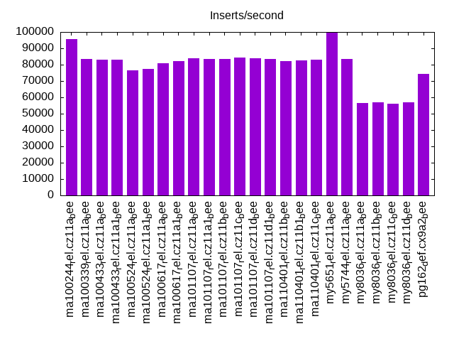
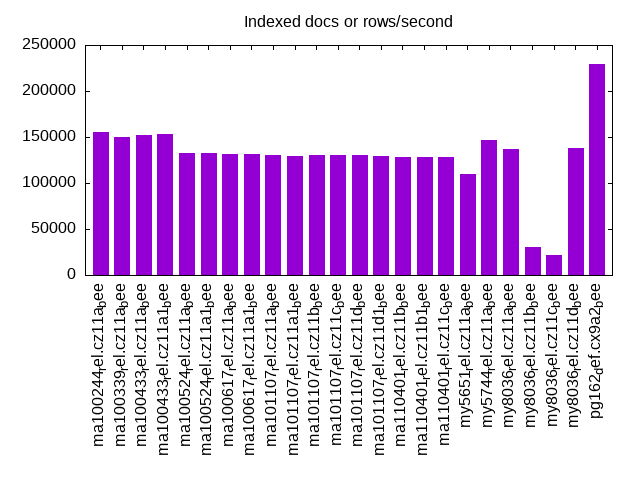
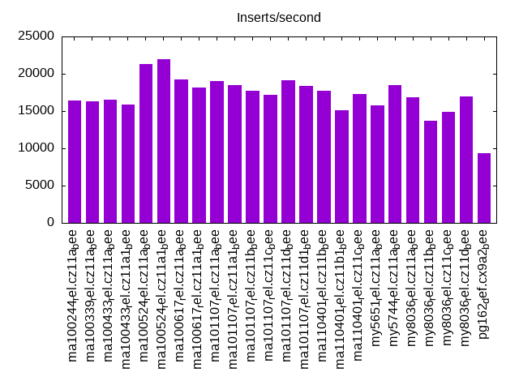
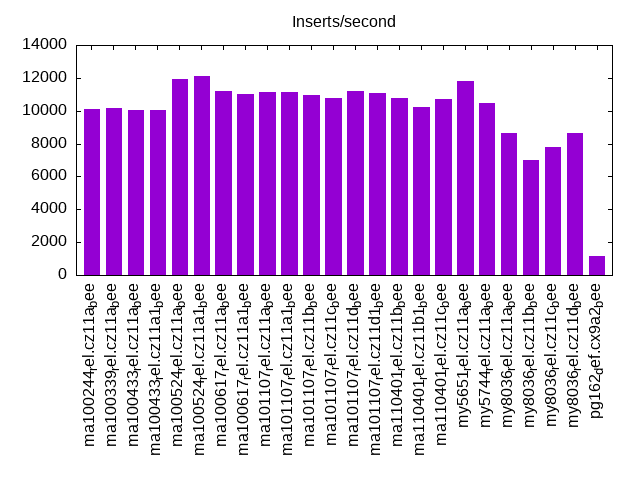
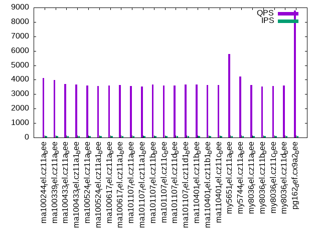
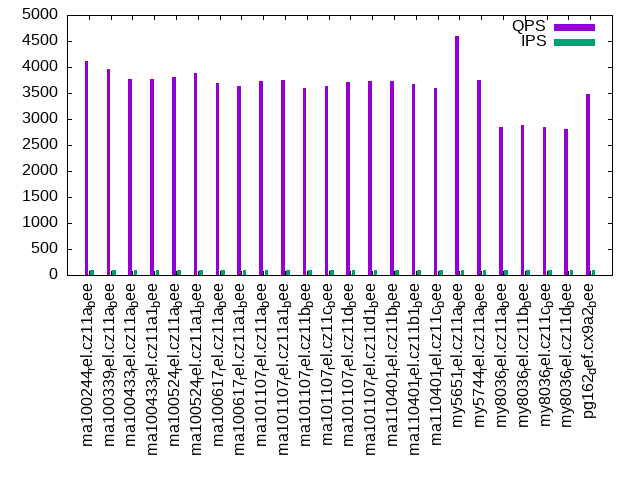
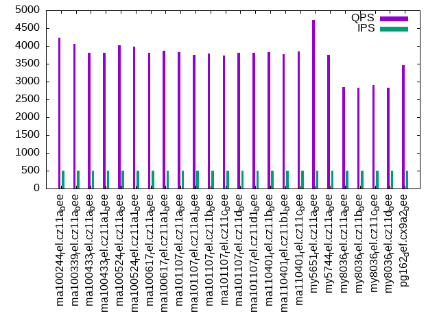
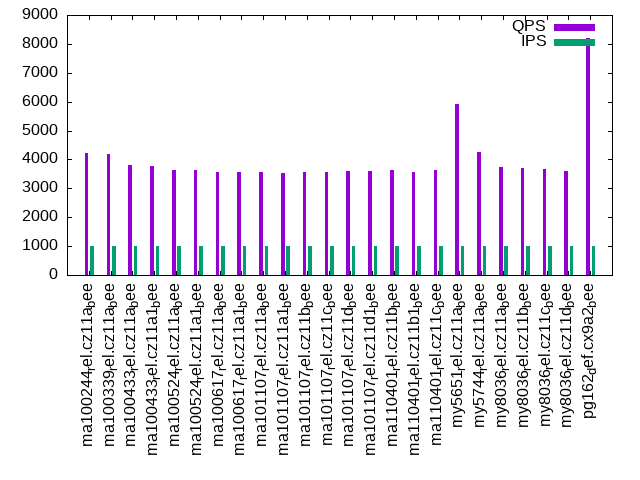
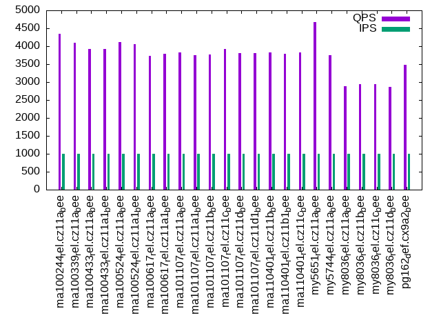

Introduction
This is a report for the insert benchmark with 30M docs and 1 client(s). It is generated by scripts (bash, awk, sed) and Tufte might not be impressed. An overview of the insert benchmark is here and a short update is here. Below, by DBMS, I mean DBMS+version.config. An example is my8020.c10b40 where my means MySQL, 8020 is version 8.0.20 and c10b40 is the name for the configuration file.
The test server has 8 AMD cores, 16G RAM and an NVMe SSD. It is described here as the Beelink. The benchmark was run with 1 client and there were 1 or 3 connections per client (1 for queries or inserts without rate limits, 1+1 for rate limited inserts+deletes). It uses 1 table. It loads 30M rows per table without secondary indexes, creates 3 secondary indexes per table, then inserts 40m+10m rows per table with a delete per insert to avoid growing the table. It then does 6 read+write tests for 1800s each that do queries as fast as possible with 100,100,500,500,1000,1000 inserts/s and the same for deletes/s per client concurrent with the queries. The database is cached in memory. Clients and the DBMS share one server. The per-database configs are in the per-database subdirectories here.
The tested DBMS are:
- ma100244_rel.cz11a_bee - MariaDB 10.2.44 with the cz11a_bee config that uses innodb_flush_method=O_DIRECT_NO_FSYNC
- ma100339_rel.cz11a_bee - MariaDB 10.3.39 with the cz11a_bee config
- ma100433_rel.cz11a_bee - MariaDB 10.4.33 with the cz11a_bee config
- ma100433_rel.cz11a1_bee - MariaDB 10.4.33 with the cz11a1_bee config that uses a smaller buffer pool and redo log
- ma100524_rel.cz11a_bee - MariaDB 10.5.24 with the cz11a_bee config
- ma100524_rel.cz11a1_bee - MariaDB 10.5.24 with the cz11a1_bee config that uses a smaller buffer pool and redo log
- ma100617_rel.cz11a_bee - MariaDB 10.6.17 with the cz11a_bee config
- ma100617_rel.cz11a1_bee - MariaDB 10.6.17 with the cz11a1_bee config that uses a smaller buffer pool and redo log
- ma101107_rel.cz11a_bee - MariaDB 10.11.7 with the cz11a_bee config
- ma101107_rel.cz11a1_bee - MariaDB 10.11.7 with the cz11a1_bee config that uses a smaller buffer pool and redo log
- ma101107_rel.cz11b_bee - MariaDB 10.11.7 with the cz11b_bee config that uses innodb_flush_method=O_DIRECT
- ma101107_rel.cz11c_bee - MariaDB 10.11.7 with the cz11c_bee config that uses innodb_flush_method=fsync
- ma101107_rel.cz11d_bee - MariaDB 10.11.7 with the cz11d_bee config that uses innodb_change_buffering=all
- ma101107_rel.cz11d1_bee - MariaDB 10.11.7 with the cz11d1_bee config that uses innodb_change_buffering=alland a smaller buffer pool and redo log
- ma110401_rel.cz11b_bee - MariaDB 11.4.1 with the cz11b_bee config that uses innodb_flush_method=O_DIRECT
- ma110401_rel.cz11b1_bee - MariaDB 11.4.1 with the cz11b1_bee config that uses innodb_flush_method=O_DIRECT and a smaller buffer pool and redo log
- ma110401_rel.cz11c_bee - MariaDB 11.4.1 with the cz11c_bee config that uses innodb_flush_method=fsync
- my5651_rel.cz11a_bee - MySQL 5.6.51 with the cz11a_bee config
- my5744_rel.cz11a_bee - MySQL 5.7.44 with the cz11a_bee config
- my8036_rel.cz11a_bee - MySQL 8.0.36 with the cz11a_bee config
- my8036_rel.cz11b_bee - MySQL 8.0.36 with the cz11b_bee config that uses innodb_flush_method=O_DIRECT
- my8036_rel.cz11c_bee - MySQL 8.0.36 with the cz11c_bee config that uses innodb_flush_method=fsync
- my8036_rel.cz11d_bee - MySQL 8.0.36 with the cz11d_bee config that uses innodb_change_buffering=none
- pg162_def.cx9a2_bee - Postgres 16.2 with the cx9a2_bee config
Contents
- Summary
- l.i0: load without secondary indexes
- l.x: create secondary indexes
- l.i1: continue load after secondary indexes created with 50 inserts per transaction
- l.i2: continue load after secondary indexes created with 5 inserts per transaction
- qr100.L1: range queries with 100 insert/s per client
- qp100.L2: point queries with 100 insert/s per client
- qr500.L3: range queries with 500 insert/s per client
- qp500.L4: point queries with 500 insert/s per client
- qr1000.L5: range queries with 1000 insert/s per client
- qp1000.L6: point queries with 1000 insert/s per client
Summary
The numbers are inserts/s for l.i0, l.i1 and l.i2, indexed docs (or rows) /s for l.x and queries/s for qr100, qp100 thru qr1000, qp1000" The values are the average rate over the entire test for inserts (IPS) and queries (QPS). The range of values for IPS and QPS is split into 3 parts: bottom 25%, middle 50%, top 25%. Values in the bottom 25% have a red background, values in the top 25% have a green background and values in the middle have no color. A gray background is used for values that can be ignored because the DBMS did not sustain the target insert rate. Red backgrounds are not used when the minimum value is within 80% of the max value.
| dbms | l.i0 | l.x | l.i1 | l.i2 | qr100 | qp100 | qr500 | qp500 | qr1000 | qp1000 |
|---|---|---|---|---|---|---|---|---|---|---|
| ma100244_rel.cz11a_bee | 95541 | 155441 | 16454 | 10111 | 4128 | 4106 | 4184 | 4231 | 4232 | 4350 |
| ma100339_rel.cz11a_bee | 83565 | 150000 | 16320 | 10194 | 3970 | 3970 | 4062 | 4055 | 4182 | 4093 |
| ma100433_rel.cz11a_bee | 83102 | 152285 | 16522 | 10040 | 3713 | 3764 | 3757 | 3805 | 3814 | 3920 |
| ma100433_rel.cz11a1_bee | 82873 | 153062 | 15835 | 10040 | 3681 | 3763 | 3785 | 3801 | 3776 | 3928 |
| ma100524_rel.cz11a_bee | 76726 | 132744 | 21345 | 11947 | 3607 | 3801 | 3650 | 4015 | 3619 | 4107 |
| ma100524_rel.cz11a1_bee | 77320 | 132744 | 21954 | 12106 | 3553 | 3884 | 3554 | 3974 | 3636 | 4062 |
| ma100617_rel.cz11a_bee | 81081 | 131005 | 19286 | 11186 | 3613 | 3698 | 3573 | 3813 | 3580 | 3727 |
| ma100617_rel.cz11a1_bee | 82192 | 131579 | 18198 | 11038 | 3630 | 3626 | 3608 | 3866 | 3555 | 3779 |
| ma101107_rel.cz11a_bee | 83799 | 130435 | 19066 | 11136 | 3565 | 3729 | 3516 | 3818 | 3574 | 3824 |
| ma101107_rel.cz11a1_bee | 83565 | 129870 | 18459 | 11111 | 3529 | 3752 | 3550 | 3751 | 3536 | 3756 |
| ma101107_rel.cz11b_bee | 83565 | 130435 | 17730 | 10941 | 3670 | 3588 | 3621 | 3791 | 3578 | 3768 |
| ma101107_rel.cz11c_bee | 84270 | 130435 | 17219 | 10799 | 3599 | 3644 | 3568 | 3724 | 3554 | 3919 |
| ma101107_rel.cz11d_bee | 83799 | 130435 | 19175 | 11198 | 3614 | 3720 | 3580 | 3802 | 3597 | 3807 |
| ma101107_rel.cz11d1_bee | 83565 | 129870 | 18391 | 11074 | 3663 | 3728 | 3628 | 3817 | 3589 | 3805 |
| ma110401_rel.cz11b_bee | 82192 | 128206 | 17770 | 10799 | 3667 | 3728 | 3593 | 3835 | 3618 | 3836 |
| ma110401_rel.cz11b1_bee | 82645 | 128756 | 15094 | 10214 | 3633 | 3674 | 3559 | 3765 | 3552 | 3784 |
| ma110401_rel.cz11c_bee | 83102 | 128206 | 17264 | 10707 | 3642 | 3597 | 3622 | 3849 | 3645 | 3836 |
| my5651_rel.cz11a_bee | 99668 | 109489 | 15804 | 11792 | 5784 | 4595 | 5873 | 4738 | 5935 | 4679 |
| my5744_rel.cz11a_bee | 83565 | 146342 | 18484 | 10493 | 4224 | 3756 | 4229 | 3751 | 4241 | 3753 |
| my8036_rel.cz11a_bee | 56604 | 136987 | 16835 | 8643 | 3642 | 2842 | 3674 | 2838 | 3723 | 2885 |
| my8036_rel.cz11b_bee | 56818 | 30832 | 13642 | 7027 | 3532 | 2876 | 3634 | 2823 | 3701 | 2942 |
| my8036_rel.cz11c_bee | 56180 | 21614 | 14909 | 7770 | 3580 | 2837 | 3558 | 2908 | 3677 | 2938 |
| my8036_rel.cz11d_bee | 57034 | 137615 | 16906 | 8650 | 3604 | 2808 | 3575 | 2830 | 3598 | 2867 |
| pg162_def.cx9a2_bee | 74442 | 229008 | 9337 | 1138 | 8805 | 3478 | 8368 | 3464 | 8189 | 3486 |
This table has relative throughput, throughput for the DBMS relative to the DBMS in the first line, using the absolute throughput from the previous table. Values less than 0.95 have a yellow background. Values greater than 1.05 have a blue background.
| dbms | l.i0 | l.x | l.i1 | l.i2 | qr100 | qp100 | qr500 | qp500 | qr1000 | qp1000 |
|---|---|---|---|---|---|---|---|---|---|---|
| ma100244_rel.cz11a_bee | 1.00 | 1.00 | 1.00 | 1.00 | 1.00 | 1.00 | 1.00 | 1.00 | 1.00 | 1.00 |
| ma100339_rel.cz11a_bee | 0.87 | 0.96 | 0.99 | 1.01 | 0.96 | 0.97 | 0.97 | 0.96 | 0.99 | 0.94 |
| ma100433_rel.cz11a_bee | 0.87 | 0.98 | 1.00 | 0.99 | 0.90 | 0.92 | 0.90 | 0.90 | 0.90 | 0.90 |
| ma100433_rel.cz11a1_bee | 0.87 | 0.98 | 0.96 | 0.99 | 0.89 | 0.92 | 0.90 | 0.90 | 0.89 | 0.90 |
| ma100524_rel.cz11a_bee | 0.80 | 0.85 | 1.30 | 1.18 | 0.87 | 0.93 | 0.87 | 0.95 | 0.86 | 0.94 |
| ma100524_rel.cz11a1_bee | 0.81 | 0.85 | 1.33 | 1.20 | 0.86 | 0.95 | 0.85 | 0.94 | 0.86 | 0.93 |
| ma100617_rel.cz11a_bee | 0.85 | 0.84 | 1.17 | 1.11 | 0.88 | 0.90 | 0.85 | 0.90 | 0.85 | 0.86 |
| ma100617_rel.cz11a1_bee | 0.86 | 0.85 | 1.11 | 1.09 | 0.88 | 0.88 | 0.86 | 0.91 | 0.84 | 0.87 |
| ma101107_rel.cz11a_bee | 0.88 | 0.84 | 1.16 | 1.10 | 0.86 | 0.91 | 0.84 | 0.90 | 0.84 | 0.88 |
| ma101107_rel.cz11a1_bee | 0.87 | 0.84 | 1.12 | 1.10 | 0.85 | 0.91 | 0.85 | 0.89 | 0.84 | 0.86 |
| ma101107_rel.cz11b_bee | 0.87 | 0.84 | 1.08 | 1.08 | 0.89 | 0.87 | 0.87 | 0.90 | 0.85 | 0.87 |
| ma101107_rel.cz11c_bee | 0.88 | 0.84 | 1.05 | 1.07 | 0.87 | 0.89 | 0.85 | 0.88 | 0.84 | 0.90 |
| ma101107_rel.cz11d_bee | 0.88 | 0.84 | 1.17 | 1.11 | 0.88 | 0.91 | 0.86 | 0.90 | 0.85 | 0.88 |
| ma101107_rel.cz11d1_bee | 0.87 | 0.84 | 1.12 | 1.10 | 0.89 | 0.91 | 0.87 | 0.90 | 0.85 | 0.87 |
| ma110401_rel.cz11b_bee | 0.86 | 0.82 | 1.08 | 1.07 | 0.89 | 0.91 | 0.86 | 0.91 | 0.85 | 0.88 |
| ma110401_rel.cz11b1_bee | 0.87 | 0.83 | 0.92 | 1.01 | 0.88 | 0.89 | 0.85 | 0.89 | 0.84 | 0.87 |
| ma110401_rel.cz11c_bee | 0.87 | 0.82 | 1.05 | 1.06 | 0.88 | 0.88 | 0.87 | 0.91 | 0.86 | 0.88 |
| my5651_rel.cz11a_bee | 1.04 | 0.70 | 0.96 | 1.17 | 1.40 | 1.12 | 1.40 | 1.12 | 1.40 | 1.08 |
| my5744_rel.cz11a_bee | 0.87 | 0.94 | 1.12 | 1.04 | 1.02 | 0.91 | 1.01 | 0.89 | 1.00 | 0.86 |
| my8036_rel.cz11a_bee | 0.59 | 0.88 | 1.02 | 0.85 | 0.88 | 0.69 | 0.88 | 0.67 | 0.88 | 0.66 |
| my8036_rel.cz11b_bee | 0.59 | 0.20 | 0.83 | 0.69 | 0.86 | 0.70 | 0.87 | 0.67 | 0.87 | 0.68 |
| my8036_rel.cz11c_bee | 0.59 | 0.14 | 0.91 | 0.77 | 0.87 | 0.69 | 0.85 | 0.69 | 0.87 | 0.68 |
| my8036_rel.cz11d_bee | 0.60 | 0.89 | 1.03 | 0.86 | 0.87 | 0.68 | 0.85 | 0.67 | 0.85 | 0.66 |
| pg162_def.cx9a2_bee | 0.78 | 1.47 | 0.57 | 0.11 | 2.13 | 0.85 | 2.00 | 0.82 | 1.94 | 0.80 |
This lists the average rate of inserts/s for the tests that do inserts concurrent with queries. For such tests the query rate is listed in the table above. The read+write tests are setup so that the insert rate should match the target rate every second. Cells that are not at least 95% of the target have a red background to indicate a failure to satisfy the target.
| dbms | qr100.L1 | qp100.L2 | qr500.L3 | qp500.L4 | qr1000.L5 | qp1000.L6 |
|---|---|---|---|---|---|---|
| ma100244_rel.cz11a_bee | 100 | 100 | 499 | 499 | 998 | 998 |
| ma100339_rel.cz11a_bee | 100 | 100 | 499 | 499 | 998 | 998 |
| ma100433_rel.cz11a_bee | 100 | 100 | 499 | 499 | 998 | 998 |
| ma100433_rel.cz11a1_bee | 100 | 100 | 499 | 499 | 998 | 998 |
| ma100524_rel.cz11a_bee | 100 | 100 | 499 | 499 | 998 | 998 |
| ma100524_rel.cz11a1_bee | 100 | 100 | 499 | 499 | 998 | 998 |
| ma100617_rel.cz11a_bee | 100 | 100 | 499 | 499 | 998 | 998 |
| ma100617_rel.cz11a1_bee | 100 | 100 | 499 | 499 | 998 | 998 |
| ma101107_rel.cz11a_bee | 100 | 100 | 499 | 499 | 998 | 998 |
| ma101107_rel.cz11a1_bee | 100 | 100 | 499 | 499 | 998 | 998 |
| ma101107_rel.cz11b_bee | 100 | 100 | 499 | 499 | 998 | 998 |
| ma101107_rel.cz11c_bee | 100 | 100 | 499 | 499 | 998 | 998 |
| ma101107_rel.cz11d_bee | 100 | 100 | 499 | 499 | 998 | 998 |
| ma101107_rel.cz11d1_bee | 100 | 100 | 499 | 499 | 998 | 998 |
| ma110401_rel.cz11b_bee | 100 | 100 | 499 | 499 | 998 | 998 |
| ma110401_rel.cz11b1_bee | 100 | 100 | 499 | 499 | 998 | 998 |
| ma110401_rel.cz11c_bee | 100 | 100 | 499 | 499 | 998 | 998 |
| my5651_rel.cz11a_bee | 100 | 100 | 499 | 499 | 998 | 998 |
| my5744_rel.cz11a_bee | 100 | 100 | 499 | 499 | 998 | 998 |
| my8036_rel.cz11a_bee | 100 | 100 | 499 | 499 | 998 | 998 |
| my8036_rel.cz11b_bee | 100 | 100 | 499 | 499 | 998 | 998 |
| my8036_rel.cz11c_bee | 100 | 100 | 499 | 499 | 998 | 998 |
| my8036_rel.cz11d_bee | 100 | 100 | 499 | 499 | 998 | 998 |
| pg162_def.cx9a2_bee | 100 | 100 | 499 | 499 | 998 | 998 |
| target | 100 | 100 | 500 | 500 | 1000 | 1000 |
l.i0
l.i0: load without secondary indexes. Graphs for performance per 1-second interval are here.
Average throughput:
Insert response time histogram: each cell has the percentage of responses that take <= the time in the header and max is the max response time in seconds. For the max column values in the top 25% of the range have a red background and in the bottom 25% of the range have a green background. The red background is not used when the min value is within 80% of the max value.
| dbms | 256us | 1ms | 4ms | 16ms | 64ms | 256ms | 1s | 4s | 16s | gt | max |
|---|---|---|---|---|---|---|---|---|---|---|---|
| ma100244_rel.cz11a_bee | 86.770 | 12.870 | 0.345 | 0.011 | 0.004 | 0.150 | |||||
| ma100339_rel.cz11a_bee | 7.202 | 92.253 | 0.500 | 0.041 | 0.004 | 0.151 | |||||
| ma100433_rel.cz11a_bee | 2.219 | 97.372 | 0.370 | 0.035 | 0.004 | 0.153 | |||||
| ma100433_rel.cz11a1_bee | 3.129 | 96.397 | 0.436 | 0.034 | 0.004 | 0.143 | |||||
| ma100524_rel.cz11a_bee | 3.727 | 95.537 | 0.577 | 0.156 | 0.004 | 0.140 | |||||
| ma100524_rel.cz11a1_bee | 6.328 | 92.935 | 0.587 | 0.147 | 0.004 | 0.140 | |||||
| ma100617_rel.cz11a_bee | 1.759 | 97.919 | 0.193 | 0.123 | 0.005 | 0.179 | |||||
| ma100617_rel.cz11a1_bee | 2.864 | 96.801 | 0.204 | 0.125 | 0.006 | 0.189 | |||||
| ma101107_rel.cz11a_bee | 10.964 | 88.724 | 0.197 | 0.111 | 0.005 | 0.182 | |||||
| ma101107_rel.cz11a1_bee | 10.692 | 88.976 | 0.206 | 0.118 | 0.007 | 0.199 | |||||
| ma101107_rel.cz11b_bee | 9.943 | 89.744 | 0.197 | 0.111 | 0.005 | 0.229 | |||||
| ma101107_rel.cz11c_bee | 12.063 | 87.625 | 0.185 | 0.121 | 0.005 | 0.251 | |||||
| ma101107_rel.cz11d_bee | 10.120 | 89.568 | 0.184 | 0.122 | 0.005 | 0.190 | |||||
| ma101107_rel.cz11d1_bee | 11.378 | 88.292 | 0.201 | 0.121 | 0.007 | 0.202 | |||||
| ma110401_rel.cz11b_bee | 2.688 | 96.998 | 0.187 | 0.122 | 0.005 | 0.206 | |||||
| ma110401_rel.cz11b1_bee | 4.149 | 95.520 | 0.200 | 0.123 | 0.008 | 0.204 | |||||
| ma110401_rel.cz11c_bee | 4.374 | 95.313 | 0.190 | 0.119 | 0.005 | 0.204 | |||||
| my5651_rel.cz11a_bee | 88.704 | 11.182 | 0.110 | 0.002 | 0.002 | 0.098 | |||||
| my5744_rel.cz11a_bee | 1.806 | 97.855 | 0.200 | 0.138 | nonzero | 0.103 | |||||
| my8036_rel.cz11a_bee | 99.413 | 0.455 | 0.131 | 0.001 | 0.086 | ||||||
| my8036_rel.cz11b_bee | 99.397 | 0.463 | 0.139 | 0.001 | 0.108 | ||||||
| my8036_rel.cz11c_bee | 99.395 | 0.448 | 0.151 | 0.005 | 0.095 | ||||||
| my8036_rel.cz11d_bee | 99.421 | 0.443 | 0.135 | 0.001 | 0.088 | ||||||
| pg162_def.cx9a2_bee | 100.000 | 0.002 |
Performance metrics for the DBMS listed above. Some are normalized by throughput, others are not. Legend for results is here.
ips qps rps rmbps wps wmbps rpq rkbpq wpi wkbpi csps cpups cspq cpupq dbgb1 dbgb2 rss maxop p50 p99 tag 95541 0 0 0.0 453.9 33.7 0.000 0.000 0.005 0.361 10657 22.8 0.112 19 2.0 17.8 2.4 0.150 96391 77714 ma100244_rel.cz11a_bee 83565 0 0 0.0 538.7 35.5 0.000 0.000 0.006 0.435 27921 34.4 0.334 33 2.0 17.8 2.5 0.151 83909 69523 ma100339_rel.cz11a_bee 83102 0 0 0.0 459.9 32.9 0.000 0.000 0.006 0.405 27677 33.9 0.333 33 2.0 17.8 NA 0.153 83807 69221 ma100433_rel.cz11a_bee 82873 0 0 0.0 523.9 34.7 0.000 0.000 0.006 0.429 27861 34.1 0.336 33 2.0 6.8 NA 0.143 83405 69657 ma100433_rel.cz11a1_bee 76726 0 0 0.0 691.7 28.8 0.000 0.000 0.009 0.385 37639 27.1 0.491 28 2.0 17.8 2.4 0.140 77051 63457 ma100524_rel.cz11a_bee 77320 0 0 0.0 696.3 29.1 0.000 0.000 0.009 0.385 37916 27.0 0.490 28 2.0 6.8 2.4 0.140 77916 64830 ma100524_rel.cz11a1_bee 81081 0 0 0.0 244.1 20.1 0.000 0.000 0.003 0.254 11013 25.3 0.136 25 2.0 17.8 2.3 0.179 81945 68623 ma100617_rel.cz11a_bee 82192 0 0 0.0 365.0 22.1 0.000 0.000 0.004 0.275 11559 25.5 0.141 25 2.0 6.8 2.3 0.189 82909 68185 ma100617_rel.cz11a1_bee 83799 0 0 0.0 266.2 21.6 0.000 0.000 0.003 0.264 11299 25.8 0.135 25 2.0 17.8 2.4 0.182 84803 71353 ma101107_rel.cz11a_bee 83565 0 0 0.0 374.7 23.3 0.000 0.000 0.004 0.286 11804 25.7 0.141 25 2.0 6.8 2.3 0.199 84651 69921 ma101107_rel.cz11a1_bee 83565 0 0 0.0 262.2 21.5 0.000 0.000 0.003 0.264 11334 25.9 0.136 25 2.0 17.8 2.4 0.229 84504 70719 ma101107_rel.cz11b_bee 84270 0 0 0.0 54.6 21.5 0.000 0.000 0.001 0.262 11219 26.0 0.133 25 2.0 17.8 2.4 0.251 84902 70520 ma101107_rel.cz11c_bee 83799 0 0 0.0 265.5 21.6 0.000 0.000 0.003 0.263 11312 25.8 0.135 25 2.0 17.8 2.4 0.190 84506 70520 ma101107_rel.cz11d_bee 83565 0 0 0.0 379.3 23.4 0.000 0.000 0.005 0.287 11733 25.7 0.140 25 2.0 6.8 2.3 0.202 84506 70521 ma101107_rel.cz11d1_bee 82192 0 0 0.0 252.5 21.1 0.000 0.000 0.003 0.262 11329 25.9 0.138 25 2.0 17.8 2.3 0.206 82810 69657 ma110401_rel.cz11b_bee 82645 0 0 0.0 369.2 23.0 0.000 0.000 0.004 0.284 11860 25.9 0.144 25 2.0 6.8 2.3 0.204 83507 69839 ma110401_rel.cz11b1_bee 83102 0 0 0.0 52.5 21.2 0.000 0.000 0.001 0.262 11328 25.9 0.136 25 2.0 17.8 2.3 0.204 83805 68653 ma110401_rel.cz11c_bee 99668 0 868 3.4 317.2 30.5 0.009 0.035 0.003 0.313 12115 22.6 0.122 18 2.0 17.5 2.7 0.098 99988 89302 my5651_rel.cz11a_bee 83565 0 0 0.0 278.0 25.9 0.000 0.000 0.003 0.318 8732 21.7 0.104 21 2.0 17.5 2.9 0.103 84304 77615 my5744_rel.cz11a_bee 56604 0 0 0.0 247.7 18.9 0.000 0.000 0.004 0.342 6537 20.8 0.115 29 2.0 17.6 3.0 0.086 56637 52440 my8036_rel.cz11a_bee 56818 0 0 0.0 286.0 19.1 0.000 0.000 0.005 0.343 6881 21.6 0.121 30 2.0 17.6 3.1 0.108 57135 51742 my8036_rel.cz11b_bee 56180 0 0 0.0 220.5 18.9 0.000 0.000 0.004 0.344 7337 22.3 0.131 32 2.0 17.6 3.0 0.095 56835 50343 my8036_rel.cz11c_bee 57034 0 0 0.0 249.5 19.1 0.000 0.000 0.004 0.342 6573 20.7 0.115 29 2.0 17.6 3.1 0.088 57135 53341 my8036_rel.cz11d_bee 74442 0 0 0.0 86.5 31.8 0.000 0.000 0.001 0.438 9192 23.8 0.123 26 2.9 7.8 0.2 0.002 74516 72917 pg162_def.cx9a2_bee
l.x
l.x: create secondary indexes.
Average throughput:
Performance metrics for the DBMS listed above. Some are normalized by throughput, others are not. Legend for results is here.
ips qps rps rmbps wps wmbps rpq rkbpq wpi wkbpi csps cpups cspq cpupq dbgb1 dbgb2 rss maxop p50 p99 tag 155441 0 0 0.0 795.1 138.0 0.000 0.000 0.005 0.909 7023 12.4 0.045 6 4.6 20.4 4.1 0.002 NA NA ma100244_rel.cz11a_bee 150000 0 0 0.0 761.3 131.8 0.000 0.000 0.005 0.900 6987 12.5 0.047 7 4.6 20.4 4.0 0.002 NA NA ma100339_rel.cz11a_bee 152285 0 0 0.0 779.4 134.6 0.000 0.000 0.005 0.905 6906 12.4 0.045 7 4.5 20.3 NA 0.001 NA NA ma100433_rel.cz11a_bee 153062 0 0 0.0 819.8 135.9 0.000 0.000 0.005 0.909 6858 12.4 0.045 6 4.5 9.3 NA 0.002 NA NA ma100433_rel.cz11a1_bee 132744 0 0 0.0 226.6 103.9 0.000 0.000 0.002 0.801 597 11.8 0.004 7 4.5 20.3 3.9 0.002 NA NA ma100524_rel.cz11a_bee 132744 0 0 0.0 477.2 107.9 0.000 0.000 0.004 0.832 1449 12.0 0.011 7 4.5 9.3 3.9 0.002 NA NA ma100524_rel.cz11a1_bee 131005 0 0 0.0 843.7 113.0 0.000 0.000 0.006 0.883 3060 12.0 0.023 7 4.5 20.3 3.8 0.002 NA NA ma100617_rel.cz11a_bee 131579 0 0 0.0 766.9 112.0 0.000 0.000 0.006 0.871 2536 12.0 0.019 7 4.5 9.3 3.8 0.002 NA NA ma100617_rel.cz11a1_bee 130435 0 0 0.0 823.0 111.7 0.000 0.000 0.006 0.877 3016 12.1 0.023 7 4.5 20.3 3.8 0.002 NA NA ma101107_rel.cz11a_bee 129870 0 0 0.0 768.9 109.9 0.000 0.000 0.006 0.866 2564 12.0 0.020 7 4.5 9.3 3.8 0.002 NA NA ma101107_rel.cz11a1_bee 130435 0 0 0.0 817.1 111.0 0.000 0.000 0.006 0.872 3151 12.1 0.024 7 4.5 20.3 3.8 0.002 NA NA ma101107_rel.cz11b_bee 130435 0 0 0.0 272.3 111.0 0.000 0.000 0.002 0.872 3240 12.2 0.025 7 4.5 20.3 3.8 0.002 NA NA ma101107_rel.cz11c_bee 130435 0 0 0.0 814.4 110.7 0.000 0.000 0.006 0.869 3054 12.1 0.023 7 4.5 20.3 3.8 0.002 NA NA ma101107_rel.cz11d_bee 129870 0 0 0.0 782.2 110.2 0.000 0.000 0.006 0.869 2584 12.0 0.020 7 4.5 9.3 3.8 0.002 NA NA ma101107_rel.cz11d1_bee 128206 0 0 0.0 807.7 109.8 0.000 0.000 0.006 0.877 2916 12.1 0.023 8 4.5 20.3 3.8 0.002 NA NA ma110401_rel.cz11b_bee 128756 0 0 0.0 728.2 108.6 0.000 0.000 0.006 0.864 2389 12.0 0.019 7 4.5 9.3 3.8 0.002 NA NA ma110401_rel.cz11b1_bee 128206 0 0 0.0 270.9 109.8 0.000 0.000 0.002 0.877 3184 12.0 0.025 7 4.5 20.3 3.8 0.002 NA NA ma110401_rel.cz11c_bee 109489 0 10 0.0 857.0 113.1 0.000 0.000 0.008 1.058 2388 11.6 0.022 8 4.2 19.7 4.8 0.002 NA NA my5651_rel.cz11a_bee 146342 0 0 0.0 1592.3 142.4 0.000 0.000 0.011 0.996 9469 12.3 0.065 7 4.6 20.1 4.4 0.002 NA NA my5744_rel.cz11a_bee 136987 0 705 44.6 2524.3 150.7 0.005 0.333 0.018 1.127 9433 43.3 0.069 25 4.5 20.1 5.3 0.003 NA NA my8036_rel.cz11a_bee 30832 0 156 9.9 820.3 36.1 0.005 0.328 0.027 1.200 5284 10.8 0.171 28 4.5 20.1 5.4 0.003 NA NA my8036_rel.cz11b_bee 21614 0 109 6.9 573.2 25.3 0.005 0.328 0.027 1.200 4920 7.9 0.228 29 4.5 20.1 5.4 0.003 NA NA my8036_rel.cz11c_bee 137615 0 705 44.6 2596.0 151.8 0.005 0.332 0.019 1.130 9518 43.7 0.069 25 4.5 20.1 5.3 0.003 NA NA my8036_rel.cz11d_bee 229008 0 0 0.0 169.5 79.2 0.000 0.000 0.001 0.354 480 11.3 0.002 4 5.8 13.3 3.1 0.002 NA NA pg162_def.cx9a2_bee
l.i1
l.i1: continue load after secondary indexes created with 50 inserts per transaction. Graphs for performance per 1-second interval are here.
Average throughput:
Insert response time histogram: each cell has the percentage of responses that take <= the time in the header and max is the max response time in seconds. For the max column values in the top 25% of the range have a red background and in the bottom 25% of the range have a green background. The red background is not used when the min value is within 80% of the max value.
| dbms | 256us | 1ms | 4ms | 16ms | 64ms | 256ms | 1s | 4s | 16s | gt | max |
|---|---|---|---|---|---|---|---|---|---|---|---|
| ma100244_rel.cz11a_bee | 89.039 | 10.852 | 0.108 | 0.001 | 0.069 | ||||||
| ma100339_rel.cz11a_bee | 88.676 | 11.202 | 0.121 | 0.001 | 0.069 | ||||||
| ma100433_rel.cz11a_bee | 89.775 | 10.104 | 0.120 | 0.001 | 0.122 | ||||||
| ma100433_rel.cz11a1_bee | 86.958 | 12.892 | 0.150 | 0.001 | 0.131 | ||||||
| ma100524_rel.cz11a_bee | 96.792 | 3.098 | 0.097 | 0.001 | 0.012 | 0.399 | |||||
| ma100524_rel.cz11a1_bee | 97.384 | 2.517 | 0.086 | 0.001 | 0.011 | 0.275 | |||||
| ma100617_rel.cz11a_bee | 95.970 | 3.930 | 0.100 | 0.001 | 0.111 | ||||||
| ma100617_rel.cz11a1_bee | 93.267 | 6.601 | 0.132 | 0.001 | 0.141 | ||||||
| ma101107_rel.cz11a_bee | 95.914 | 4.010 | 0.075 | nonzero | nonzero | 0.263 | |||||
| ma101107_rel.cz11a1_bee | 93.481 | 6.398 | 0.120 | 0.001 | 0.139 | ||||||
| ma101107_rel.cz11b_bee | 94.287 | 5.220 | 0.489 | 0.004 | 0.235 | ||||||
| ma101107_rel.cz11c_bee | 94.149 | 5.084 | 0.751 | 0.015 | nonzero | 0.314 | |||||
| ma101107_rel.cz11d_bee | 95.916 | 4.012 | 0.071 | nonzero | 0.117 | ||||||
| ma101107_rel.cz11d1_bee | 93.264 | 6.610 | 0.125 | 0.001 | 0.136 | ||||||
| ma110401_rel.cz11b_bee | 94.301 | 5.211 | 0.485 | 0.004 | 0.189 | ||||||
| ma110401_rel.cz11b1_bee | 88.582 | 10.022 | 1.392 | 0.004 | 0.158 | ||||||
| ma110401_rel.cz11c_bee | 93.966 | 5.289 | 0.732 | 0.012 | 0.001 | 0.451 | |||||
| my5651_rel.cz11a_bee | 90.441 | 9.372 | 0.187 | 0.001 | 0.106 | ||||||
| my5744_rel.cz11a_bee | 94.618 | 5.285 | 0.096 | 0.001 | 0.076 | ||||||
| my8036_rel.cz11a_bee | 95.888 | 3.954 | 0.156 | 0.002 | 0.105 | ||||||
| my8036_rel.cz11b_bee | 88.756 | 10.108 | 1.125 | 0.011 | 0.191 | ||||||
| my8036_rel.cz11c_bee | 91.647 | 7.725 | 0.579 | 0.044 | 0.004 | 0.001 | 1.066 | ||||
| my8036_rel.cz11d_bee | 95.949 | 3.895 | 0.154 | 0.002 | 0.104 | ||||||
| pg162_def.cx9a2_bee | 99.997 | 0.003 | nonzero | 0.039 |
Delete response time histogram: each cell has the percentage of responses that take <= the time in the header and max is the max response time in seconds. For the max column values in the top 25% of the range have a red background and in the bottom 25% of the range have a green background. The red background is not used when the min value is within 80% of the max value.
| dbms | 256us | 1ms | 4ms | 16ms | 64ms | 256ms | 1s | 4s | 16s | gt | max |
|---|---|---|---|---|---|---|---|---|---|---|---|
| ma100244_rel.cz11a_bee | 91.345 | 8.604 | 0.050 | 0.001 | 0.068 | ||||||
| ma100339_rel.cz11a_bee | 91.777 | 8.178 | 0.044 | 0.001 | 0.069 | ||||||
| ma100433_rel.cz11a_bee | 92.937 | 7.026 | 0.036 | 0.001 | 0.074 | ||||||
| ma100433_rel.cz11a1_bee | 90.371 | 9.585 | 0.043 | 0.001 | 0.071 | ||||||
| ma100524_rel.cz11a_bee | 98.049 | 1.884 | 0.055 | 0.001 | 0.012 | 0.398 | |||||
| ma100524_rel.cz11a1_bee | 98.482 | 1.460 | 0.046 | 0.001 | 0.012 | 0.274 | |||||
| ma100617_rel.cz11a_bee | 97.234 | 2.699 | 0.067 | nonzero | 0.074 | ||||||
| ma100617_rel.cz11a1_bee | 94.890 | 5.017 | 0.093 | 0.001 | 0.101 | ||||||
| ma101107_rel.cz11a_bee | 97.312 | 2.649 | 0.039 | nonzero | 0.255 | ||||||
| ma101107_rel.cz11a1_bee | 95.029 | 4.887 | 0.083 | 0.001 | 0.104 | ||||||
| ma101107_rel.cz11b_bee | 96.131 | 3.470 | 0.396 | 0.003 | 0.234 | ||||||
| ma101107_rel.cz11c_bee | 95.916 | 3.458 | 0.613 | 0.013 | nonzero | 0.269 | |||||
| ma101107_rel.cz11d_bee | 97.301 | 2.656 | 0.043 | 0.063 | |||||||
| ma101107_rel.cz11d1_bee | 94.917 | 4.995 | 0.088 | 0.001 | 0.111 | ||||||
| ma110401_rel.cz11b_bee | 96.023 | 3.587 | 0.388 | 0.003 | 0.188 | ||||||
| ma110401_rel.cz11b1_bee | 90.808 | 8.017 | 1.173 | 0.002 | 0.148 | ||||||
| ma110401_rel.cz11c_bee | 95.709 | 3.675 | 0.605 | 0.011 | nonzero | 0.424 | |||||
| my5651_rel.cz11a_bee | 96.240 | 3.661 | 0.099 | nonzero | 0.066 | ||||||
| my5744_rel.cz11a_bee | 96.864 | 3.118 | 0.017 | 0.001 | 0.075 | ||||||
| my8036_rel.cz11a_bee | 97.676 | 2.274 | 0.049 | 0.001 | 0.105 | ||||||
| my8036_rel.cz11b_bee | 92.513 | 6.842 | 0.638 | 0.007 | 0.105 | ||||||
| my8036_rel.cz11c_bee | 94.974 | 4.752 | 0.254 | 0.016 | 0.004 | 0.001 | 1.049 | ||||
| my8036_rel.cz11d_bee | 97.608 | 2.343 | 0.047 | 0.002 | 0.104 | ||||||
| pg162_def.cx9a2_bee | 0.172 | 42.127 | 57.626 | 0.074 | 0.045 |
Performance metrics for the DBMS listed above. Some are normalized by throughput, others are not. Legend for results is here.
ips qps rps rmbps wps wmbps rpq rkbpq wpi wkbpi csps cpups cspq cpupq dbgb1 dbgb2 rss maxop p50 p99 tag 16454 0 0 0.0 7184.5 239.8 0.000 0.000 0.437 14.922 36861 53.3 2.240 259 6.1 22.0 6.7 0.069 16639 6693 ma100244_rel.cz11a_bee 16320 0 0 0.0 7115.8 237.9 0.000 0.000 0.436 14.926 42613 51.4 2.611 252 6.1 22.0 6.7 0.069 16782 5244 ma100339_rel.cz11a_bee 16522 0 0 0.0 6187.7 210.2 0.000 0.000 0.375 13.029 39510 51.5 2.391 249 6.1 22.0 NA 0.122 17231 4845 ma100433_rel.cz11a_bee 15835 0 0 0.0 8308.8 273.1 0.000 0.000 0.525 17.659 45814 50.8 2.893 257 6.1 11.0 NA 0.131 16382 5197 ma100433_rel.cz11a1_bee 21345 0 0 0.0 9246.8 294.5 0.000 0.000 0.433 14.129 55601 40.1 2.605 150 6.6 23.6 7.5 0.399 22425 200 ma100524_rel.cz11a_bee 21954 0 0 0.0 8175.3 262.0 0.000 0.000 0.372 12.222 50104 40.1 2.282 146 6.7 12.7 7.5 0.275 22825 200 ma100524_rel.cz11a1_bee 19286 0 0 0.0 2781.1 102.3 0.000 0.000 0.144 5.431 50183 35.3 2.602 146 6.2 22.0 6.1 0.111 20527 5194 ma100617_rel.cz11a_bee 18198 0 0 0.0 7743.5 246.4 0.000 0.000 0.426 13.865 72852 35.4 4.003 156 6.2 11.0 6.0 0.141 19039 5244 ma100617_rel.cz11a1_bee 19066 0 754 2.9 2800.7 102.6 0.040 0.158 0.147 5.511 50067 34.8 2.626 146 6.2 22.0 6.1 0.263 20328 5294 ma101107_rel.cz11a_bee 18459 0 76 0.3 7907.1 251.6 0.004 0.016 0.428 13.955 73400 35.5 3.976 154 6.2 11.0 6.0 0.139 19279 5394 ma101107_rel.cz11a1_bee 17730 0 698 2.7 2643.1 95.4 0.039 0.158 0.149 5.509 46805 32.9 2.640 148 6.2 22.0 6.1 0.235 18430 5294 ma101107_rel.cz11b_bee 17219 0 677 2.6 2422.3 92.4 0.039 0.157 0.141 5.496 42314 32.5 2.457 151 6.1 22.0 6.1 0.314 17281 4897 ma101107_rel.cz11c_bee 19175 0 756 3.0 2809.4 103.0 0.039 0.158 0.147 5.502 50335 34.9 2.625 146 6.2 22.0 6.1 0.117 20427 5294 ma101107_rel.cz11d_bee 18391 0 75 0.3 7898.0 251.3 0.004 0.016 0.429 13.992 73461 35.5 3.994 154 6.2 11.0 6.0 0.136 19229 5244 ma101107_rel.cz11d1_bee 17770 0 685 2.7 2634.6 95.1 0.039 0.154 0.148 5.483 46630 32.8 2.624 148 6.2 22.0 6.1 0.189 18380 5194 ma110401_rel.cz11b_bee 15094 0 60 0.2 6985.5 217.9 0.004 0.016 0.463 14.784 62069 30.4 4.112 161 6.1 11.0 6.0 0.158 15233 5244 ma110401_rel.cz11b1_bee 17264 0 663 2.6 2422.0 92.6 0.038 0.154 0.140 5.492 42459 32.3 2.459 150 6.2 22.0 6.1 0.451 17780 4895 ma110401_rel.cz11c_bee 15804 0 466 1.8 1820.3 77.2 0.029 0.118 0.115 5.003 21838 47.2 1.382 239 6.1 21.6 6.8 0.106 16831 4645 my5651_rel.cz11a_bee 18484 0 0 0.0 2024.5 87.4 0.000 0.000 0.110 4.843 17599 53.7 0.952 232 6.2 21.7 7.1 0.076 19379 5494 my5744_rel.cz11a_bee 16835 0 61 1.0 2782.0 102.0 0.004 0.058 0.165 6.206 38919 38.5 2.312 183 6.5 22.4 7.9 0.105 17580 5244 my8036_rel.cz11a_bee 13642 0 40 0.6 1602.6 60.8 0.003 0.047 0.117 4.563 34147 37.2 2.503 218 6.1 21.8 7.3 0.191 14041 3995 my8036_rel.cz11b_bee 14909 0 6 0.3 982.0 48.3 0.000 0.018 0.066 3.314 33407 36.8 2.241 197 6.3 22.1 6.9 1.066 16432 2547 my8036_rel.cz11c_bee 16906 0 61 1.0 2752.6 101.3 0.004 0.058 0.163 6.135 38939 38.6 2.303 183 6.5 22.4 7.9 0.104 17580 5244 my8036_rel.cz11d_bee 9337 0 23 0.1 49.6 13.3 0.002 0.012 0.005 1.463 4800 20.1 0.514 172 7.8 32.3 6.3 0.039 7442 3495 pg162_def.cx9a2_bee
l.i2
l.i2: continue load after secondary indexes created with 5 inserts per transaction. Graphs for performance per 1-second interval are here.
Average throughput:
Insert response time histogram: each cell has the percentage of responses that take <= the time in the header and max is the max response time in seconds. For the max column values in the top 25% of the range have a red background and in the bottom 25% of the range have a green background. The red background is not used when the min value is within 80% of the max value.
| dbms | 256us | 1ms | 4ms | 16ms | 64ms | 256ms | 1s | 4s | 16s | gt | max |
|---|---|---|---|---|---|---|---|---|---|---|---|
| ma100244_rel.cz11a_bee | 1.814 | 96.575 | 0.417 | 1.191 | 0.003 | 0.046 | |||||
| ma100339_rel.cz11a_bee | 0.745 | 97.757 | 0.372 | 1.123 | 0.003 | 0.048 | |||||
| ma100433_rel.cz11a_bee | 0.175 | 98.321 | 0.371 | 1.130 | 0.003 | 0.046 | |||||
| ma100433_rel.cz11a1_bee | 0.199 | 98.249 | 0.379 | 1.171 | 0.002 | 0.044 | |||||
| ma100524_rel.cz11a_bee | 0.955 | 98.487 | 0.432 | 0.124 | 0.002 | 0.064 | |||||
| ma100524_rel.cz11a1_bee | 1.439 | 98.019 | 0.425 | 0.114 | 0.003 | 0.063 | |||||
| ma100617_rel.cz11a_bee | 0.316 | 99.556 | 0.104 | 0.022 | nonzero | nonzero | 0.071 | ||||
| ma100617_rel.cz11a1_bee | 0.451 | 99.144 | 0.322 | 0.081 | 0.001 | nonzero | 0.071 | ||||
| ma101107_rel.cz11a_bee | 0.384 | 99.465 | 0.131 | 0.021 | nonzero | nonzero | 0.065 | ||||
| ma101107_rel.cz11a1_bee | 0.663 | 98.875 | 0.378 | 0.082 | 0.002 | nonzero | 0.072 | ||||
| ma101107_rel.cz11b_bee | 0.518 | 99.260 | 0.117 | 0.102 | 0.002 | 0.063 | |||||
| ma101107_rel.cz11c_bee | 0.344 | 99.411 | 0.113 | 0.122 | 0.009 | nonzero | 0.106 | ||||
| ma101107_rel.cz11d_bee | 0.428 | 99.415 | 0.135 | 0.021 | 0.001 | 0.063 | |||||
| ma101107_rel.cz11d1_bee | 0.606 | 98.930 | 0.379 | 0.083 | 0.002 | nonzero | 0.073 | ||||
| ma110401_rel.cz11b_bee | 0.358 | 99.424 | 0.111 | 0.104 | 0.003 | nonzero | 0.064 | ||||
| ma110401_rel.cz11b1_bee | 0.665 | 98.651 | 0.305 | 0.371 | 0.008 | 0.045 | |||||
| ma110401_rel.cz11c_bee | 0.708 | 99.044 | 0.116 | 0.124 | 0.008 | nonzero | 0.093 | ||||
| my5651_rel.cz11a_bee | 8.832 | 90.820 | 0.127 | 0.221 | 0.001 | 0.060 | |||||
| my5744_rel.cz11a_bee | 0.136 | 98.727 | 0.889 | 0.247 | 0.001 | 0.060 | |||||
| my8036_rel.cz11a_bee | 99.384 | 0.360 | 0.254 | 0.002 | nonzero | 0.102 | |||||
| my8036_rel.cz11b_bee | 98.023 | 0.884 | 0.997 | 0.093 | 0.002 | 0.107 | |||||
| my8036_rel.cz11c_bee | 98.793 | 0.524 | 0.656 | 0.025 | 0.002 | 0.118 | |||||
| my8036_rel.cz11d_bee | 99.375 | 0.369 | 0.254 | 0.002 | 0.001 | 0.102 | |||||
| pg162_def.cx9a2_bee | 0.023 | 99.974 | 0.003 | nonzero | 0.005 |
Delete response time histogram: each cell has the percentage of responses that take <= the time in the header and max is the max response time in seconds. For the max column values in the top 25% of the range have a red background and in the bottom 25% of the range have a green background. The red background is not used when the min value is within 80% of the max value.
| dbms | 256us | 1ms | 4ms | 16ms | 64ms | 256ms | 1s | 4s | 16s | gt | max |
|---|---|---|---|---|---|---|---|---|---|---|---|
| ma100244_rel.cz11a_bee | 3.577 | 94.789 | 0.447 | 1.185 | 0.002 | 0.046 | |||||
| ma100339_rel.cz11a_bee | 3.985 | 94.502 | 0.394 | 1.117 | 0.002 | 0.048 | |||||
| ma100433_rel.cz11a_bee | 2.983 | 95.468 | 0.424 | 1.123 | 0.002 | 0.046 | |||||
| ma100433_rel.cz11a1_bee | 2.806 | 95.604 | 0.426 | 1.162 | 0.002 | 0.043 | |||||
| ma100524_rel.cz11a_bee | 1.820 | 97.601 | 0.457 | 0.119 | 0.002 | 0.064 | |||||
| ma100524_rel.cz11a1_bee | 2.114 | 97.332 | 0.443 | 0.109 | 0.002 | 0.062 | |||||
| ma100617_rel.cz11a_bee | 2.485 | 97.387 | 0.107 | 0.020 | nonzero | nonzero | 0.071 | ||||
| ma100617_rel.cz11a1_bee | 2.181 | 97.436 | 0.309 | 0.073 | 0.001 | nonzero | 0.071 | ||||
| ma101107_rel.cz11a_bee | 3.060 | 96.786 | 0.134 | 0.020 | nonzero | nonzero | 0.065 | ||||
| ma101107_rel.cz11a1_bee | 3.300 | 96.257 | 0.365 | 0.076 | 0.002 | nonzero | 0.072 | ||||
| ma101107_rel.cz11b_bee | 2.748 | 97.043 | 0.113 | 0.094 | 0.002 | 0.063 | |||||
| ma101107_rel.cz11c_bee | 3.082 | 96.685 | 0.112 | 0.113 | 0.008 | nonzero | 0.106 | ||||
| ma101107_rel.cz11d_bee | 2.951 | 96.891 | 0.137 | 0.021 | 0.001 | 0.063 | |||||
| ma101107_rel.cz11d1_bee | 2.887 | 96.673 | 0.364 | 0.074 | 0.002 | nonzero | 0.072 | ||||
| ma110401_rel.cz11b_bee | 1.129 | 98.652 | 0.117 | 0.098 | 0.003 | nonzero | 0.064 | ||||
| ma110401_rel.cz11b1_bee | 1.519 | 97.830 | 0.296 | 0.349 | 0.007 | 0.045 | |||||
| ma110401_rel.cz11c_bee | 1.406 | 98.354 | 0.116 | 0.117 | 0.007 | nonzero | 0.067 | ||||
| my5651_rel.cz11a_bee | 13.136 | 86.570 | 0.074 | 0.220 | 0.001 | 0.060 | |||||
| my5744_rel.cz11a_bee | 0.424 | 98.416 | 0.914 | 0.245 | 0.001 | 0.060 | |||||
| my8036_rel.cz11a_bee | 99.545 | 0.204 | 0.249 | 0.002 | nonzero | 0.102 | |||||
| my8036_rel.cz11b_bee | 98.408 | 0.542 | 0.965 | 0.081 | 0.003 | 0.102 | |||||
| my8036_rel.cz11c_bee | 99.037 | 0.280 | 0.661 | 0.021 | 0.001 | 0.108 | |||||
| my8036_rel.cz11d_bee | 99.547 | 0.204 | 0.246 | 0.002 | 0.001 | 0.102 | |||||
| pg162_def.cx9a2_bee | 8.347 | 27.523 | 64.129 | 0.010 |
Performance metrics for the DBMS listed above. Some are normalized by throughput, others are not. Legend for results is here.
ips qps rps rmbps wps wmbps rpq rkbpq wpi wkbpi csps cpups cspq cpupq dbgb1 dbgb2 rss maxop p50 p99 tag 10111 0 0 0.0 8116.7 257.1 0.000 0.000 0.803 26.036 106666 46.6 10.549 369 6.1 22.0 6.7 0.046 10024 8531 ma100244_rel.cz11a_bee 10194 0 0 0.0 7912.9 251.5 0.000 0.000 0.776 25.264 122626 46.6 12.030 366 6.1 22.0 6.7 0.048 10143 8581 ma100339_rel.cz11a_bee 10040 0 0 0.0 7876.3 249.8 0.000 0.000 0.784 25.472 121492 46.5 12.101 371 6.1 22.0 NA 0.046 10014 8629 ma100433_rel.cz11a_bee 10040 0 0 0.0 8026.6 254.3 0.000 0.000 0.799 25.935 122279 46.6 12.179 371 6.1 11.0 NA 0.044 10033 8621 ma100433_rel.cz11a1_bee 11947 0 0 0.0 10172.5 314.0 0.000 0.000 0.851 26.913 177415 44.6 14.850 299 6.6 23.6 7.4 0.064 11951 10923 ma100524_rel.cz11a_bee 12106 0 0 0.0 10175.8 314.3 0.000 0.000 0.841 26.584 178232 44.7 14.722 295 6.7 12.7 7.4 0.063 12157 11142 ma100524_rel.cz11a1_bee 11186 0 0 0.0 1288.7 49.2 0.000 0.000 0.115 4.507 58682 36.0 5.246 257 6.2 22.0 6.1 0.071 11262 9649 ma100617_rel.cz11a_bee 11038 0 0 0.0 4223.5 135.4 0.000 0.000 0.383 12.565 72320 36.5 6.552 265 6.2 11.0 6.0 0.071 11083 9605 ma100617_rel.cz11a1_bee 11136 0 1774 6.9 1327.5 50.6 0.159 0.637 0.119 4.652 62221 35.3 5.587 254 6.2 22.0 6.1 0.065 11163 9794 ma101107_rel.cz11a_bee 11111 0 0 0.0 4378.0 140.4 0.000 0.000 0.394 12.939 72944 36.5 6.565 263 6.2 11.0 6.0 0.072 11148 9699 ma101107_rel.cz11a1_bee 10941 0 1744 6.8 1335.0 50.0 0.159 0.638 0.122 4.677 61253 35.0 5.599 256 6.2 22.0 6.1 0.063 11043 9394 ma101107_rel.cz11b_bee 10799 0 1722 6.7 1264.2 49.2 0.159 0.638 0.117 4.668 58906 34.7 5.455 257 6.1 22.0 6.1 0.106 11038 8365 ma101107_rel.cz11c_bee 11198 0 1786 7.0 1355.9 51.5 0.159 0.638 0.121 4.712 62617 35.4 5.592 253 6.2 22.0 6.1 0.063 11223 10149 ma101107_rel.cz11d_bee 11074 0 0 0.0 4360.7 139.8 0.000 0.000 0.394 12.931 72775 36.5 6.572 264 6.2 11.0 6.0 0.073 11133 9594 ma101107_rel.cz11d1_bee 10799 0 1719 6.7 1320.2 49.4 0.159 0.637 0.122 4.680 60542 34.8 5.606 258 6.2 22.0 6.1 0.064 10913 9004 ma110401_rel.cz11b_bee 10214 0 0 0.0 4089.2 129.1 0.000 0.000 0.400 12.944 67045 34.8 6.564 273 6.1 11.0 6.0 0.045 10129 8450 ma110401_rel.cz11b1_bee 10707 0 1702 6.6 1253.1 48.8 0.159 0.636 0.117 4.666 58604 34.6 5.474 259 6.2 22.0 6.1 0.093 10918 8426 ma110401_rel.cz11c_bee 11792 0 2112 8.3 1359.3 54.8 0.179 0.716 0.115 4.761 93912 44.5 7.964 302 6.1 21.6 6.8 0.060 11756 10878 my5651_rel.cz11a_bee 10493 0 0 0.0 1219.9 49.4 0.000 0.000 0.116 4.817 44878 42.2 4.277 322 6.2 21.7 7.1 0.060 10498 9789 my5744_rel.cz11a_bee 8643 0 0 0.0 1481.9 50.5 0.000 0.000 0.171 5.978 51714 35.6 5.983 330 6.5 22.4 7.9 0.102 8659 7781 my8036_rel.cz11a_bee 7027 0 0 0.0 1429.2 41.4 0.000 0.000 0.203 6.034 45076 36.5 6.414 416 6.1 21.8 7.3 0.107 7062 5594 my8036_rel.cz11b_bee 7770 0 0 0.0 978.9 30.4 0.000 0.000 0.126 4.009 46777 34.0 6.020 350 6.3 22.1 6.8 0.118 7841 6209 my8036_rel.cz11c_bee 8650 0 0 0.0 1469.8 50.2 0.000 0.000 0.170 5.939 51900 35.6 6.000 329 6.5 22.4 7.9 0.102 8669 7771 my8036_rel.cz11d_bee 1138 0 0 0.0 24.8 3.8 0.000 0.000 0.022 3.390 5714 14.9 5.020 1047 7.9 29.4 5.0 0.005 884 624 pg162_def.cx9a2_bee
qr100.L1
qr100.L1: range queries with 100 insert/s per client. Graphs for performance per 1-second interval are here.
Average throughput:
Query response time histogram: each cell has the percentage of responses that take <= the time in the header and max is the max response time in seconds. For max values in the top 25% of the range have a red background and in the bottom 25% of the range have a green background. The red background is not used when the min value is within 80% of the max value.
| dbms | 256us | 1ms | 4ms | 16ms | 64ms | 256ms | 1s | 4s | 16s | gt | max |
|---|---|---|---|---|---|---|---|---|---|---|---|
| ma100244_rel.cz11a_bee | 74.389 | 25.606 | 0.004 | nonzero | nonzero | 0.018 | |||||
| ma100339_rel.cz11a_bee | 70.506 | 29.490 | 0.003 | 0.001 | nonzero | 0.017 | |||||
| ma100433_rel.cz11a_bee | 62.255 | 37.741 | 0.003 | nonzero | nonzero | 0.021 | |||||
| ma100433_rel.cz11a1_bee | 60.843 | 39.152 | 0.004 | nonzero | nonzero | 0.021 | |||||
| ma100524_rel.cz11a_bee | 56.972 | 43.028 | 0.001 | 0.003 | |||||||
| ma100524_rel.cz11a1_bee | 53.584 | 46.415 | 0.001 | nonzero | 0.005 | ||||||
| ma100617_rel.cz11a_bee | 56.594 | 43.406 | 0.001 | nonzero | 0.011 | ||||||
| ma100617_rel.cz11a1_bee | 58.211 | 41.788 | nonzero | nonzero | 0.005 | ||||||
| ma101107_rel.cz11a_bee | 54.960 | 45.040 | nonzero | nonzero | 0.005 | ||||||
| ma101107_rel.cz11a1_bee | 52.340 | 47.660 | nonzero | nonzero | 0.014 | ||||||
| ma101107_rel.cz11b_bee | 59.643 | 40.356 | 0.001 | nonzero | 0.012 | ||||||
| ma101107_rel.cz11c_bee | 56.064 | 43.935 | nonzero | nonzero | nonzero | 0.016 | |||||
| ma101107_rel.cz11d_bee | 57.715 | 42.284 | nonzero | 0.004 | |||||||
| ma101107_rel.cz11d1_bee | 59.825 | 40.174 | 0.001 | nonzero | 0.013 | ||||||
| ma110401_rel.cz11b_bee | 60.353 | 39.646 | nonzero | nonzero | 0.004 | ||||||
| ma110401_rel.cz11b1_bee | 58.305 | 41.695 | nonzero | 0.003 | |||||||
| ma110401_rel.cz11c_bee | 59.249 | 40.751 | nonzero | nonzero | 0.014 | ||||||
| my5651_rel.cz11a_bee | 97.609 | 2.384 | 0.003 | 0.004 | nonzero | 0.023 | |||||
| my5744_rel.cz11a_bee | 74.928 | 25.071 | 0.001 | nonzero | 0.005 | ||||||
| my8036_rel.cz11a_bee | 59.842 | 40.157 | 0.001 | nonzero | 0.005 | ||||||
| my8036_rel.cz11b_bee | 53.783 | 46.217 | nonzero | nonzero | 0.007 | ||||||
| my8036_rel.cz11c_bee | 56.109 | 43.891 | 0.001 | nonzero | nonzero | 0.050 | |||||
| my8036_rel.cz11d_bee | 56.269 | 43.730 | 0.001 | nonzero | 0.005 | ||||||
| pg162_def.cx9a2_bee | 99.968 | 0.032 | nonzero | 0.003 |
Insert response time histogram: each cell has the percentage of responses that take <= the time in the header and max is the max response time in seconds. For max values in the top 25% of the range have a red background and in the bottom 25% of the range have a green background. The red background is not used when the min value is within 80% of the max value.
| dbms | 256us | 1ms | 4ms | 16ms | 64ms | 256ms | 1s | 4s | 16s | gt | max |
|---|---|---|---|---|---|---|---|---|---|---|---|
| ma100244_rel.cz11a_bee | 95.056 | 3.750 | 1.194 | 0.040 | |||||||
| ma100339_rel.cz11a_bee | 95.472 | 3.333 | 1.194 | 0.036 | |||||||
| ma100433_rel.cz11a_bee | 95.250 | 3.167 | 1.583 | 0.038 | |||||||
| ma100433_rel.cz11a1_bee | 95.556 | 3.389 | 1.056 | 0.035 | |||||||
| ma100524_rel.cz11a_bee | 97.167 | 2.833 | 0.005 | ||||||||
| ma100524_rel.cz11a1_bee | 97.333 | 2.667 | 0.005 | ||||||||
| ma100617_rel.cz11a_bee | 99.889 | 0.056 | 0.056 | 0.021 | |||||||
| ma100617_rel.cz11a1_bee | 99.944 | 0.056 | 0.015 | ||||||||
| ma101107_rel.cz11a_bee | 53.306 | 46.667 | 0.028 | 0.024 | |||||||
| ma101107_rel.cz11a1_bee | 99.944 | 0.028 | 0.028 | 0.021 | |||||||
| ma101107_rel.cz11b_bee | 53.194 | 46.778 | 0.028 | 0.044 | |||||||
| ma101107_rel.cz11c_bee | 53.028 | 46.972 | 0.012 | ||||||||
| ma101107_rel.cz11d_bee | 53.278 | 46.694 | 0.028 | 0.026 | |||||||
| ma101107_rel.cz11d1_bee | 99.917 | 0.083 | 0.015 | ||||||||
| ma110401_rel.cz11b_bee | 53.250 | 46.722 | 0.028 | 0.020 | |||||||
| ma110401_rel.cz11b1_bee | 99.944 | 0.028 | 0.028 | 0.023 | |||||||
| ma110401_rel.cz11c_bee | 53.306 | 46.694 | 0.012 | ||||||||
| my5651_rel.cz11a_bee | 47.556 | 49.806 | 2.639 | 0.056 | |||||||
| my5744_rel.cz11a_bee | 99.472 | 0.528 | 0.013 | ||||||||
| my8036_rel.cz11a_bee | 98.889 | 1.083 | 0.028 | 0.026 | |||||||
| my8036_rel.cz11b_bee | 99.528 | 0.472 | 0.015 | ||||||||
| my8036_rel.cz11c_bee | 99.278 | 0.667 | 0.028 | 0.028 | 0.085 | ||||||
| my8036_rel.cz11d_bee | 99.472 | 0.528 | 0.014 | ||||||||
| pg162_def.cx9a2_bee | 99.667 | 0.333 | 0.008 |
Delete response time histogram: each cell has the percentage of responses that take <= the time in the header and max is the max response time in seconds. For max values in the top 25% of the range have a red background and in the bottom 25% of the range have a green background. The red background is not used when the min value is within 80% of the max value.
| dbms | 256us | 1ms | 4ms | 16ms | 64ms | 256ms | 1s | 4s | 16s | gt | max |
|---|---|---|---|---|---|---|---|---|---|---|---|
| ma100244_rel.cz11a_bee | 95.861 | 3.278 | 0.861 | 0.040 | |||||||
| ma100339_rel.cz11a_bee | 96.278 | 2.750 | 0.972 | 0.030 | |||||||
| ma100433_rel.cz11a_bee | 96.167 | 2.944 | 0.889 | 0.038 | |||||||
| ma100433_rel.cz11a1_bee | 96.250 | 2.944 | 0.806 | 0.038 | |||||||
| ma100524_rel.cz11a_bee | 99.944 | 0.056 | 0.006 | ||||||||
| ma100524_rel.cz11a1_bee | 99.972 | 0.028 | 0.004 | ||||||||
| ma100617_rel.cz11a_bee | 99.972 | 0.028 | 0.017 | ||||||||
| ma100617_rel.cz11a1_bee | 99.972 | 0.028 | 0.020 | ||||||||
| ma101107_rel.cz11a_bee | 53.361 | 46.639 | 0.012 | ||||||||
| ma101107_rel.cz11a1_bee | 99.944 | 0.056 | 0.014 | ||||||||
| ma101107_rel.cz11b_bee | 53.222 | 46.750 | 0.028 | 0.017 | |||||||
| ma101107_rel.cz11c_bee | 53.028 | 46.972 | 0.012 | ||||||||
| ma101107_rel.cz11d_bee | 53.278 | 46.722 | 0.012 | ||||||||
| ma101107_rel.cz11d1_bee | 99.972 | 0.028 | 0.017 | ||||||||
| ma110401_rel.cz11b_bee | 53.306 | 46.694 | 0.012 | ||||||||
| ma110401_rel.cz11b1_bee | 100.000 | 0.003 | |||||||||
| ma110401_rel.cz11c_bee | 53.278 | 46.722 | 0.013 | ||||||||
| my5651_rel.cz11a_bee | 48.972 | 49.056 | 1.972 | 0.062 | |||||||
| my5744_rel.cz11a_bee | 99.639 | 0.361 | 0.012 | ||||||||
| my8036_rel.cz11a_bee | 99.028 | 0.944 | 0.028 | 0.019 | |||||||
| my8036_rel.cz11b_bee | 99.667 | 0.333 | 0.013 | ||||||||
| my8036_rel.cz11c_bee | 99.417 | 0.472 | 0.056 | 0.056 | 0.091 | ||||||
| my8036_rel.cz11d_bee | 99.500 | 0.500 | 0.015 | ||||||||
| pg162_def.cx9a2_bee | 1.972 | 97.889 | 0.139 | 0.005 |
Performance metrics for the DBMS listed above. Some are normalized by throughput, others are not. Legend for results is here.
ips qps rps rmbps wps wmbps rpq rkbpq wpi wkbpi csps cpups cspq cpupq dbgb1 dbgb2 rss maxop p50 p99 tag 100 4128 0 0.0 787.4 23.7 0.000 0.000 7.889 243.326 19411 13.6 4.703 264 6.1 22.0 6.7 0.018 4059 3868 ma100244_rel.cz11a_bee 100 3970 0 0.0 789.6 23.8 0.000 0.000 7.912 244.035 18832 13.6 4.744 274 6.1 22.0 6.7 0.017 3915 3724 ma100339_rel.cz11a_bee 100 3713 0 0.0 786.2 23.7 0.000 0.000 7.878 243.009 17838 13.7 4.805 295 6.1 22.0 NA 0.021 3660 3500 ma100433_rel.cz11a_bee 100 3681 0 0.0 790.9 23.8 0.000 0.000 7.925 244.436 17715 13.7 4.813 298 6.1 11.0 NA 0.021 3643 3484 ma100433_rel.cz11a1_bee 100 3607 0 0.0 2.3 0.1 0.000 0.000 0.023 1.171 15190 12.9 4.211 286 6.6 23.6 7.4 0.003 3580 3404 ma100524_rel.cz11a_bee 100 3553 0 0.0 2.3 0.1 0.000 0.000 0.023 1.157 14986 12.8 4.218 288 6.7 12.7 7.4 0.005 3532 3372 ma100524_rel.cz11a1_bee 100 3613 0 0.0 8.0 0.3 0.000 0.000 0.080 2.944 14030 12.9 3.883 286 6.2 22.0 6.1 0.011 3580 3420 ma100617_rel.cz11a_bee 100 3630 0 0.0 8.0 0.3 0.000 0.000 0.080 2.929 14097 12.8 3.884 282 6.2 11.0 6.0 0.005 3612 3452 ma100617_rel.cz11a1_bee 100 3565 3 0.0 8.0 0.3 0.001 0.004 0.080 2.955 13852 12.8 3.886 287 6.2 22.0 6.1 0.005 3532 3388 ma101107_rel.cz11a_bee 100 3529 0 0.0 8.0 0.3 0.000 0.000 0.080 2.979 13712 12.6 3.886 286 6.2 11.0 6.0 0.014 3515 3372 ma101107_rel.cz11a1_bee 100 3670 3 0.0 8.1 0.3 0.001 0.003 0.082 2.954 14267 12.8 3.888 279 6.2 22.0 6.1 0.012 3627 3452 ma101107_rel.cz11b_bee 100 3599 3 0.0 8.1 0.3 0.001 0.003 0.081 2.963 13976 12.9 3.884 287 6.1 22.0 6.1 0.016 3564 3404 ma101107_rel.cz11c_bee 100 3614 3 0.0 8.0 0.3 0.001 0.004 0.080 2.954 14052 12.9 3.888 286 6.2 22.0 6.1 0.004 3595 3436 ma101107_rel.cz11d_bee 100 3663 0 0.0 8.0 0.3 0.000 0.000 0.080 2.942 14227 12.7 3.883 277 6.2 11.0 6.0 0.013 3628 3452 ma101107_rel.cz11d1_bee 100 3667 3 0.0 8.2 0.3 0.001 0.003 0.082 2.944 14247 13.0 3.885 284 6.2 22.0 6.1 0.004 3644 3484 ma110401_rel.cz11b_bee 100 3633 0 0.0 8.1 0.3 0.000 0.000 0.082 2.959 14113 12.8 3.885 282 6.1 11.0 5.9 0.003 3612 3452 ma110401_rel.cz11b1_bee 100 3642 3 0.0 8.1 0.3 0.001 0.003 0.081 2.962 14149 12.8 3.885 281 6.2 22.0 6.1 0.014 3612 3468 ma110401_rel.cz11c_bee 100 5784 4 0.0 215.4 6.5 0.001 0.003 2.158 66.706 22963 13.2 3.970 183 6.1 21.6 6.8 0.023 5752 5578 my5651_rel.cz11a_bee 100 4224 0 0.0 123.4 3.6 0.000 0.000 1.236 37.183 16702 12.8 3.955 242 6.2 21.7 7.1 0.005 4155 4010 my5744_rel.cz11a_bee 100 3642 0 0.0 165.3 4.2 0.000 0.000 1.657 42.812 14954 13.2 4.105 290 6.5 22.4 7.9 0.005 3612 3436 my8036_rel.cz11a_bee 100 3532 0 0.0 36.6 0.8 0.000 0.000 0.367 7.985 14170 12.9 4.012 292 6.1 21.8 7.3 0.007 3516 3388 my8036_rel.cz11b_bee 100 3580 0 0.0 111.3 2.0 0.000 0.000 1.115 20.356 14750 13.6 4.120 304 6.3 22.1 6.8 0.050 3547 3356 my8036_rel.cz11c_bee 100 3604 0 0.0 152.7 3.9 0.000 0.000 1.530 39.549 14767 13.0 4.097 289 6.5 22.4 7.9 0.005 3564 3356 my8036_rel.cz11d_bee 100 8805 0 0.0 8.7 0.8 0.000 0.000 0.088 7.705 33763 13.3 3.834 121 7.9 27.9 0.1 0.003 8468 8310 pg162_def.cx9a2_bee
qp100.L2
qp100.L2: point queries with 100 insert/s per client. Graphs for performance per 1-second interval are here.
Average throughput:
Query response time histogram: each cell has the percentage of responses that take <= the time in the header and max is the max response time in seconds. For max values in the top 25% of the range have a red background and in the bottom 25% of the range have a green background. The red background is not used when the min value is within 80% of the max value.
| dbms | 256us | 1ms | 4ms | 16ms | 64ms | 256ms | 1s | 4s | 16s | gt | max |
|---|---|---|---|---|---|---|---|---|---|---|---|
| ma100244_rel.cz11a_bee | 90.240 | 9.758 | 0.001 | nonzero | nonzero | 0.016 | |||||
| ma100339_rel.cz11a_bee | 87.820 | 12.178 | 0.002 | nonzero | nonzero | 0.016 | |||||
| ma100433_rel.cz11a_bee | 76.429 | 23.569 | 0.002 | nonzero | nonzero | 0.023 | |||||
| ma100433_rel.cz11a1_bee | 76.875 | 23.123 | 0.002 | nonzero | nonzero | 0.017 | |||||
| ma100524_rel.cz11a_bee | 78.944 | 21.055 | 0.001 | 0.003 | |||||||
| ma100524_rel.cz11a1_bee | 82.506 | 17.493 | 0.001 | 0.003 | |||||||
| ma100617_rel.cz11a_bee | 72.091 | 27.907 | 0.002 | nonzero | 0.006 | ||||||
| ma100617_rel.cz11a1_bee | 71.717 | 28.282 | 0.001 | nonzero | 0.005 | ||||||
| ma101107_rel.cz11a_bee | 74.190 | 25.809 | 0.002 | nonzero | 0.005 | ||||||
| ma101107_rel.cz11a1_bee | 70.048 | 29.951 | 0.001 | nonzero | 0.005 | ||||||
| ma101107_rel.cz11b_bee | 64.672 | 35.326 | 0.002 | nonzero | 0.005 | ||||||
| ma101107_rel.cz11c_bee | 65.692 | 34.307 | 0.001 | nonzero | 0.005 | ||||||
| ma101107_rel.cz11d_bee | 65.846 | 34.152 | 0.001 | nonzero | 0.005 | ||||||
| ma101107_rel.cz11d1_bee | 71.819 | 28.180 | 0.001 | nonzero | 0.005 | ||||||
| ma110401_rel.cz11b_bee | 77.686 | 22.312 | 0.002 | nonzero | 0.007 | ||||||
| ma110401_rel.cz11b1_bee | 69.983 | 30.015 | 0.001 | nonzero | 0.005 | ||||||
| ma110401_rel.cz11c_bee | 63.743 | 36.256 | 0.001 | nonzero | 0.004 | ||||||
| my5651_rel.cz11a_bee | 94.342 | 5.648 | 0.007 | 0.003 | 0.011 | ||||||
| my5744_rel.cz11a_bee | 85.558 | 14.437 | 0.005 | 0.004 | |||||||
| my8036_rel.cz11a_bee | 10.870 | 89.128 | 0.002 | nonzero | 0.004 | ||||||
| my8036_rel.cz11b_bee | 13.687 | 86.311 | 0.001 | nonzero | 0.005 | ||||||
| my8036_rel.cz11c_bee | 12.590 | 87.408 | 0.002 | 0.003 | |||||||
| my8036_rel.cz11d_bee | 9.534 | 90.464 | 0.002 | 0.004 | |||||||
| pg162_def.cx9a2_bee | 87.122 | 12.877 | 0.001 | nonzero | 0.004 |
Insert response time histogram: each cell has the percentage of responses that take <= the time in the header and max is the max response time in seconds. For max values in the top 25% of the range have a red background and in the bottom 25% of the range have a green background. The red background is not used when the min value is within 80% of the max value.
| dbms | 256us | 1ms | 4ms | 16ms | 64ms | 256ms | 1s | 4s | 16s | gt | max |
|---|---|---|---|---|---|---|---|---|---|---|---|
| ma100244_rel.cz11a_bee | 95.361 | 3.361 | 1.278 | 0.040 | |||||||
| ma100339_rel.cz11a_bee | 95.472 | 3.250 | 1.278 | 0.035 | |||||||
| ma100433_rel.cz11a_bee | 95.222 | 3.583 | 1.194 | 0.048 | |||||||
| ma100433_rel.cz11a1_bee | 95.722 | 3.167 | 1.111 | 0.034 | |||||||
| ma100524_rel.cz11a_bee | 98.194 | 1.806 | 0.006 | ||||||||
| ma100524_rel.cz11a1_bee | 98.528 | 1.472 | 0.005 | ||||||||
| ma100617_rel.cz11a_bee | 99.972 | 0.028 | 0.009 | ||||||||
| ma100617_rel.cz11a1_bee | 99.972 | 0.028 | 0.004 | ||||||||
| ma101107_rel.cz11a_bee | 53.194 | 46.806 | 0.012 | ||||||||
| ma101107_rel.cz11a1_bee | 99.944 | 0.056 | 0.014 | ||||||||
| ma101107_rel.cz11b_bee | 53.000 | 47.000 | 0.012 | ||||||||
| ma101107_rel.cz11c_bee | 53.417 | 46.583 | 0.012 | ||||||||
| ma101107_rel.cz11d_bee | 52.944 | 47.056 | 0.012 | ||||||||
| ma101107_rel.cz11d1_bee | 99.972 | 0.028 | 0.015 | ||||||||
| ma110401_rel.cz11b_bee | 53.306 | 46.694 | 0.012 | ||||||||
| ma110401_rel.cz11b1_bee | 99.972 | 0.028 | 0.022 | ||||||||
| ma110401_rel.cz11c_bee | 53.000 | 47.000 | 0.012 | ||||||||
| my5651_rel.cz11a_bee | 50.583 | 49.083 | 0.333 | 0.023 | |||||||
| my5744_rel.cz11a_bee | 99.417 | 0.583 | 0.010 | ||||||||
| my8036_rel.cz11a_bee | 99.639 | 0.361 | 0.016 | ||||||||
| my8036_rel.cz11b_bee | 99.694 | 0.306 | 0.009 | ||||||||
| my8036_rel.cz11c_bee | 99.306 | 0.667 | 0.028 | 0.018 | |||||||
| my8036_rel.cz11d_bee | 99.722 | 0.250 | 0.028 | 0.021 | |||||||
| pg162_def.cx9a2_bee | 99.833 | 0.167 | 0.006 |
Delete response time histogram: each cell has the percentage of responses that take <= the time in the header and max is the max response time in seconds. For max values in the top 25% of the range have a red background and in the bottom 25% of the range have a green background. The red background is not used when the min value is within 80% of the max value.
| dbms | 256us | 1ms | 4ms | 16ms | 64ms | 256ms | 1s | 4s | 16s | gt | max |
|---|---|---|---|---|---|---|---|---|---|---|---|
| ma100244_rel.cz11a_bee | 96.361 | 3.111 | 0.528 | 0.023 | |||||||
| ma100339_rel.cz11a_bee | 96.111 | 2.889 | 1.000 | 0.034 | |||||||
| ma100433_rel.cz11a_bee | 96.361 | 2.750 | 0.889 | 0.043 | |||||||
| ma100433_rel.cz11a1_bee | 96.306 | 3.111 | 0.583 | 0.027 | |||||||
| ma100524_rel.cz11a_bee | 100.000 | 0.004 | |||||||||
| ma100524_rel.cz11a1_bee | 99.972 | 0.028 | 0.004 | ||||||||
| ma100617_rel.cz11a_bee | 100.000 | 0.004 | |||||||||
| ma100617_rel.cz11a1_bee | 100.000 | 0.003 | |||||||||
| ma101107_rel.cz11a_bee | 53.333 | 46.667 | 0.012 | ||||||||
| ma101107_rel.cz11a1_bee | 100.000 | 0.004 | |||||||||
| ma101107_rel.cz11b_bee | 53.083 | 46.917 | 0.012 | ||||||||
| ma101107_rel.cz11c_bee | 53.417 | 46.583 | 0.012 | ||||||||
| ma101107_rel.cz11d_bee | 53.000 | 47.000 | 0.012 | ||||||||
| ma101107_rel.cz11d1_bee | 99.944 | 0.056 | 0.016 | ||||||||
| ma110401_rel.cz11b_bee | 53.333 | 46.667 | 0.012 | ||||||||
| ma110401_rel.cz11b1_bee | 99.972 | 0.028 | 0.021 | ||||||||
| ma110401_rel.cz11c_bee | 53.111 | 46.889 | 0.012 | ||||||||
| my5651_rel.cz11a_bee | 53.556 | 46.250 | 0.194 | 0.018 | |||||||
| my5744_rel.cz11a_bee | 99.667 | 0.333 | 0.010 | ||||||||
| my8036_rel.cz11a_bee | 99.806 | 0.194 | 0.008 | ||||||||
| my8036_rel.cz11b_bee | 99.750 | 0.250 | 0.009 | ||||||||
| my8036_rel.cz11c_bee | 99.472 | 0.528 | 0.013 | ||||||||
| my8036_rel.cz11d_bee | 99.806 | 0.194 | 0.014 | ||||||||
| pg162_def.cx9a2_bee | 73.389 | 26.611 | 0.006 |
Performance metrics for the DBMS listed above. Some are normalized by throughput, others are not. Legend for results is here.
ips qps rps rmbps wps wmbps rpq rkbpq wpi wkbpi csps cpups cspq cpupq dbgb1 dbgb2 rss maxop p50 p99 tag 100 4106 0 0.0 780.3 23.5 0.000 0.000 7.819 241.154 20115 15.0 4.899 292 6.1 22.0 6.7 0.016 3916 3564 ma100244_rel.cz11a_bee 100 3970 0 0.0 784.0 23.6 0.000 0.000 7.864 242.567 19623 14.4 4.943 290 6.1 22.0 6.7 0.016 3804 3468 ma100339_rel.cz11a_bee 100 3764 0 0.0 784.4 23.6 0.000 0.000 7.859 242.401 18800 14.3 4.995 304 6.1 22.0 NA 0.023 3596 3276 ma100433_rel.cz11a_bee 100 3763 0 0.0 784.9 23.6 0.000 0.000 7.865 242.584 18774 14.4 4.989 306 6.1 11.0 NA 0.017 3596 3276 ma100433_rel.cz11a1_bee 100 3801 0 0.0 2.2 0.1 0.000 0.000 0.022 1.156 16700 14.6 4.394 307 6.6 23.6 7.4 0.003 3595 3310 ma100524_rel.cz11a_bee 100 3884 0 0.0 2.3 0.1 0.000 0.000 0.023 1.166 17037 14.6 4.387 301 6.7 12.7 7.4 0.003 3644 3324 ma100524_rel.cz11a1_bee 100 3698 0 0.0 19.5 0.6 0.000 0.000 0.196 6.476 15492 14.9 4.189 322 6.2 22.0 6.1 0.006 3532 3340 ma100617_rel.cz11a_bee 100 3626 0 0.0 13.8 0.5 0.000 0.000 0.139 4.699 14875 14.3 4.102 315 6.2 11.0 6.0 0.005 3516 3340 ma100617_rel.cz11a1_bee 100 3729 3 0.0 19.6 0.6 0.001 0.003 0.196 6.478 15342 14.1 4.114 302 6.2 22.0 6.1 0.005 3548 3324 ma101107_rel.cz11a_bee 100 3752 0 0.0 19.6 0.6 0.000 0.000 0.197 6.470 15404 13.9 4.105 296 6.2 11.0 6.0 0.005 3534 3323 ma101107_rel.cz11a1_bee 100 3588 3 0.0 19.9 0.6 0.001 0.004 0.200 6.476 14763 14.3 4.115 319 6.2 22.0 6.1 0.005 3484 3308 ma101107_rel.cz11b_bee 100 3644 3 0.0 25.6 0.8 0.001 0.003 0.257 8.239 14988 14.3 4.114 314 6.1 22.0 6.1 0.005 3500 3324 ma101107_rel.cz11c_bee 100 3720 3 0.0 13.8 0.5 0.001 0.003 0.138 4.716 15277 14.1 4.107 303 6.2 22.0 6.1 0.005 3532 3324 ma101107_rel.cz11d_bee 100 3728 0 0.0 19.6 0.6 0.000 0.000 0.197 6.447 15309 13.7 4.107 294 6.2 11.0 6.0 0.005 3532 3339 ma101107_rel.cz11d1_bee 100 3728 3 0.0 14.0 0.5 0.001 0.003 0.140 4.715 15297 14.3 4.103 307 6.2 22.0 6.1 0.007 3580 3355 ma110401_rel.cz11b_bee 100 3674 0 0.0 21.1 0.7 0.000 0.000 0.211 6.827 15101 14.3 4.110 311 6.1 11.0 5.9 0.005 3519 3308 ma110401_rel.cz11b1_bee 100 3597 3 0.0 19.8 0.6 0.001 0.003 0.198 6.484 14778 14.1 4.108 314 6.2 22.0 6.1 0.004 3500 3307 ma110401_rel.cz11c_bee 100 4595 4 0.0 2.2 0.1 0.001 0.003 0.022 1.193 18669 13.6 4.063 237 6.1 21.6 6.8 0.011 4555 4298 my5651_rel.cz11a_bee 100 3756 0 0.0 32.9 0.9 0.000 0.000 0.329 9.048 15400 14.0 4.101 298 6.2 21.7 7.1 0.004 3692 3484 my5744_rel.cz11a_bee 100 2842 0 0.0 40.9 1.1 0.000 0.000 0.409 10.861 12111 13.3 4.261 374 6.5 22.4 7.9 0.004 2748 2605 my8036_rel.cz11a_bee 100 2876 0 0.0 14.2 0.3 0.000 0.000 0.142 2.970 12190 13.3 4.238 370 6.1 21.8 7.3 0.005 2750 2621 my8036_rel.cz11b_bee 100 2837 0 0.0 19.1 0.3 0.000 0.000 0.191 2.984 12066 13.1 4.253 369 6.3 22.1 6.8 0.003 2733 2589 my8036_rel.cz11c_bee 100 2808 0 0.0 42.5 1.1 0.000 0.000 0.426 11.402 11973 13.3 4.264 379 6.5 22.4 7.9 0.004 2717 2589 my8036_rel.cz11d_bee 100 3478 0 0.0 55.1 1.6 0.000 0.000 0.552 16.835 14371 13.5 4.132 311 7.9 27.9 0.1 0.004 3452 3371 pg162_def.cx9a2_bee
qr500.L3
qr500.L3: range queries with 500 insert/s per client. Graphs for performance per 1-second interval are here.
Average throughput:

Query response time histogram: each cell has the percentage of responses that take <= the time in the header and max is the max response time in seconds. For max values in the top 25% of the range have a red background and in the bottom 25% of the range have a green background. The red background is not used when the min value is within 80% of the max value.
| dbms | 256us | 1ms | 4ms | 16ms | 64ms | 256ms | 1s | 4s | 16s | gt | max |
|---|---|---|---|---|---|---|---|---|---|---|---|
| ma100244_rel.cz11a_bee | 75.986 | 23.986 | 0.024 | 0.004 | nonzero | 0.023 | |||||
| ma100339_rel.cz11a_bee | 73.619 | 26.355 | 0.020 | 0.005 | nonzero | 0.027 | |||||
| ma100433_rel.cz11a_bee | 64.700 | 35.273 | 0.022 | 0.004 | 0.001 | 0.030 | |||||
| ma100433_rel.cz11a1_bee | 65.146 | 34.828 | 0.021 | 0.005 | 0.001 | 0.025 | |||||
| ma100524_rel.cz11a_bee | 58.624 | 41.373 | 0.003 | nonzero | 0.006 | ||||||
| ma100524_rel.cz11a1_bee | 53.134 | 46.862 | 0.003 | nonzero | 0.005 | ||||||
| ma100617_rel.cz11a_bee | 54.795 | 45.204 | 0.001 | nonzero | 0.004 | ||||||
| ma100617_rel.cz11a1_bee | 57.455 | 42.541 | 0.003 | 0.001 | 0.015 | ||||||
| ma101107_rel.cz11a_bee | 51.804 | 48.195 | 0.001 | nonzero | 0.004 | ||||||
| ma101107_rel.cz11a1_bee | 54.056 | 45.939 | 0.004 | 0.001 | 0.014 | ||||||
| ma101107_rel.cz11b_bee | 57.650 | 42.348 | 0.001 | nonzero | 0.012 | ||||||
| ma101107_rel.cz11c_bee | 55.026 | 44.973 | 0.001 | nonzero | 0.004 | ||||||
| ma101107_rel.cz11d_bee | 55.796 | 44.203 | 0.001 | nonzero | 0.006 | ||||||
| ma101107_rel.cz11d1_bee | 58.370 | 41.625 | 0.004 | 0.001 | nonzero | 0.018 | |||||
| ma110401_rel.cz11b_bee | 56.843 | 43.156 | 0.001 | 0.003 | |||||||
| ma110401_rel.cz11b1_bee | 54.207 | 45.790 | 0.002 | 0.001 | nonzero | 0.018 | |||||
| ma110401_rel.cz11c_bee | 58.087 | 41.912 | 0.001 | nonzero | 0.010 | ||||||
| my5651_rel.cz11a_bee | 97.581 | 2.412 | 0.003 | 0.003 | 0.010 | ||||||
| my5744_rel.cz11a_bee | 75.116 | 24.883 | 0.001 | nonzero | 0.005 | ||||||
| my8036_rel.cz11a_bee | 60.665 | 39.334 | 0.001 | 0.003 | |||||||
| my8036_rel.cz11b_bee | 58.989 | 41.010 | 0.001 | nonzero | 0.013 | ||||||
| my8036_rel.cz11c_bee | 53.490 | 46.507 | 0.002 | 0.001 | nonzero | 0.052 | |||||
| my8036_rel.cz11d_bee | 54.741 | 45.258 | 0.001 | nonzero | 0.005 | ||||||
| pg162_def.cx9a2_bee | 99.931 | 0.069 | nonzero | nonzero | 0.004 |
Insert response time histogram: each cell has the percentage of responses that take <= the time in the header and max is the max response time in seconds. For max values in the top 25% of the range have a red background and in the bottom 25% of the range have a green background. The red background is not used when the min value is within 80% of the max value.
| dbms | 256us | 1ms | 4ms | 16ms | 64ms | 256ms | 1s | 4s | 16s | gt | max |
|---|---|---|---|---|---|---|---|---|---|---|---|
| ma100244_rel.cz11a_bee | 87.822 | 9.150 | 3.028 | 0.047 | |||||||
| ma100339_rel.cz11a_bee | 87.322 | 9.467 | 3.211 | 0.047 | |||||||
| ma100433_rel.cz11a_bee | 87.678 | 9.194 | 3.128 | 0.046 | |||||||
| ma100433_rel.cz11a1_bee | 87.550 | 9.189 | 3.261 | 0.048 | |||||||
| ma100524_rel.cz11a_bee | 99.283 | 0.717 | 0.007 | ||||||||
| ma100524_rel.cz11a1_bee | 99.406 | 0.594 | 0.006 | ||||||||
| ma100617_rel.cz11a_bee | 99.789 | 0.211 | 0.005 | ||||||||
| ma100617_rel.cz11a1_bee | 99.272 | 0.700 | 0.028 | 0.017 | |||||||
| ma101107_rel.cz11a_bee | 90.061 | 9.939 | 0.012 | ||||||||
| ma101107_rel.cz11a1_bee | 99.200 | 0.789 | 0.011 | 0.018 | |||||||
| ma101107_rel.cz11b_bee | 90.128 | 9.872 | 0.012 | ||||||||
| ma101107_rel.cz11c_bee | 90.017 | 9.983 | 0.013 | ||||||||
| ma101107_rel.cz11d_bee | 90.106 | 9.894 | 0.012 | ||||||||
| ma101107_rel.cz11d1_bee | 99.283 | 0.689 | 0.028 | 0.025 | |||||||
| ma110401_rel.cz11b_bee | 90.122 | 9.878 | 0.012 | ||||||||
| ma110401_rel.cz11b1_bee | 99.317 | 0.556 | 0.128 | 0.025 | |||||||
| ma110401_rel.cz11c_bee | 90.111 | 9.889 | 0.014 | ||||||||
| my5651_rel.cz11a_bee | 87.278 | 12.633 | 0.089 | 0.022 | |||||||
| my5744_rel.cz11a_bee | 99.500 | 0.500 | 0.012 | ||||||||
| my8036_rel.cz11a_bee | 98.939 | 1.044 | 0.017 | 0.026 | |||||||
| my8036_rel.cz11b_bee | 99.183 | 0.789 | 0.028 | 0.037 | |||||||
| my8036_rel.cz11c_bee | 98.872 | 0.950 | 0.150 | 0.028 | 0.081 | ||||||
| my8036_rel.cz11d_bee | 99.194 | 0.789 | 0.017 | 0.025 | |||||||
| pg162_def.cx9a2_bee | 99.917 | 0.083 | 0.008 |
Delete response time histogram: each cell has the percentage of responses that take <= the time in the header and max is the max response time in seconds. For max values in the top 25% of the range have a red background and in the bottom 25% of the range have a green background. The red background is not used when the min value is within 80% of the max value.
| dbms | 256us | 1ms | 4ms | 16ms | 64ms | 256ms | 1s | 4s | 16s | gt | max |
|---|---|---|---|---|---|---|---|---|---|---|---|
| ma100244_rel.cz11a_bee | 88.750 | 8.628 | 2.622 | 0.038 | |||||||
| ma100339_rel.cz11a_bee | 88.483 | 8.828 | 2.689 | 0.050 | |||||||
| ma100433_rel.cz11a_bee | 88.783 | 8.706 | 2.511 | 0.045 | |||||||
| ma100433_rel.cz11a1_bee | 88.533 | 8.767 | 2.700 | 0.039 | |||||||
| ma100524_rel.cz11a_bee | 99.778 | 0.222 | 0.006 | ||||||||
| ma100524_rel.cz11a1_bee | 99.794 | 0.206 | 0.007 | ||||||||
| ma100617_rel.cz11a_bee | 99.950 | 0.050 | 0.006 | ||||||||
| ma100617_rel.cz11a1_bee | 99.628 | 0.361 | 0.011 | 0.020 | |||||||
| ma101107_rel.cz11a_bee | 90.511 | 9.489 | 0.012 | ||||||||
| ma101107_rel.cz11a1_bee | 99.644 | 0.339 | 0.017 | 0.018 | |||||||
| ma101107_rel.cz11b_bee | 90.550 | 9.450 | 0.012 | ||||||||
| ma101107_rel.cz11c_bee | 90.600 | 9.400 | 0.013 | ||||||||
| ma101107_rel.cz11d_bee | 90.539 | 9.461 | 0.012 | ||||||||
| ma101107_rel.cz11d1_bee | 99.661 | 0.333 | 0.006 | 0.026 | |||||||
| ma110401_rel.cz11b_bee | 90.583 | 9.417 | 0.014 | ||||||||
| ma110401_rel.cz11b1_bee | 99.644 | 0.278 | 0.078 | 0.023 | |||||||
| ma110401_rel.cz11c_bee | 90.544 | 9.456 | 0.013 | ||||||||
| my5651_rel.cz11a_bee | 90.000 | 9.972 | 0.028 | 0.018 | |||||||
| my5744_rel.cz11a_bee | 99.656 | 0.344 | 0.012 | ||||||||
| my8036_rel.cz11a_bee | 99.528 | 0.461 | 0.011 | 0.024 | |||||||
| my8036_rel.cz11b_bee | 99.506 | 0.433 | 0.061 | 0.048 | |||||||
| my8036_rel.cz11c_bee | 99.317 | 0.522 | 0.156 | 0.006 | 0.075 | ||||||
| my8036_rel.cz11d_bee | 99.711 | 0.278 | 0.011 | 0.023 | |||||||
| pg162_def.cx9a2_bee | 16.722 | 83.278 | 0.009 |
Performance metrics for the DBMS listed above. Some are normalized by throughput, others are not. Legend for results is here.
ips qps rps rmbps wps wmbps rpq rkbpq wpi wkbpi csps cpups cspq cpupq dbgb1 dbgb2 rss maxop p50 p99 tag 499 4184 0 0.0 3273.9 99.3 0.000 0.000 6.560 203.724 27004 15.7 6.454 300 6.1 22.0 6.7 0.023 4108 3836 ma100244_rel.cz11a_bee 499 4062 0 0.0 3305.0 100.2 0.000 0.000 6.622 205.651 26913 15.8 6.626 311 6.1 22.0 6.7 0.027 3995 3692 ma100339_rel.cz11a_bee 499 3757 0 0.0 3292.3 99.9 0.000 0.000 6.596 204.868 25610 15.7 6.816 334 6.1 22.0 NA 0.030 3724 3452 ma100433_rel.cz11a_bee 499 3785 0 0.0 3297.7 100.0 0.000 0.000 6.607 205.202 25735 15.7 6.799 332 6.1 11.0 NA 0.025 3740 3468 ma100433_rel.cz11a1_bee 499 3650 0 0.0 2.5 0.5 0.000 0.000 0.005 1.117 15490 14.0 4.243 307 6.6 23.6 7.4 0.006 3612 3435 ma100524_rel.cz11a_bee 499 3554 0 0.0 2.5 0.5 0.000 0.000 0.005 1.099 15109 13.7 4.251 308 6.7 12.7 7.4 0.005 3532 3356 ma100524_rel.cz11a1_bee 499 3573 0 0.0 8.3 0.7 0.000 0.000 0.017 1.462 14062 13.8 3.936 309 6.2 22.0 6.1 0.004 3548 3388 ma100617_rel.cz11a_bee 499 3608 0 0.0 175.3 5.6 0.000 0.000 0.351 11.401 15064 13.9 4.175 308 6.2 11.0 6.0 0.015 3596 3420 ma100617_rel.cz11a1_bee 499 3516 17 0.1 2.6 0.6 0.005 0.020 0.005 1.143 13857 13.7 3.941 312 6.2 22.0 6.1 0.004 3500 3372 ma101107_rel.cz11a_bee 499 3550 0 0.0 189.4 6.0 0.000 0.000 0.380 12.280 14936 13.8 4.207 311 6.2 11.0 6.0 0.014 3516 3356 ma101107_rel.cz11a1_bee 499 3621 17 0.1 7.4 0.7 0.005 0.019 0.015 1.433 14282 13.8 3.944 305 6.2 22.0 6.1 0.012 3595 3452 ma101107_rel.cz11b_bee 499 3568 18 0.1 4.5 0.6 0.005 0.020 0.009 1.260 14070 13.7 3.943 307 6.1 22.0 6.1 0.004 3548 3420 ma101107_rel.cz11c_bee 499 3580 17 0.1 2.6 0.6 0.005 0.019 0.005 1.142 14098 14.0 3.938 313 6.2 22.0 6.1 0.006 3548 3404 ma101107_rel.cz11d_bee 499 3628 0 0.0 178.8 5.7 0.000 0.000 0.358 11.647 15171 14.0 4.181 309 6.2 11.0 6.0 0.018 3597 3422 ma101107_rel.cz11d1_bee 499 3593 17 0.1 3.1 0.6 0.005 0.019 0.006 1.165 14154 13.6 3.939 303 6.2 22.0 6.1 0.003 3580 3452 ma110401_rel.cz11b_bee 499 3559 0 0.0 186.4 5.8 0.000 0.000 0.374 11.925 14899 13.9 4.186 312 6.1 11.0 6.0 0.018 3532 3372 ma110401_rel.cz11b1_bee 499 3622 17 0.1 8.5 0.7 0.005 0.019 0.017 1.499 14286 13.8 3.945 305 6.2 22.0 6.1 0.010 3596 3468 ma110401_rel.cz11c_bee 499 5873 16 0.1 2.8 0.6 0.003 0.011 0.006 1.140 22944 14.3 3.907 195 6.1 21.6 6.8 0.010 5817 5689 my5651_rel.cz11a_bee 499 4229 0 0.0 68.2 2.4 0.000 0.000 0.137 4.903 16649 13.9 3.937 263 6.2 21.7 7.1 0.005 4155 3995 my5744_rel.cz11a_bee 499 3674 0 0.0 90.4 2.8 0.000 0.000 0.181 5.826 15439 14.2 4.203 309 6.5 22.4 7.9 0.003 3643 3420 my8036_rel.cz11a_bee 499 3634 0 0.0 128.2 3.3 0.000 0.000 0.257 6.864 15551 14.4 4.280 317 6.1 21.8 7.3 0.013 3596 3404 my8036_rel.cz11b_bee 499 3558 0 0.0 154.7 3.4 0.000 0.000 0.310 6.927 15506 15.1 4.358 340 6.3 22.1 6.8 0.052 3516 3324 my8036_rel.cz11c_bee 499 3575 0 0.0 92.0 2.9 0.000 0.000 0.184 5.940 15070 14.1 4.215 316 6.5 22.4 7.9 0.005 3548 3356 my8036_rel.cz11d_bee 499 8368 0 0.0 59.0 2.3 0.000 0.000 0.118 4.638 32276 14.4 3.857 138 8.0 28.0 4.0 0.004 8053 7338 pg162_def.cx9a2_bee
qp500.L4
qp500.L4: point queries with 500 insert/s per client. Graphs for performance per 1-second interval are here.
Average throughput:
Query response time histogram: each cell has the percentage of responses that take <= the time in the header and max is the max response time in seconds. For max values in the top 25% of the range have a red background and in the bottom 25% of the range have a green background. The red background is not used when the min value is within 80% of the max value.
| dbms | 256us | 1ms | 4ms | 16ms | 64ms | 256ms | 1s | 4s | 16s | gt | max |
|---|---|---|---|---|---|---|---|---|---|---|---|
| ma100244_rel.cz11a_bee | 90.867 | 9.126 | 0.007 | nonzero | nonzero | 0.017 | |||||
| ma100339_rel.cz11a_bee | 88.085 | 11.907 | 0.007 | 0.001 | nonzero | 0.024 | |||||
| ma100433_rel.cz11a_bee | 77.171 | 22.820 | 0.008 | 0.001 | nonzero | 0.024 | |||||
| ma100433_rel.cz11a1_bee | 76.293 | 23.698 | 0.008 | 0.001 | nonzero | 0.019 | |||||
| ma100524_rel.cz11a_bee | 85.410 | 14.588 | 0.002 | nonzero | 0.005 | ||||||
| ma100524_rel.cz11a1_bee | 84.993 | 15.005 | 0.002 | nonzero | 0.005 | ||||||
| ma100617_rel.cz11a_bee | 79.221 | 20.778 | 0.001 | nonzero | 0.013 | ||||||
| ma100617_rel.cz11a1_bee | 81.199 | 18.799 | 0.002 | nonzero | 0.012 | ||||||
| ma101107_rel.cz11a_bee | 79.062 | 20.937 | 0.002 | nonzero | 0.005 | ||||||
| ma101107_rel.cz11a1_bee | 72.653 | 27.345 | 0.001 | nonzero | 0.006 | ||||||
| ma101107_rel.cz11b_bee | 75.394 | 24.604 | 0.002 | nonzero | 0.009 | ||||||
| ma101107_rel.cz11c_bee | 72.279 | 27.719 | 0.002 | nonzero | nonzero | 0.018 | |||||
| ma101107_rel.cz11d_bee | 75.600 | 24.397 | 0.003 | nonzero | 0.009 | ||||||
| ma101107_rel.cz11d1_bee | 79.665 | 20.334 | 0.002 | nonzero | 0.005 | ||||||
| ma110401_rel.cz11b_bee | 81.114 | 18.884 | 0.002 | nonzero | 0.005 | ||||||
| ma110401_rel.cz11b1_bee | 75.810 | 24.188 | 0.002 | nonzero | 0.014 | ||||||
| ma110401_rel.cz11c_bee | 81.591 | 18.407 | 0.002 | nonzero | 0.005 | ||||||
| my5651_rel.cz11a_bee | 94.677 | 5.299 | 0.023 | 0.002 | 0.011 | ||||||
| my5744_rel.cz11a_bee | 84.803 | 15.189 | 0.007 | nonzero | 0.009 | ||||||
| my8036_rel.cz11a_bee | 11.394 | 88.601 | 0.004 | nonzero | 0.007 | ||||||
| my8036_rel.cz11b_bee | 9.756 | 90.240 | 0.004 | nonzero | nonzero | 0.028 | |||||
| my8036_rel.cz11c_bee | 18.219 | 81.776 | 0.005 | nonzero | 0.007 | ||||||
| my8036_rel.cz11d_bee | 11.495 | 88.500 | 0.005 | nonzero | 0.006 | ||||||
| pg162_def.cx9a2_bee | 87.084 | 12.914 | 0.002 | 0.004 |
Insert response time histogram: each cell has the percentage of responses that take <= the time in the header and max is the max response time in seconds. For max values in the top 25% of the range have a red background and in the bottom 25% of the range have a green background. The red background is not used when the min value is within 80% of the max value.
| dbms | 256us | 1ms | 4ms | 16ms | 64ms | 256ms | 1s | 4s | 16s | gt | max |
|---|---|---|---|---|---|---|---|---|---|---|---|
| ma100244_rel.cz11a_bee | 88.078 | 8.806 | 3.117 | 0.049 | |||||||
| ma100339_rel.cz11a_bee | 87.361 | 9.344 | 3.294 | 0.055 | |||||||
| ma100433_rel.cz11a_bee | 87.483 | 9.322 | 3.194 | 0.045 | |||||||
| ma100433_rel.cz11a1_bee | 87.061 | 9.750 | 3.189 | 0.047 | |||||||
| ma100524_rel.cz11a_bee | 99.278 | 0.722 | 0.007 | ||||||||
| ma100524_rel.cz11a1_bee | 99.256 | 0.744 | 0.007 | ||||||||
| ma100617_rel.cz11a_bee | 99.606 | 0.389 | 0.006 | 0.016 | |||||||
| ma100617_rel.cz11a1_bee | 99.350 | 0.639 | 0.011 | 0.017 | |||||||
| ma101107_rel.cz11a_bee | 90.061 | 9.939 | 0.013 | ||||||||
| ma101107_rel.cz11a1_bee | 99.339 | 0.650 | 0.011 | 0.016 | |||||||
| ma101107_rel.cz11b_bee | 90.100 | 9.894 | 0.006 | 0.022 | |||||||
| ma101107_rel.cz11c_bee | 90.017 | 9.950 | 0.033 | 0.030 | |||||||
| ma101107_rel.cz11d_bee | 90.000 | 10.000 | 0.013 | ||||||||
| ma101107_rel.cz11d1_bee | 99.389 | 0.578 | 0.033 | 0.018 | |||||||
| ma110401_rel.cz11b_bee | 89.967 | 10.033 | 0.014 | ||||||||
| ma110401_rel.cz11b1_bee | 99.261 | 0.639 | 0.100 | 0.021 | |||||||
| ma110401_rel.cz11c_bee | 90.006 | 9.983 | 0.011 | 0.023 | |||||||
| my5651_rel.cz11a_bee | 84.367 | 15.506 | 0.128 | 0.041 | |||||||
| my5744_rel.cz11a_bee | 99.428 | 0.572 | 0.016 | ||||||||
| my8036_rel.cz11a_bee | 99.017 | 0.950 | 0.028 | 0.006 | 0.105 | ||||||
| my8036_rel.cz11b_bee | 98.556 | 1.317 | 0.128 | 0.062 | |||||||
| my8036_rel.cz11c_bee | 98.828 | 1.022 | 0.117 | 0.033 | 0.086 | ||||||
| my8036_rel.cz11d_bee | 98.861 | 1.128 | 0.011 | 0.025 | |||||||
| pg162_def.cx9a2_bee | 99.906 | 0.089 | 0.006 | 0.019 |
Delete response time histogram: each cell has the percentage of responses that take <= the time in the header and max is the max response time in seconds. For max values in the top 25% of the range have a red background and in the bottom 25% of the range have a green background. The red background is not used when the min value is within 80% of the max value.
| dbms | 256us | 1ms | 4ms | 16ms | 64ms | 256ms | 1s | 4s | 16s | gt | max |
|---|---|---|---|---|---|---|---|---|---|---|---|
| ma100244_rel.cz11a_bee | 88.900 | 8.533 | 2.567 | 0.040 | |||||||
| ma100339_rel.cz11a_bee | 88.417 | 9.044 | 2.539 | 0.052 | |||||||
| ma100433_rel.cz11a_bee | 88.806 | 8.622 | 2.572 | 0.044 | |||||||
| ma100433_rel.cz11a1_bee | 88.033 | 9.367 | 2.600 | 0.039 | |||||||
| ma100524_rel.cz11a_bee | 99.867 | 0.133 | 0.005 | ||||||||
| ma100524_rel.cz11a1_bee | 99.822 | 0.178 | 0.006 | ||||||||
| ma100617_rel.cz11a_bee | 99.883 | 0.111 | 0.006 | 0.017 | |||||||
| ma100617_rel.cz11a1_bee | 99.672 | 0.322 | 0.006 | 0.018 | |||||||
| ma101107_rel.cz11a_bee | 90.472 | 9.528 | 0.012 | ||||||||
| ma101107_rel.cz11a1_bee | 99.689 | 0.300 | 0.011 | 0.016 | |||||||
| ma101107_rel.cz11b_bee | 90.517 | 9.483 | 0.013 | ||||||||
| ma101107_rel.cz11c_bee | 90.456 | 9.533 | 0.011 | 0.020 | |||||||
| ma101107_rel.cz11d_bee | 90.417 | 9.583 | 0.014 | ||||||||
| ma101107_rel.cz11d1_bee | 99.600 | 0.394 | 0.006 | 0.016 | |||||||
| ma110401_rel.cz11b_bee | 90.439 | 9.556 | 0.006 | 0.021 | |||||||
| ma110401_rel.cz11b1_bee | 99.606 | 0.350 | 0.044 | 0.023 | |||||||
| ma110401_rel.cz11c_bee | 90.467 | 9.528 | 0.006 | 0.019 | |||||||
| my5651_rel.cz11a_bee | 88.200 | 11.761 | 0.039 | 0.031 | |||||||
| my5744_rel.cz11a_bee | 99.606 | 0.394 | 0.013 | ||||||||
| my8036_rel.cz11a_bee | 99.761 | 0.228 | 0.006 | 0.006 | 0.103 | ||||||
| my8036_rel.cz11b_bee | 99.289 | 0.561 | 0.150 | 0.039 | |||||||
| my8036_rel.cz11c_bee | 99.489 | 0.394 | 0.106 | 0.011 | 0.085 | ||||||
| my8036_rel.cz11d_bee | 99.656 | 0.344 | 0.015 | ||||||||
| pg162_def.cx9a2_bee | 0.756 | 48.489 | 50.750 | 0.006 | 0.018 |
Performance metrics for the DBMS listed above. Some are normalized by throughput, others are not. Legend for results is here.
ips qps rps rmbps wps wmbps rpq rkbpq wpi wkbpi csps cpups cspq cpupq dbgb1 dbgb2 rss maxop p50 p99 tag 499 4231 0 0.0 3273.3 99.3 0.000 0.000 6.558 203.682 28113 17.1 6.644 323 6.1 22.0 6.7 0.017 4091 3629 ma100244_rel.cz11a_bee 499 4055 0 0.0 3301.2 100.1 0.000 0.000 6.614 205.423 27711 16.9 6.834 333 6.1 22.0 6.7 0.024 3915 3484 ma100339_rel.cz11a_bee 499 3805 0 0.0 3288.8 99.7 0.000 0.000 6.593 204.772 26618 16.7 6.996 351 6.1 22.0 NA 0.024 3692 3324 ma100433_rel.cz11a_bee 499 3801 0 0.0 3299.6 100.1 0.000 0.000 6.611 205.305 26583 16.6 6.993 349 6.1 11.0 NA 0.019 3692 3324 ma100433_rel.cz11a1_bee 499 4015 0 0.0 2.5 0.5 0.000 0.000 0.005 1.115 17740 15.7 4.418 313 6.6 23.6 7.4 0.005 3852 3372 ma100524_rel.cz11a_bee 499 3974 0 0.0 2.5 0.5 0.000 0.000 0.005 1.103 17569 15.9 4.421 320 6.7 12.7 7.4 0.005 3788 3388 ma100524_rel.cz11a1_bee 499 3813 0 0.0 78.4 2.7 0.000 0.000 0.157 5.534 16247 15.8 4.261 331 6.2 22.0 6.1 0.013 3612 3342 ma100617_rel.cz11a_bee 499 3866 0 0.0 171.5 5.4 0.000 0.000 0.344 11.173 16943 15.3 4.382 317 6.2 11.0 6.0 0.012 3643 3356 ma100617_rel.cz11a1_bee 499 3818 18 0.1 78.6 2.7 0.005 0.018 0.157 5.556 16307 15.6 4.271 327 6.2 22.0 6.1 0.005 3612 3343 ma101107_rel.cz11a_bee 499 3751 0 0.0 181.6 5.8 0.000 0.000 0.364 11.807 16526 15.7 4.406 335 6.2 11.0 6.0 0.006 3579 3324 ma101107_rel.cz11a1_bee 499 3791 18 0.1 79.9 2.7 0.005 0.019 0.160 5.549 16196 15.4 4.272 325 6.2 22.0 6.1 0.009 3580 3340 ma101107_rel.cz11b_bee 499 3724 18 0.1 78.0 2.7 0.005 0.019 0.156 5.555 15838 15.8 4.253 339 6.1 22.0 6.1 0.018 3564 3324 ma101107_rel.cz11c_bee 499 3802 18 0.1 78.8 2.7 0.005 0.018 0.158 5.559 16242 15.5 4.271 326 6.2 22.0 6.1 0.009 3580 3308 ma101107_rel.cz11d_bee 499 3817 0 0.0 181.0 5.7 0.000 0.000 0.363 11.769 16789 15.8 4.398 331 6.2 11.0 6.0 0.005 3612 3355 ma101107_rel.cz11d1_bee 499 3835 17 0.1 80.7 2.7 0.005 0.018 0.162 5.595 16376 15.6 4.270 325 6.2 22.0 6.1 0.005 3627 3356 ma110401_rel.cz11b_bee 499 3765 0 0.0 179.8 5.6 0.000 0.000 0.360 11.520 16543 15.6 4.394 331 6.1 11.0 5.9 0.014 3580 3339 ma110401_rel.cz11b1_bee 499 3849 18 0.1 78.0 2.7 0.005 0.018 0.156 5.551 16342 15.8 4.246 328 6.2 22.0 6.1 0.005 3628 3373 ma110401_rel.cz11c_bee 499 4738 16 0.1 325.0 10.3 0.003 0.014 0.651 21.080 20616 14.7 4.351 248 6.1 21.6 6.8 0.011 4619 4331 my5651_rel.cz11a_bee 499 3751 0 0.0 73.4 2.5 0.000 0.000 0.147 5.221 15612 14.7 4.162 314 6.2 21.7 7.1 0.009 3692 3452 my5744_rel.cz11a_bee 499 2838 0 0.0 97.5 3.0 0.000 0.000 0.195 6.212 12874 14.2 4.536 400 6.5 22.4 7.9 0.007 2733 2589 my8036_rel.cz11a_bee 499 2823 0 0.0 130.4 3.4 0.000 0.000 0.261 6.976 13037 15.1 4.617 428 6.1 21.8 7.3 0.028 2734 2589 my8036_rel.cz11b_bee 499 2908 0 0.0 156.8 3.4 0.000 0.000 0.314 7.033 13652 15.4 4.694 424 6.3 22.1 6.8 0.007 2797 2591 my8036_rel.cz11c_bee 499 2830 0 0.0 107.1 3.3 0.000 0.000 0.215 6.706 12871 14.3 4.548 404 6.5 22.4 7.9 0.006 2735 2573 my8036_rel.cz11d_bee 499 3464 0 0.0 30.8 3.0 0.000 0.000 0.062 6.093 14471 14.3 4.177 330 8.0 28.0 2.5 0.004 3438 3356 pg162_def.cx9a2_bee
qr1000.L5
qr1000.L5: range queries with 1000 insert/s per client. Graphs for performance per 1-second interval are here.
Average throughput:
Query response time histogram: each cell has the percentage of responses that take <= the time in the header and max is the max response time in seconds. For max values in the top 25% of the range have a red background and in the bottom 25% of the range have a green background. The red background is not used when the min value is within 80% of the max value.
| dbms | 256us | 1ms | 4ms | 16ms | 64ms | 256ms | 1s | 4s | 16s | gt | max |
|---|---|---|---|---|---|---|---|---|---|---|---|
| ma100244_rel.cz11a_bee | 77.923 | 21.953 | 0.115 | 0.009 | nonzero | 0.022 | |||||
| ma100339_rel.cz11a_bee | 76.608 | 23.296 | 0.087 | 0.009 | 0.001 | 0.030 | |||||
| ma100433_rel.cz11a_bee | 67.370 | 32.519 | 0.099 | 0.011 | 0.001 | 0.025 | |||||
| ma100433_rel.cz11a1_bee | 65.310 | 34.582 | 0.097 | 0.010 | 0.001 | 0.023 | |||||
| ma100524_rel.cz11a_bee | 56.755 | 43.238 | 0.006 | nonzero | 0.006 | ||||||
| ma100524_rel.cz11a1_bee | 58.552 | 41.371 | 0.057 | 0.020 | nonzero | 0.019 | |||||
| ma100617_rel.cz11a_bee | 55.617 | 44.380 | 0.003 | 0.001 | nonzero | 0.017 | |||||
| ma100617_rel.cz11a1_bee | 54.611 | 45.377 | 0.009 | 0.002 | 0.014 | ||||||
| ma101107_rel.cz11a_bee | 55.299 | 44.696 | 0.005 | 0.001 | 0.007 | ||||||
| ma101107_rel.cz11a1_bee | 53.021 | 46.967 | 0.009 | 0.002 | 0.015 | ||||||
| ma101107_rel.cz11b_bee | 56.042 | 43.953 | 0.003 | 0.002 | 0.013 | ||||||
| ma101107_rel.cz11c_bee | 53.799 | 46.195 | 0.003 | 0.003 | nonzero | 0.038 | |||||
| ma101107_rel.cz11d_bee | 56.328 | 43.668 | 0.003 | 0.001 | 0.011 | ||||||
| ma101107_rel.cz11d1_bee | 56.462 | 43.527 | 0.009 | 0.002 | 0.016 | ||||||
| ma110401_rel.cz11b_bee | 58.142 | 41.854 | 0.003 | 0.001 | 0.014 | ||||||
| ma110401_rel.cz11b1_bee | 53.826 | 46.166 | 0.005 | 0.002 | nonzero | 0.017 | |||||
| ma110401_rel.cz11c_bee | 59.086 | 40.910 | 0.003 | 0.001 | nonzero | 0.035 | |||||
| my5651_rel.cz11a_bee | 97.396 | 2.588 | 0.013 | 0.003 | nonzero | 0.021 | |||||
| my5744_rel.cz11a_bee | 76.286 | 23.712 | 0.001 | nonzero | 0.008 | ||||||
| my8036_rel.cz11a_bee | 62.298 | 37.699 | 0.003 | nonzero | 0.005 | ||||||
| my8036_rel.cz11b_bee | 61.155 | 38.840 | 0.004 | nonzero | nonzero | 0.048 | |||||
| my8036_rel.cz11c_bee | 59.492 | 40.502 | 0.004 | 0.001 | nonzero | 0.061 | |||||
| my8036_rel.cz11d_bee | 55.183 | 44.814 | 0.003 | nonzero | 0.005 | ||||||
| pg162_def.cx9a2_bee | 99.902 | 0.095 | 0.004 | nonzero | 0.007 |
Insert response time histogram: each cell has the percentage of responses that take <= the time in the header and max is the max response time in seconds. For max values in the top 25% of the range have a red background and in the bottom 25% of the range have a green background. The red background is not used when the min value is within 80% of the max value.
| dbms | 256us | 1ms | 4ms | 16ms | 64ms | 256ms | 1s | 4s | 16s | gt | max |
|---|---|---|---|---|---|---|---|---|---|---|---|
| ma100244_rel.cz11a_bee | 81.486 | 15.817 | 2.697 | 0.050 | |||||||
| ma100339_rel.cz11a_bee | 81.142 | 15.631 | 3.228 | 0.048 | |||||||
| ma100433_rel.cz11a_bee | 80.289 | 16.486 | 3.225 | 0.044 | |||||||
| ma100433_rel.cz11a1_bee | 80.978 | 15.819 | 3.203 | 0.053 | |||||||
| ma100524_rel.cz11a_bee | 99.428 | 0.569 | 0.003 | 0.028 | |||||||
| ma100524_rel.cz11a1_bee | 96.228 | 3.550 | 0.219 | 0.003 | 0.067 | ||||||
| ma100617_rel.cz11a_bee | 99.767 | 0.222 | 0.011 | 0.037 | |||||||
| ma100617_rel.cz11a1_bee | 99.019 | 0.931 | 0.050 | 0.039 | |||||||
| ma101107_rel.cz11a_bee | 94.975 | 5.022 | 0.003 | 0.029 | |||||||
| ma101107_rel.cz11a1_bee | 98.961 | 1.006 | 0.033 | 0.037 | |||||||
| ma101107_rel.cz11b_bee | 95.025 | 4.967 | 0.008 | 0.039 | |||||||
| ma101107_rel.cz11c_bee | 94.961 | 5.000 | 0.039 | 0.045 | |||||||
| ma101107_rel.cz11d_bee | 95.019 | 4.978 | 0.003 | 0.028 | |||||||
| ma101107_rel.cz11d1_bee | 98.931 | 1.047 | 0.022 | 0.037 | |||||||
| ma110401_rel.cz11b_bee | 95.061 | 4.928 | 0.011 | 0.032 | |||||||
| ma110401_rel.cz11b1_bee | 98.961 | 0.917 | 0.122 | 0.050 | |||||||
| ma110401_rel.cz11c_bee | 95.000 | 4.978 | 0.022 | 0.051 | |||||||
| my5651_rel.cz11a_bee | 86.669 | 13.228 | 0.103 | 0.030 | |||||||
| my5744_rel.cz11a_bee | 99.422 | 0.578 | 0.016 | ||||||||
| my8036_rel.cz11a_bee | 97.419 | 2.569 | 0.011 | 0.026 | |||||||
| my8036_rel.cz11b_bee | 97.206 | 2.639 | 0.153 | 0.003 | 0.093 | ||||||
| my8036_rel.cz11c_bee | 96.861 | 2.764 | 0.328 | 0.047 | 0.109 | ||||||
| my8036_rel.cz11d_bee | 97.872 | 2.117 | 0.011 | 0.026 | |||||||
| pg162_def.cx9a2_bee | 99.972 | 0.028 | 0.008 |
Delete response time histogram: each cell has the percentage of responses that take <= the time in the header and max is the max response time in seconds. For max values in the top 25% of the range have a red background and in the bottom 25% of the range have a green background. The red background is not used when the min value is within 80% of the max value.
| dbms | 256us | 1ms | 4ms | 16ms | 64ms | 256ms | 1s | 4s | 16s | gt | max |
|---|---|---|---|---|---|---|---|---|---|---|---|
| ma100244_rel.cz11a_bee | 83.603 | 14.111 | 2.286 | 0.044 | |||||||
| ma100339_rel.cz11a_bee | 83.592 | 13.936 | 2.472 | 0.039 | |||||||
| ma100433_rel.cz11a_bee | 83.203 | 14.142 | 2.656 | 0.040 | |||||||
| ma100433_rel.cz11a1_bee | 83.669 | 13.894 | 2.436 | 0.045 | |||||||
| ma100524_rel.cz11a_bee | 99.869 | 0.128 | 0.003 | 0.029 | |||||||
| ma100524_rel.cz11a1_bee | 96.647 | 3.194 | 0.158 | 0.036 | |||||||
| ma100617_rel.cz11a_bee | 99.842 | 0.150 | 0.008 | 0.037 | |||||||
| ma100617_rel.cz11a1_bee | 99.425 | 0.558 | 0.017 | 0.037 | |||||||
| ma101107_rel.cz11a_bee | 95.136 | 4.861 | 0.003 | 0.028 | |||||||
| ma101107_rel.cz11a1_bee | 99.478 | 0.497 | 0.025 | 0.035 | |||||||
| ma101107_rel.cz11b_bee | 95.167 | 4.828 | 0.006 | 0.028 | |||||||
| ma101107_rel.cz11c_bee | 95.136 | 4.844 | 0.017 | 0.003 | 0.070 | ||||||
| ma101107_rel.cz11d_bee | 95.119 | 4.878 | 0.003 | 0.028 | |||||||
| ma101107_rel.cz11d1_bee | 99.425 | 0.561 | 0.014 | 0.037 | |||||||
| ma110401_rel.cz11b_bee | 95.183 | 4.806 | 0.011 | 0.030 | |||||||
| ma110401_rel.cz11b1_bee | 99.408 | 0.533 | 0.058 | 0.039 | |||||||
| ma110401_rel.cz11c_bee | 95.153 | 4.831 | 0.017 | 0.040 | |||||||
| my5651_rel.cz11a_bee | 92.547 | 7.369 | 0.083 | 0.025 | |||||||
| my5744_rel.cz11a_bee | 99.628 | 0.372 | 0.015 | ||||||||
| my8036_rel.cz11a_bee | 99.392 | 0.606 | 0.003 | 0.025 | |||||||
| my8036_rel.cz11b_bee | 98.972 | 0.917 | 0.111 | 0.061 | |||||||
| my8036_rel.cz11c_bee | 99.058 | 0.683 | 0.214 | 0.044 | 0.092 | ||||||
| my8036_rel.cz11d_bee | 99.475 | 0.522 | 0.003 | 0.024 | |||||||
| pg162_def.cx9a2_bee | 0.089 | 24.828 | 75.083 | 0.011 |
Performance metrics for the DBMS listed above. Some are normalized by throughput, others are not. Legend for results is here.
ips qps rps rmbps wps wmbps rpq rkbpq wpi wkbpi csps cpups cspq cpupq dbgb1 dbgb2 rss maxop p50 p99 tag 998 4232 0 0.0 5877.1 178.4 0.000 0.000 5.887 183.031 36215 18.3 8.557 346 6.1 22.0 6.7 0.022 4173 3756 ma100244_rel.cz11a_bee 998 4182 0 0.0 5907.4 179.4 0.000 0.000 5.917 183.977 37354 18.3 8.931 350 6.1 22.0 6.7 0.030 4123 3644 ma100339_rel.cz11a_bee 998 3814 0 0.0 5912.1 179.5 0.000 0.000 5.922 184.111 35759 18.3 9.374 384 6.1 22.0 NA 0.025 3788 3420 ma100433_rel.cz11a_bee 998 3776 0 0.0 5907.2 179.4 0.000 0.000 5.917 183.972 35634 18.3 9.437 388 6.1 11.0 NA 0.023 3740 3388 ma100433_rel.cz11a1_bee 998 3619 0 0.0 3.7 1.1 0.000 0.000 0.004 1.105 15667 14.9 4.329 329 6.6 23.6 7.4 0.006 3596 3372 ma100524_rel.cz11a_bee 998 3636 0 0.0 2170.6 65.6 0.000 0.000 2.174 67.270 26688 15.6 7.340 343 6.7 12.7 7.4 0.019 3612 3356 ma100524_rel.cz11a1_bee 998 3580 0 0.0 87.2 3.4 0.000 0.000 0.087 3.517 14802 14.9 4.135 333 6.2 22.0 6.1 0.017 3548 3388 ma100617_rel.cz11a_bee 998 3555 0 0.0 341.5 10.9 0.000 0.000 0.342 11.151 15966 15.0 4.491 338 6.2 11.0 6.0 0.014 3532 3372 ma100617_rel.cz11a1_bee 998 3574 35 0.1 89.1 3.5 0.010 0.039 0.089 3.581 14887 14.9 4.165 334 6.2 22.0 6.1 0.007 3548 3404 ma101107_rel.cz11a_bee 998 3536 0 0.0 347.9 11.1 0.000 0.000 0.349 11.380 15930 14.8 4.504 335 6.2 11.0 6.0 0.015 3501 3356 ma101107_rel.cz11a1_bee 998 3578 35 0.1 90.6 3.5 0.010 0.039 0.091 3.584 14895 14.8 4.163 331 6.2 22.0 6.1 0.013 3563 3404 ma101107_rel.cz11b_bee 998 3554 35 0.1 86.9 3.5 0.010 0.039 0.087 3.583 14709 14.9 4.139 335 6.1 22.0 6.1 0.038 3532 3356 ma101107_rel.cz11c_bee 998 3597 35 0.1 87.7 3.5 0.010 0.039 0.088 3.552 14953 15.0 4.157 334 6.2 22.0 6.1 0.011 3564 3420 ma101107_rel.cz11d_bee 998 3589 0 0.0 351.7 11.2 0.000 0.000 0.352 11.482 16165 15.0 4.504 334 6.2 11.0 6.0 0.016 3564 3404 ma101107_rel.cz11d1_bee 998 3618 35 0.1 94.7 3.6 0.010 0.039 0.095 3.713 15105 14.9 4.175 329 6.2 22.0 6.1 0.014 3580 3420 ma110401_rel.cz11b_bee 998 3552 0 0.0 355.1 11.1 0.000 0.000 0.356 11.425 15976 14.9 4.498 336 6.1 11.0 6.0 0.017 3516 3340 ma110401_rel.cz11b1_bee 998 3645 35 0.1 86.9 3.5 0.010 0.038 0.087 3.572 15057 14.9 4.131 327 6.2 22.0 6.1 0.035 3612 3468 ma110401_rel.cz11c_bee 998 5935 32 0.1 348.2 11.5 0.005 0.021 0.349 11.771 24635 15.4 4.151 208 6.1 21.6 6.8 0.021 5887 5594 my5651_rel.cz11a_bee 998 4241 0 0.0 123.0 4.6 0.000 0.000 0.123 4.698 17053 15.2 4.021 287 6.2 21.7 7.1 0.008 4171 3979 my5744_rel.cz11a_bee 998 3723 0 0.0 215.0 6.7 0.000 0.000 0.215 6.823 16821 15.2 4.518 327 6.5 22.4 7.9 0.005 3692 3436 my8036_rel.cz11a_bee 998 3701 0 0.0 202.2 5.6 0.000 0.000 0.203 5.754 16914 15.9 4.570 344 6.1 21.8 7.3 0.048 3660 3436 my8036_rel.cz11b_bee 998 3677 0 0.0 252.5 5.8 0.000 0.000 0.253 5.988 17311 16.9 4.708 368 6.3 22.1 6.8 0.061 3614 3374 my8036_rel.cz11c_bee 998 3598 0 0.0 219.9 6.8 0.000 0.000 0.220 6.947 16363 15.2 4.547 338 6.5 22.4 8.0 0.005 3564 3340 my8036_rel.cz11d_bee 998 8189 0 0.0 37.5 3.4 0.000 0.000 0.038 3.483 31840 15.2 3.888 149 8.0 28.0 3.5 0.007 7989 6972 pg162_def.cx9a2_bee
qp1000.L6
qp1000.L6: point queries with 1000 insert/s per client. Graphs for performance per 1-second interval are here.
Average throughput:
Query response time histogram: each cell has the percentage of responses that take <= the time in the header and max is the max response time in seconds. For max values in the top 25% of the range have a red background and in the bottom 25% of the range have a green background. The red background is not used when the min value is within 80% of the max value.
| dbms | 256us | 1ms | 4ms | 16ms | 64ms | 256ms | 1s | 4s | 16s | gt | max |
|---|---|---|---|---|---|---|---|---|---|---|---|
| ma100244_rel.cz11a_bee | 91.365 | 8.610 | 0.024 | nonzero | nonzero | 0.023 | |||||
| ma100339_rel.cz11a_bee | 87.966 | 12.005 | 0.028 | 0.002 | nonzero | 0.022 | |||||
| ma100433_rel.cz11a_bee | 80.806 | 19.163 | 0.029 | 0.002 | nonzero | 0.021 | |||||
| ma100433_rel.cz11a1_bee | 81.073 | 18.895 | 0.030 | 0.001 | nonzero | 0.021 | |||||
| ma100524_rel.cz11a_bee | 86.799 | 13.198 | 0.004 | nonzero | 0.004 | ||||||
| ma100524_rel.cz11a1_bee | 86.026 | 13.970 | 0.004 | nonzero | 0.005 | ||||||
| ma100617_rel.cz11a_bee | 75.857 | 24.141 | 0.002 | nonzero | 0.005 | ||||||
| ma100617_rel.cz11a1_bee | 75.944 | 24.054 | 0.002 | nonzero | 0.005 | ||||||
| ma101107_rel.cz11a_bee | 79.122 | 20.876 | 0.002 | nonzero | 0.004 | ||||||
| ma101107_rel.cz11a1_bee | 69.632 | 30.366 | 0.002 | nonzero | 0.010 | ||||||
| ma101107_rel.cz11b_bee | 74.856 | 25.141 | 0.003 | nonzero | 0.011 | ||||||
| ma101107_rel.cz11c_bee | 78.696 | 21.302 | 0.002 | nonzero | 0.004 | ||||||
| ma101107_rel.cz11d_bee | 75.270 | 24.727 | 0.002 | nonzero | 0.005 | ||||||
| ma101107_rel.cz11d1_bee | 75.661 | 24.336 | 0.003 | nonzero | 0.005 | ||||||
| ma110401_rel.cz11b_bee | 80.549 | 19.448 | 0.003 | nonzero | 0.006 | ||||||
| ma110401_rel.cz11b1_bee | 74.359 | 25.638 | 0.003 | nonzero | 0.008 | ||||||
| ma110401_rel.cz11c_bee | 78.207 | 21.791 | 0.002 | nonzero | 0.008 | ||||||
| my5651_rel.cz11a_bee | 93.763 | 6.132 | 0.104 | 0.002 | 0.011 | ||||||
| my5744_rel.cz11a_bee | 83.527 | 16.459 | 0.014 | nonzero | 0.008 | ||||||
| my8036_rel.cz11a_bee | 17.097 | 82.891 | 0.012 | nonzero | 0.007 | ||||||
| my8036_rel.cz11b_bee | 20.595 | 79.393 | 0.011 | nonzero | 0.008 | ||||||
| my8036_rel.cz11c_bee | 22.719 | 77.269 | 0.012 | nonzero | 0.007 | ||||||
| my8036_rel.cz11d_bee | 15.756 | 84.234 | 0.009 | nonzero | 0.008 | ||||||
| pg162_def.cx9a2_bee | 87.304 | 12.693 | 0.003 | nonzero | 0.004 |
Insert response time histogram: each cell has the percentage of responses that take <= the time in the header and max is the max response time in seconds. For max values in the top 25% of the range have a red background and in the bottom 25% of the range have a green background. The red background is not used when the min value is within 80% of the max value.
| dbms | 256us | 1ms | 4ms | 16ms | 64ms | 256ms | 1s | 4s | 16s | gt | max |
|---|---|---|---|---|---|---|---|---|---|---|---|
| ma100244_rel.cz11a_bee | 82.531 | 14.889 | 2.581 | 0.048 | |||||||
| ma100339_rel.cz11a_bee | 81.450 | 15.597 | 2.953 | 0.047 | |||||||
| ma100433_rel.cz11a_bee | 81.250 | 15.883 | 2.867 | 0.049 | |||||||
| ma100433_rel.cz11a1_bee | 81.114 | 15.933 | 2.953 | 0.046 | |||||||
| ma100524_rel.cz11a_bee | 99.492 | 0.506 | 0.003 | 0.038 | |||||||
| ma100524_rel.cz11a1_bee | 99.497 | 0.500 | 0.003 | 0.038 | |||||||
| ma100617_rel.cz11a_bee | 99.761 | 0.231 | 0.008 | 0.038 | |||||||
| ma100617_rel.cz11a1_bee | 99.206 | 0.772 | 0.022 | 0.037 | |||||||
| ma101107_rel.cz11a_bee | 95.039 | 4.956 | 0.006 | 0.028 | |||||||
| ma101107_rel.cz11a1_bee | 99.147 | 0.825 | 0.028 | 0.037 | |||||||
| ma101107_rel.cz11b_bee | 95.011 | 4.983 | 0.006 | 0.039 | |||||||
| ma101107_rel.cz11c_bee | 94.928 | 5.050 | 0.022 | 0.060 | |||||||
| ma101107_rel.cz11d_bee | 95.058 | 4.939 | 0.003 | 0.037 | |||||||
| ma101107_rel.cz11d1_bee | 99.025 | 0.958 | 0.017 | 0.041 | |||||||
| ma110401_rel.cz11b_bee | 95.008 | 4.983 | 0.008 | 0.042 | |||||||
| ma110401_rel.cz11b1_bee | 98.878 | 0.992 | 0.131 | 0.041 | |||||||
| ma110401_rel.cz11c_bee | 95.039 | 4.942 | 0.019 | 0.048 | |||||||
| my5651_rel.cz11a_bee | 84.956 | 14.950 | 0.094 | 0.023 | |||||||
| my5744_rel.cz11a_bee | 99.408 | 0.589 | 0.003 | 0.017 | |||||||
| my8036_rel.cz11a_bee | 96.756 | 3.222 | 0.022 | 0.031 | |||||||
| my8036_rel.cz11b_bee | 96.839 | 3.014 | 0.144 | 0.003 | 0.103 | ||||||
| my8036_rel.cz11c_bee | 96.092 | 3.481 | 0.392 | 0.036 | 0.088 | ||||||
| my8036_rel.cz11d_bee | 97.878 | 2.114 | 0.008 | 0.031 | |||||||
| pg162_def.cx9a2_bee | 99.975 | 0.025 | 0.007 |
Delete response time histogram: each cell has the percentage of responses that take <= the time in the header and max is the max response time in seconds. For max values in the top 25% of the range have a red background and in the bottom 25% of the range have a green background. The red background is not used when the min value is within 80% of the max value.
| dbms | 256us | 1ms | 4ms | 16ms | 64ms | 256ms | 1s | 4s | 16s | gt | max |
|---|---|---|---|---|---|---|---|---|---|---|---|
| ma100244_rel.cz11a_bee | 84.200 | 13.642 | 2.158 | 0.039 | |||||||
| ma100339_rel.cz11a_bee | 83.733 | 13.992 | 2.275 | 0.041 | |||||||
| ma100433_rel.cz11a_bee | 83.639 | 14.183 | 2.178 | 0.035 | |||||||
| ma100433_rel.cz11a1_bee | 83.581 | 14.200 | 2.219 | 0.041 | |||||||
| ma100524_rel.cz11a_bee | 99.933 | 0.064 | 0.003 | 0.039 | |||||||
| ma100524_rel.cz11a1_bee | 99.917 | 0.081 | 0.003 | 0.038 | |||||||
| ma100617_rel.cz11a_bee | 99.867 | 0.131 | 0.003 | 0.036 | |||||||
| ma100617_rel.cz11a1_bee | 99.489 | 0.494 | 0.017 | 0.018 | |||||||
| ma101107_rel.cz11a_bee | 95.194 | 4.806 | 0.012 | ||||||||
| ma101107_rel.cz11a1_bee | 99.525 | 0.453 | 0.022 | 0.037 | |||||||
| ma101107_rel.cz11b_bee | 95.136 | 4.861 | 0.003 | 0.028 | |||||||
| ma101107_rel.cz11c_bee | 95.103 | 4.872 | 0.025 | 0.027 | |||||||
| ma101107_rel.cz11d_bee | 95.169 | 4.828 | 0.003 | 0.026 | |||||||
| ma101107_rel.cz11d1_bee | 99.453 | 0.536 | 0.011 | 0.041 | |||||||
| ma110401_rel.cz11b_bee | 95.169 | 4.822 | 0.008 | 0.042 | |||||||
| ma110401_rel.cz11b1_bee | 99.422 | 0.514 | 0.064 | 0.038 | |||||||
| ma110401_rel.cz11c_bee | 95.158 | 4.836 | 0.006 | 0.033 | |||||||
| my5651_rel.cz11a_bee | 90.719 | 9.214 | 0.067 | 0.023 | |||||||
| my5744_rel.cz11a_bee | 99.672 | 0.328 | 0.015 | ||||||||
| my8036_rel.cz11a_bee | 99.358 | 0.628 | 0.014 | 0.030 | |||||||
| my8036_rel.cz11b_bee | 98.989 | 0.886 | 0.122 | 0.003 | 0.102 | ||||||
| my8036_rel.cz11c_bee | 98.558 | 1.111 | 0.286 | 0.044 | 0.119 | ||||||
| my8036_rel.cz11d_bee | 99.650 | 0.344 | 0.006 | 0.030 | |||||||
| pg162_def.cx9a2_bee | 0.286 | 24.169 | 75.544 | 0.014 |
Performance metrics for the DBMS listed above. Some are normalized by throughput, others are not. Legend for results is here.
ips qps rps rmbps wps wmbps rpq rkbpq wpi wkbpi csps cpups cspq cpupq dbgb1 dbgb2 rss maxop p50 p99 tag 998 4350 0 0.0 5861.5 178.0 0.000 0.000 5.872 182.549 37712 19.5 8.670 359 6.1 22.0 6.7 0.023 4253 3724 ma100244_rel.cz11a_bee 998 4093 0 0.0 5910.5 179.5 0.000 0.000 5.921 184.080 37871 19.2 9.253 375 6.1 22.0 6.7 0.022 4011 3564 ma100339_rel.cz11a_bee 998 3920 0 0.0 5904.8 179.3 0.000 0.000 5.915 183.894 37029 19.2 9.445 392 6.1 22.0 NA 0.021 3852 3388 ma100433_rel.cz11a_bee 998 3928 0 0.0 5912.4 179.5 0.000 0.000 5.922 184.139 37129 19.4 9.452 395 6.1 11.0 NA 0.021 3854 3390 ma100433_rel.cz11a1_bee 998 4107 0 0.0 3.7 1.1 0.000 0.000 0.004 1.103 18583 16.6 4.525 323 6.6 23.6 7.4 0.004 4030 3388 ma100524_rel.cz11a_bee 998 4062 0 0.0 3.7 1.1 0.000 0.000 0.004 1.099 18193 16.7 4.478 329 6.7 12.7 7.4 0.005 3964 3372 ma100524_rel.cz11a1_bee 998 3727 0 0.0 88.4 3.4 0.000 0.000 0.089 3.538 16349 16.8 4.386 361 6.2 22.0 6.1 0.005 3564 3324 ma100617_rel.cz11a_bee 998 3779 0 0.0 340.4 10.8 0.000 0.000 0.341 11.109 17819 16.7 4.715 354 6.2 11.0 6.0 0.005 3580 3324 ma100617_rel.cz11a1_bee 998 3824 35 0.1 88.6 3.5 0.009 0.036 0.089 3.566 16846 16.3 4.405 341 6.2 22.0 6.1 0.004 3627 3324 ma101107_rel.cz11a_bee 998 3756 0 0.0 358.3 11.4 0.000 0.000 0.359 11.697 17823 16.5 4.745 351 6.2 11.0 6.0 0.010 3564 3292 ma101107_rel.cz11a1_bee 998 3768 35 0.1 90.0 3.5 0.009 0.037 0.090 3.566 16600 16.5 4.406 350 6.2 22.0 6.1 0.011 3580 3308 ma101107_rel.cz11b_bee 998 3919 34 0.1 86.6 3.5 0.009 0.035 0.087 3.562 17122 16.2 4.369 331 6.1 22.0 6.1 0.004 3724 3324 ma101107_rel.cz11c_bee 998 3807 35 0.1 89.0 3.5 0.009 0.036 0.089 3.573 16754 16.3 4.401 343 6.2 22.0 6.1 0.005 3596 3308 ma101107_rel.cz11d_bee 998 3805 0 0.0 351.9 11.2 0.000 0.000 0.353 11.487 17987 16.5 4.727 347 6.2 11.0 6.0 0.005 3596 3324 ma101107_rel.cz11d1_bee 998 3836 35 0.1 92.1 3.5 0.009 0.036 0.092 3.629 16918 16.4 4.411 342 6.2 22.0 6.1 0.006 3628 3356 ma110401_rel.cz11b_bee 998 3784 0 0.0 357.2 11.2 0.000 0.000 0.358 11.484 17880 16.3 4.726 345 6.1 11.0 6.0 0.008 3596 3292 ma110401_rel.cz11b1_bee 998 3836 34 0.1 86.6 3.5 0.009 0.036 0.087 3.555 16780 16.2 4.374 338 6.2 22.0 6.1 0.008 3628 3340 ma110401_rel.cz11c_bee 998 4679 32 0.1 359.2 11.8 0.007 0.028 0.360 12.110 20840 15.8 4.454 270 6.1 21.6 6.8 0.011 4555 4235 my5651_rel.cz11a_bee 998 3753 0 0.0 124.0 4.6 0.000 0.000 0.124 4.725 15969 15.6 4.255 333 6.2 21.7 7.1 0.008 3676 3436 my5744_rel.cz11a_bee 998 2885 0 0.0 213.9 6.6 0.000 0.000 0.214 6.791 14241 15.4 4.937 427 6.5 22.4 7.9 0.007 2798 2605 my8036_rel.cz11a_bee 998 2942 0 0.0 228.2 6.2 0.000 0.000 0.229 6.327 14759 16.5 5.017 449 6.1 21.8 7.3 0.008 2877 2605 my8036_rel.cz11b_bee 998 2938 0 0.0 276.3 6.3 0.000 0.000 0.277 6.443 15249 17.8 5.190 485 6.3 22.1 6.8 0.007 2877 2605 my8036_rel.cz11c_bee 998 2867 0 0.0 212.3 6.6 0.000 0.000 0.213 6.737 14152 15.4 4.936 430 6.5 22.4 8.0 0.008 2783 2589 my8036_rel.cz11d_bee 998 3486 0 0.0 26.6 3.5 0.000 0.000 0.027 3.580 14781 15.4 4.240 353 8.0 28.1 3.8 0.004 3468 3356 pg162_def.cx9a2_bee
l.i0
l.i0: load without secondary indexes
Performance metrics for all DBMS, not just the ones listed above. Some are normalized by throughput, others are not. Legend for results is here.
ips qps rps rmbps wps wmbps rpq rkbpq wpi wkbpi csps cpups cspq cpupq dbgb1 dbgb2 rss maxop p50 p99 tag 95541 0 0 0.0 453.9 33.7 0.000 0.000 0.005 0.361 10657 22.8 0.112 19 2.0 17.8 2.4 0.150 96391 77714 ma100244_rel.cz11a_bee 83565 0 0 0.0 538.7 35.5 0.000 0.000 0.006 0.435 27921 34.4 0.334 33 2.0 17.8 2.5 0.151 83909 69523 ma100339_rel.cz11a_bee 83102 0 0 0.0 459.9 32.9 0.000 0.000 0.006 0.405 27677 33.9 0.333 33 2.0 17.8 NA 0.153 83807 69221 ma100433_rel.cz11a_bee 82873 0 0 0.0 523.9 34.7 0.000 0.000 0.006 0.429 27861 34.1 0.336 33 2.0 6.8 NA 0.143 83405 69657 ma100433_rel.cz11a1_bee 76726 0 0 0.0 691.7 28.8 0.000 0.000 0.009 0.385 37639 27.1 0.491 28 2.0 17.8 2.4 0.140 77051 63457 ma100524_rel.cz11a_bee 77320 0 0 0.0 696.3 29.1 0.000 0.000 0.009 0.385 37916 27.0 0.490 28 2.0 6.8 2.4 0.140 77916 64830 ma100524_rel.cz11a1_bee 81081 0 0 0.0 244.1 20.1 0.000 0.000 0.003 0.254 11013 25.3 0.136 25 2.0 17.8 2.3 0.179 81945 68623 ma100617_rel.cz11a_bee 82192 0 0 0.0 365.0 22.1 0.000 0.000 0.004 0.275 11559 25.5 0.141 25 2.0 6.8 2.3 0.189 82909 68185 ma100617_rel.cz11a1_bee 83799 0 0 0.0 266.2 21.6 0.000 0.000 0.003 0.264 11299 25.8 0.135 25 2.0 17.8 2.4 0.182 84803 71353 ma101107_rel.cz11a_bee 83565 0 0 0.0 374.7 23.3 0.000 0.000 0.004 0.286 11804 25.7 0.141 25 2.0 6.8 2.3 0.199 84651 69921 ma101107_rel.cz11a1_bee 83565 0 0 0.0 262.2 21.5 0.000 0.000 0.003 0.264 11334 25.9 0.136 25 2.0 17.8 2.4 0.229 84504 70719 ma101107_rel.cz11b_bee 84270 0 0 0.0 54.6 21.5 0.000 0.000 0.001 0.262 11219 26.0 0.133 25 2.0 17.8 2.4 0.251 84902 70520 ma101107_rel.cz11c_bee 83799 0 0 0.0 265.5 21.6 0.000 0.000 0.003 0.263 11312 25.8 0.135 25 2.0 17.8 2.4 0.190 84506 70520 ma101107_rel.cz11d_bee 83565 0 0 0.0 379.3 23.4 0.000 0.000 0.005 0.287 11733 25.7 0.140 25 2.0 6.8 2.3 0.202 84506 70521 ma101107_rel.cz11d1_bee 82192 0 0 0.0 252.5 21.1 0.000 0.000 0.003 0.262 11329 25.9 0.138 25 2.0 17.8 2.3 0.206 82810 69657 ma110401_rel.cz11b_bee 82645 0 0 0.0 369.2 23.0 0.000 0.000 0.004 0.284 11860 25.9 0.144 25 2.0 6.8 2.3 0.204 83507 69839 ma110401_rel.cz11b1_bee 83102 0 0 0.0 52.5 21.2 0.000 0.000 0.001 0.262 11328 25.9 0.136 25 2.0 17.8 2.3 0.204 83805 68653 ma110401_rel.cz11c_bee 99668 0 868 3.4 317.2 30.5 0.009 0.035 0.003 0.313 12115 22.6 0.122 18 2.0 17.5 2.7 0.098 99988 89302 my5651_rel.cz11a_bee 83565 0 0 0.0 278.0 25.9 0.000 0.000 0.003 0.318 8732 21.7 0.104 21 2.0 17.5 2.9 0.103 84304 77615 my5744_rel.cz11a_bee 56604 0 0 0.0 247.7 18.9 0.000 0.000 0.004 0.342 6537 20.8 0.115 29 2.0 17.6 3.0 0.086 56637 52440 my8036_rel.cz11a_bee 56818 0 0 0.0 286.0 19.1 0.000 0.000 0.005 0.343 6881 21.6 0.121 30 2.0 17.6 3.1 0.108 57135 51742 my8036_rel.cz11b_bee 56180 0 0 0.0 220.5 18.9 0.000 0.000 0.004 0.344 7337 22.3 0.131 32 2.0 17.6 3.0 0.095 56835 50343 my8036_rel.cz11c_bee 57034 0 0 0.0 249.5 19.1 0.000 0.000 0.004 0.342 6573 20.7 0.115 29 2.0 17.6 3.1 0.088 57135 53341 my8036_rel.cz11d_bee 74442 0 0 0.0 86.5 31.8 0.000 0.000 0.001 0.438 9192 23.8 0.123 26 2.9 7.8 0.2 0.002 74516 72917 pg162_def.cx9a2_bee
l.x
l.x: create secondary indexes
Performance metrics for all DBMS, not just the ones listed above. Some are normalized by throughput, others are not. Legend for results is here.
ips qps rps rmbps wps wmbps rpq rkbpq wpi wkbpi csps cpups cspq cpupq dbgb1 dbgb2 rss maxop p50 p99 tag 155441 0 0 0.0 795.1 138.0 0.000 0.000 0.005 0.909 7023 12.4 0.045 6 4.6 20.4 4.1 0.002 NA NA ma100244_rel.cz11a_bee 150000 0 0 0.0 761.3 131.8 0.000 0.000 0.005 0.900 6987 12.5 0.047 7 4.6 20.4 4.0 0.002 NA NA ma100339_rel.cz11a_bee 152285 0 0 0.0 779.4 134.6 0.000 0.000 0.005 0.905 6906 12.4 0.045 7 4.5 20.3 NA 0.001 NA NA ma100433_rel.cz11a_bee 153062 0 0 0.0 819.8 135.9 0.000 0.000 0.005 0.909 6858 12.4 0.045 6 4.5 9.3 NA 0.002 NA NA ma100433_rel.cz11a1_bee 132744 0 0 0.0 226.6 103.9 0.000 0.000 0.002 0.801 597 11.8 0.004 7 4.5 20.3 3.9 0.002 NA NA ma100524_rel.cz11a_bee 132744 0 0 0.0 477.2 107.9 0.000 0.000 0.004 0.832 1449 12.0 0.011 7 4.5 9.3 3.9 0.002 NA NA ma100524_rel.cz11a1_bee 131005 0 0 0.0 843.7 113.0 0.000 0.000 0.006 0.883 3060 12.0 0.023 7 4.5 20.3 3.8 0.002 NA NA ma100617_rel.cz11a_bee 131579 0 0 0.0 766.9 112.0 0.000 0.000 0.006 0.871 2536 12.0 0.019 7 4.5 9.3 3.8 0.002 NA NA ma100617_rel.cz11a1_bee 130435 0 0 0.0 823.0 111.7 0.000 0.000 0.006 0.877 3016 12.1 0.023 7 4.5 20.3 3.8 0.002 NA NA ma101107_rel.cz11a_bee 129870 0 0 0.0 768.9 109.9 0.000 0.000 0.006 0.866 2564 12.0 0.020 7 4.5 9.3 3.8 0.002 NA NA ma101107_rel.cz11a1_bee 130435 0 0 0.0 817.1 111.0 0.000 0.000 0.006 0.872 3151 12.1 0.024 7 4.5 20.3 3.8 0.002 NA NA ma101107_rel.cz11b_bee 130435 0 0 0.0 272.3 111.0 0.000 0.000 0.002 0.872 3240 12.2 0.025 7 4.5 20.3 3.8 0.002 NA NA ma101107_rel.cz11c_bee 130435 0 0 0.0 814.4 110.7 0.000 0.000 0.006 0.869 3054 12.1 0.023 7 4.5 20.3 3.8 0.002 NA NA ma101107_rel.cz11d_bee 129870 0 0 0.0 782.2 110.2 0.000 0.000 0.006 0.869 2584 12.0 0.020 7 4.5 9.3 3.8 0.002 NA NA ma101107_rel.cz11d1_bee 128206 0 0 0.0 807.7 109.8 0.000 0.000 0.006 0.877 2916 12.1 0.023 8 4.5 20.3 3.8 0.002 NA NA ma110401_rel.cz11b_bee 128756 0 0 0.0 728.2 108.6 0.000 0.000 0.006 0.864 2389 12.0 0.019 7 4.5 9.3 3.8 0.002 NA NA ma110401_rel.cz11b1_bee 128206 0 0 0.0 270.9 109.8 0.000 0.000 0.002 0.877 3184 12.0 0.025 7 4.5 20.3 3.8 0.002 NA NA ma110401_rel.cz11c_bee 109489 0 10 0.0 857.0 113.1 0.000 0.000 0.008 1.058 2388 11.6 0.022 8 4.2 19.7 4.8 0.002 NA NA my5651_rel.cz11a_bee 146342 0 0 0.0 1592.3 142.4 0.000 0.000 0.011 0.996 9469 12.3 0.065 7 4.6 20.1 4.4 0.002 NA NA my5744_rel.cz11a_bee 136987 0 705 44.6 2524.3 150.7 0.005 0.333 0.018 1.127 9433 43.3 0.069 25 4.5 20.1 5.3 0.003 NA NA my8036_rel.cz11a_bee 30832 0 156 9.9 820.3 36.1 0.005 0.328 0.027 1.200 5284 10.8 0.171 28 4.5 20.1 5.4 0.003 NA NA my8036_rel.cz11b_bee 21614 0 109 6.9 573.2 25.3 0.005 0.328 0.027 1.200 4920 7.9 0.228 29 4.5 20.1 5.4 0.003 NA NA my8036_rel.cz11c_bee 137615 0 705 44.6 2596.0 151.8 0.005 0.332 0.019 1.130 9518 43.7 0.069 25 4.5 20.1 5.3 0.003 NA NA my8036_rel.cz11d_bee 229008 0 0 0.0 169.5 79.2 0.000 0.000 0.001 0.354 480 11.3 0.002 4 5.8 13.3 3.1 0.002 NA NA pg162_def.cx9a2_bee
l.i1
l.i1: continue load after secondary indexes created with 50 inserts per transaction
Performance metrics for all DBMS, not just the ones listed above. Some are normalized by throughput, others are not. Legend for results is here.
ips qps rps rmbps wps wmbps rpq rkbpq wpi wkbpi csps cpups cspq cpupq dbgb1 dbgb2 rss maxop p50 p99 tag 16454 0 0 0.0 7184.5 239.8 0.000 0.000 0.437 14.922 36861 53.3 2.240 259 6.1 22.0 6.7 0.069 16639 6693 ma100244_rel.cz11a_bee 16320 0 0 0.0 7115.8 237.9 0.000 0.000 0.436 14.926 42613 51.4 2.611 252 6.1 22.0 6.7 0.069 16782 5244 ma100339_rel.cz11a_bee 16522 0 0 0.0 6187.7 210.2 0.000 0.000 0.375 13.029 39510 51.5 2.391 249 6.1 22.0 NA 0.122 17231 4845 ma100433_rel.cz11a_bee 15835 0 0 0.0 8308.8 273.1 0.000 0.000 0.525 17.659 45814 50.8 2.893 257 6.1 11.0 NA 0.131 16382 5197 ma100433_rel.cz11a1_bee 21345 0 0 0.0 9246.8 294.5 0.000 0.000 0.433 14.129 55601 40.1 2.605 150 6.6 23.6 7.5 0.399 22425 200 ma100524_rel.cz11a_bee 21954 0 0 0.0 8175.3 262.0 0.000 0.000 0.372 12.222 50104 40.1 2.282 146 6.7 12.7 7.5 0.275 22825 200 ma100524_rel.cz11a1_bee 19286 0 0 0.0 2781.1 102.3 0.000 0.000 0.144 5.431 50183 35.3 2.602 146 6.2 22.0 6.1 0.111 20527 5194 ma100617_rel.cz11a_bee 18198 0 0 0.0 7743.5 246.4 0.000 0.000 0.426 13.865 72852 35.4 4.003 156 6.2 11.0 6.0 0.141 19039 5244 ma100617_rel.cz11a1_bee 19066 0 754 2.9 2800.7 102.6 0.040 0.158 0.147 5.511 50067 34.8 2.626 146 6.2 22.0 6.1 0.263 20328 5294 ma101107_rel.cz11a_bee 18459 0 76 0.3 7907.1 251.6 0.004 0.016 0.428 13.955 73400 35.5 3.976 154 6.2 11.0 6.0 0.139 19279 5394 ma101107_rel.cz11a1_bee 17730 0 698 2.7 2643.1 95.4 0.039 0.158 0.149 5.509 46805 32.9 2.640 148 6.2 22.0 6.1 0.235 18430 5294 ma101107_rel.cz11b_bee 17219 0 677 2.6 2422.3 92.4 0.039 0.157 0.141 5.496 42314 32.5 2.457 151 6.1 22.0 6.1 0.314 17281 4897 ma101107_rel.cz11c_bee 19175 0 756 3.0 2809.4 103.0 0.039 0.158 0.147 5.502 50335 34.9 2.625 146 6.2 22.0 6.1 0.117 20427 5294 ma101107_rel.cz11d_bee 18391 0 75 0.3 7898.0 251.3 0.004 0.016 0.429 13.992 73461 35.5 3.994 154 6.2 11.0 6.0 0.136 19229 5244 ma101107_rel.cz11d1_bee 17770 0 685 2.7 2634.6 95.1 0.039 0.154 0.148 5.483 46630 32.8 2.624 148 6.2 22.0 6.1 0.189 18380 5194 ma110401_rel.cz11b_bee 15094 0 60 0.2 6985.5 217.9 0.004 0.016 0.463 14.784 62069 30.4 4.112 161 6.1 11.0 6.0 0.158 15233 5244 ma110401_rel.cz11b1_bee 17264 0 663 2.6 2422.0 92.6 0.038 0.154 0.140 5.492 42459 32.3 2.459 150 6.2 22.0 6.1 0.451 17780 4895 ma110401_rel.cz11c_bee 15804 0 466 1.8 1820.3 77.2 0.029 0.118 0.115 5.003 21838 47.2 1.382 239 6.1 21.6 6.8 0.106 16831 4645 my5651_rel.cz11a_bee 18484 0 0 0.0 2024.5 87.4 0.000 0.000 0.110 4.843 17599 53.7 0.952 232 6.2 21.7 7.1 0.076 19379 5494 my5744_rel.cz11a_bee 16835 0 61 1.0 2782.0 102.0 0.004 0.058 0.165 6.206 38919 38.5 2.312 183 6.5 22.4 7.9 0.105 17580 5244 my8036_rel.cz11a_bee 13642 0 40 0.6 1602.6 60.8 0.003 0.047 0.117 4.563 34147 37.2 2.503 218 6.1 21.8 7.3 0.191 14041 3995 my8036_rel.cz11b_bee 14909 0 6 0.3 982.0 48.3 0.000 0.018 0.066 3.314 33407 36.8 2.241 197 6.3 22.1 6.9 1.066 16432 2547 my8036_rel.cz11c_bee 16906 0 61 1.0 2752.6 101.3 0.004 0.058 0.163 6.135 38939 38.6 2.303 183 6.5 22.4 7.9 0.104 17580 5244 my8036_rel.cz11d_bee 9337 0 23 0.1 49.6 13.3 0.002 0.012 0.005 1.463 4800 20.1 0.514 172 7.8 32.3 6.3 0.039 7442 3495 pg162_def.cx9a2_bee
l.i2
l.i2: continue load after secondary indexes created with 5 inserts per transaction
Performance metrics for all DBMS, not just the ones listed above. Some are normalized by throughput, others are not. Legend for results is here.
ips qps rps rmbps wps wmbps rpq rkbpq wpi wkbpi csps cpups cspq cpupq dbgb1 dbgb2 rss maxop p50 p99 tag 10111 0 0 0.0 8116.7 257.1 0.000 0.000 0.803 26.036 106666 46.6 10.549 369 6.1 22.0 6.7 0.046 10024 8531 ma100244_rel.cz11a_bee 10194 0 0 0.0 7912.9 251.5 0.000 0.000 0.776 25.264 122626 46.6 12.030 366 6.1 22.0 6.7 0.048 10143 8581 ma100339_rel.cz11a_bee 10040 0 0 0.0 7876.3 249.8 0.000 0.000 0.784 25.472 121492 46.5 12.101 371 6.1 22.0 NA 0.046 10014 8629 ma100433_rel.cz11a_bee 10040 0 0 0.0 8026.6 254.3 0.000 0.000 0.799 25.935 122279 46.6 12.179 371 6.1 11.0 NA 0.044 10033 8621 ma100433_rel.cz11a1_bee 11947 0 0 0.0 10172.5 314.0 0.000 0.000 0.851 26.913 177415 44.6 14.850 299 6.6 23.6 7.4 0.064 11951 10923 ma100524_rel.cz11a_bee 12106 0 0 0.0 10175.8 314.3 0.000 0.000 0.841 26.584 178232 44.7 14.722 295 6.7 12.7 7.4 0.063 12157 11142 ma100524_rel.cz11a1_bee 11186 0 0 0.0 1288.7 49.2 0.000 0.000 0.115 4.507 58682 36.0 5.246 257 6.2 22.0 6.1 0.071 11262 9649 ma100617_rel.cz11a_bee 11038 0 0 0.0 4223.5 135.4 0.000 0.000 0.383 12.565 72320 36.5 6.552 265 6.2 11.0 6.0 0.071 11083 9605 ma100617_rel.cz11a1_bee 11136 0 1774 6.9 1327.5 50.6 0.159 0.637 0.119 4.652 62221 35.3 5.587 254 6.2 22.0 6.1 0.065 11163 9794 ma101107_rel.cz11a_bee 11111 0 0 0.0 4378.0 140.4 0.000 0.000 0.394 12.939 72944 36.5 6.565 263 6.2 11.0 6.0 0.072 11148 9699 ma101107_rel.cz11a1_bee 10941 0 1744 6.8 1335.0 50.0 0.159 0.638 0.122 4.677 61253 35.0 5.599 256 6.2 22.0 6.1 0.063 11043 9394 ma101107_rel.cz11b_bee 10799 0 1722 6.7 1264.2 49.2 0.159 0.638 0.117 4.668 58906 34.7 5.455 257 6.1 22.0 6.1 0.106 11038 8365 ma101107_rel.cz11c_bee 11198 0 1786 7.0 1355.9 51.5 0.159 0.638 0.121 4.712 62617 35.4 5.592 253 6.2 22.0 6.1 0.063 11223 10149 ma101107_rel.cz11d_bee 11074 0 0 0.0 4360.7 139.8 0.000 0.000 0.394 12.931 72775 36.5 6.572 264 6.2 11.0 6.0 0.073 11133 9594 ma101107_rel.cz11d1_bee 10799 0 1719 6.7 1320.2 49.4 0.159 0.637 0.122 4.680 60542 34.8 5.606 258 6.2 22.0 6.1 0.064 10913 9004 ma110401_rel.cz11b_bee 10214 0 0 0.0 4089.2 129.1 0.000 0.000 0.400 12.944 67045 34.8 6.564 273 6.1 11.0 6.0 0.045 10129 8450 ma110401_rel.cz11b1_bee 10707 0 1702 6.6 1253.1 48.8 0.159 0.636 0.117 4.666 58604 34.6 5.474 259 6.2 22.0 6.1 0.093 10918 8426 ma110401_rel.cz11c_bee 11792 0 2112 8.3 1359.3 54.8 0.179 0.716 0.115 4.761 93912 44.5 7.964 302 6.1 21.6 6.8 0.060 11756 10878 my5651_rel.cz11a_bee 10493 0 0 0.0 1219.9 49.4 0.000 0.000 0.116 4.817 44878 42.2 4.277 322 6.2 21.7 7.1 0.060 10498 9789 my5744_rel.cz11a_bee 8643 0 0 0.0 1481.9 50.5 0.000 0.000 0.171 5.978 51714 35.6 5.983 330 6.5 22.4 7.9 0.102 8659 7781 my8036_rel.cz11a_bee 7027 0 0 0.0 1429.2 41.4 0.000 0.000 0.203 6.034 45076 36.5 6.414 416 6.1 21.8 7.3 0.107 7062 5594 my8036_rel.cz11b_bee 7770 0 0 0.0 978.9 30.4 0.000 0.000 0.126 4.009 46777 34.0 6.020 350 6.3 22.1 6.8 0.118 7841 6209 my8036_rel.cz11c_bee 8650 0 0 0.0 1469.8 50.2 0.000 0.000 0.170 5.939 51900 35.6 6.000 329 6.5 22.4 7.9 0.102 8669 7771 my8036_rel.cz11d_bee 1138 0 0 0.0 24.8 3.8 0.000 0.000 0.022 3.390 5714 14.9 5.020 1047 7.9 29.4 5.0 0.005 884 624 pg162_def.cx9a2_bee
qr100.L1
qr100.L1: range queries with 100 insert/s per client
Performance metrics for all DBMS, not just the ones listed above. Some are normalized by throughput, others are not. Legend for results is here.
ips qps rps rmbps wps wmbps rpq rkbpq wpi wkbpi csps cpups cspq cpupq dbgb1 dbgb2 rss maxop p50 p99 tag 100 4128 0 0.0 787.4 23.7 0.000 0.000 7.889 243.326 19411 13.6 4.703 264 6.1 22.0 6.7 0.018 4059 3868 ma100244_rel.cz11a_bee 100 3970 0 0.0 789.6 23.8 0.000 0.000 7.912 244.035 18832 13.6 4.744 274 6.1 22.0 6.7 0.017 3915 3724 ma100339_rel.cz11a_bee 100 3713 0 0.0 786.2 23.7 0.000 0.000 7.878 243.009 17838 13.7 4.805 295 6.1 22.0 NA 0.021 3660 3500 ma100433_rel.cz11a_bee 100 3681 0 0.0 790.9 23.8 0.000 0.000 7.925 244.436 17715 13.7 4.813 298 6.1 11.0 NA 0.021 3643 3484 ma100433_rel.cz11a1_bee 100 3607 0 0.0 2.3 0.1 0.000 0.000 0.023 1.171 15190 12.9 4.211 286 6.6 23.6 7.4 0.003 3580 3404 ma100524_rel.cz11a_bee 100 3553 0 0.0 2.3 0.1 0.000 0.000 0.023 1.157 14986 12.8 4.218 288 6.7 12.7 7.4 0.005 3532 3372 ma100524_rel.cz11a1_bee 100 3613 0 0.0 8.0 0.3 0.000 0.000 0.080 2.944 14030 12.9 3.883 286 6.2 22.0 6.1 0.011 3580 3420 ma100617_rel.cz11a_bee 100 3630 0 0.0 8.0 0.3 0.000 0.000 0.080 2.929 14097 12.8 3.884 282 6.2 11.0 6.0 0.005 3612 3452 ma100617_rel.cz11a1_bee 100 3565 3 0.0 8.0 0.3 0.001 0.004 0.080 2.955 13852 12.8 3.886 287 6.2 22.0 6.1 0.005 3532 3388 ma101107_rel.cz11a_bee 100 3529 0 0.0 8.0 0.3 0.000 0.000 0.080 2.979 13712 12.6 3.886 286 6.2 11.0 6.0 0.014 3515 3372 ma101107_rel.cz11a1_bee 100 3670 3 0.0 8.1 0.3 0.001 0.003 0.082 2.954 14267 12.8 3.888 279 6.2 22.0 6.1 0.012 3627 3452 ma101107_rel.cz11b_bee 100 3599 3 0.0 8.1 0.3 0.001 0.003 0.081 2.963 13976 12.9 3.884 287 6.1 22.0 6.1 0.016 3564 3404 ma101107_rel.cz11c_bee 100 3614 3 0.0 8.0 0.3 0.001 0.004 0.080 2.954 14052 12.9 3.888 286 6.2 22.0 6.1 0.004 3595 3436 ma101107_rel.cz11d_bee 100 3663 0 0.0 8.0 0.3 0.000 0.000 0.080 2.942 14227 12.7 3.883 277 6.2 11.0 6.0 0.013 3628 3452 ma101107_rel.cz11d1_bee 100 3667 3 0.0 8.2 0.3 0.001 0.003 0.082 2.944 14247 13.0 3.885 284 6.2 22.0 6.1 0.004 3644 3484 ma110401_rel.cz11b_bee 100 3633 0 0.0 8.1 0.3 0.000 0.000 0.082 2.959 14113 12.8 3.885 282 6.1 11.0 5.9 0.003 3612 3452 ma110401_rel.cz11b1_bee 100 3642 3 0.0 8.1 0.3 0.001 0.003 0.081 2.962 14149 12.8 3.885 281 6.2 22.0 6.1 0.014 3612 3468 ma110401_rel.cz11c_bee 100 5784 4 0.0 215.4 6.5 0.001 0.003 2.158 66.706 22963 13.2 3.970 183 6.1 21.6 6.8 0.023 5752 5578 my5651_rel.cz11a_bee 100 4224 0 0.0 123.4 3.6 0.000 0.000 1.236 37.183 16702 12.8 3.955 242 6.2 21.7 7.1 0.005 4155 4010 my5744_rel.cz11a_bee 100 3642 0 0.0 165.3 4.2 0.000 0.000 1.657 42.812 14954 13.2 4.105 290 6.5 22.4 7.9 0.005 3612 3436 my8036_rel.cz11a_bee 100 3532 0 0.0 36.6 0.8 0.000 0.000 0.367 7.985 14170 12.9 4.012 292 6.1 21.8 7.3 0.007 3516 3388 my8036_rel.cz11b_bee 100 3580 0 0.0 111.3 2.0 0.000 0.000 1.115 20.356 14750 13.6 4.120 304 6.3 22.1 6.8 0.050 3547 3356 my8036_rel.cz11c_bee 100 3604 0 0.0 152.7 3.9 0.000 0.000 1.530 39.549 14767 13.0 4.097 289 6.5 22.4 7.9 0.005 3564 3356 my8036_rel.cz11d_bee 100 8805 0 0.0 8.7 0.8 0.000 0.000 0.088 7.705 33763 13.3 3.834 121 7.9 27.9 0.1 0.003 8468 8310 pg162_def.cx9a2_bee
qp100.L2
qp100.L2: point queries with 100 insert/s per client
Performance metrics for all DBMS, not just the ones listed above. Some are normalized by throughput, others are not. Legend for results is here.
ips qps rps rmbps wps wmbps rpq rkbpq wpi wkbpi csps cpups cspq cpupq dbgb1 dbgb2 rss maxop p50 p99 tag 100 4106 0 0.0 780.3 23.5 0.000 0.000 7.819 241.154 20115 15.0 4.899 292 6.1 22.0 6.7 0.016 3916 3564 ma100244_rel.cz11a_bee 100 3970 0 0.0 784.0 23.6 0.000 0.000 7.864 242.567 19623 14.4 4.943 290 6.1 22.0 6.7 0.016 3804 3468 ma100339_rel.cz11a_bee 100 3764 0 0.0 784.4 23.6 0.000 0.000 7.859 242.401 18800 14.3 4.995 304 6.1 22.0 NA 0.023 3596 3276 ma100433_rel.cz11a_bee 100 3763 0 0.0 784.9 23.6 0.000 0.000 7.865 242.584 18774 14.4 4.989 306 6.1 11.0 NA 0.017 3596 3276 ma100433_rel.cz11a1_bee 100 3801 0 0.0 2.2 0.1 0.000 0.000 0.022 1.156 16700 14.6 4.394 307 6.6 23.6 7.4 0.003 3595 3310 ma100524_rel.cz11a_bee 100 3884 0 0.0 2.3 0.1 0.000 0.000 0.023 1.166 17037 14.6 4.387 301 6.7 12.7 7.4 0.003 3644 3324 ma100524_rel.cz11a1_bee 100 3698 0 0.0 19.5 0.6 0.000 0.000 0.196 6.476 15492 14.9 4.189 322 6.2 22.0 6.1 0.006 3532 3340 ma100617_rel.cz11a_bee 100 3626 0 0.0 13.8 0.5 0.000 0.000 0.139 4.699 14875 14.3 4.102 315 6.2 11.0 6.0 0.005 3516 3340 ma100617_rel.cz11a1_bee 100 3729 3 0.0 19.6 0.6 0.001 0.003 0.196 6.478 15342 14.1 4.114 302 6.2 22.0 6.1 0.005 3548 3324 ma101107_rel.cz11a_bee 100 3752 0 0.0 19.6 0.6 0.000 0.000 0.197 6.470 15404 13.9 4.105 296 6.2 11.0 6.0 0.005 3534 3323 ma101107_rel.cz11a1_bee 100 3588 3 0.0 19.9 0.6 0.001 0.004 0.200 6.476 14763 14.3 4.115 319 6.2 22.0 6.1 0.005 3484 3308 ma101107_rel.cz11b_bee 100 3644 3 0.0 25.6 0.8 0.001 0.003 0.257 8.239 14988 14.3 4.114 314 6.1 22.0 6.1 0.005 3500 3324 ma101107_rel.cz11c_bee 100 3720 3 0.0 13.8 0.5 0.001 0.003 0.138 4.716 15277 14.1 4.107 303 6.2 22.0 6.1 0.005 3532 3324 ma101107_rel.cz11d_bee 100 3728 0 0.0 19.6 0.6 0.000 0.000 0.197 6.447 15309 13.7 4.107 294 6.2 11.0 6.0 0.005 3532 3339 ma101107_rel.cz11d1_bee 100 3728 3 0.0 14.0 0.5 0.001 0.003 0.140 4.715 15297 14.3 4.103 307 6.2 22.0 6.1 0.007 3580 3355 ma110401_rel.cz11b_bee 100 3674 0 0.0 21.1 0.7 0.000 0.000 0.211 6.827 15101 14.3 4.110 311 6.1 11.0 5.9 0.005 3519 3308 ma110401_rel.cz11b1_bee 100 3597 3 0.0 19.8 0.6 0.001 0.003 0.198 6.484 14778 14.1 4.108 314 6.2 22.0 6.1 0.004 3500 3307 ma110401_rel.cz11c_bee 100 4595 4 0.0 2.2 0.1 0.001 0.003 0.022 1.193 18669 13.6 4.063 237 6.1 21.6 6.8 0.011 4555 4298 my5651_rel.cz11a_bee 100 3756 0 0.0 32.9 0.9 0.000 0.000 0.329 9.048 15400 14.0 4.101 298 6.2 21.7 7.1 0.004 3692 3484 my5744_rel.cz11a_bee 100 2842 0 0.0 40.9 1.1 0.000 0.000 0.409 10.861 12111 13.3 4.261 374 6.5 22.4 7.9 0.004 2748 2605 my8036_rel.cz11a_bee 100 2876 0 0.0 14.2 0.3 0.000 0.000 0.142 2.970 12190 13.3 4.238 370 6.1 21.8 7.3 0.005 2750 2621 my8036_rel.cz11b_bee 100 2837 0 0.0 19.1 0.3 0.000 0.000 0.191 2.984 12066 13.1 4.253 369 6.3 22.1 6.8 0.003 2733 2589 my8036_rel.cz11c_bee 100 2808 0 0.0 42.5 1.1 0.000 0.000 0.426 11.402 11973 13.3 4.264 379 6.5 22.4 7.9 0.004 2717 2589 my8036_rel.cz11d_bee 100 3478 0 0.0 55.1 1.6 0.000 0.000 0.552 16.835 14371 13.5 4.132 311 7.9 27.9 0.1 0.004 3452 3371 pg162_def.cx9a2_bee
qr500.L3
qr500.L3: range queries with 500 insert/s per client
Performance metrics for all DBMS, not just the ones listed above. Some are normalized by throughput, others are not. Legend for results is here.
ips qps rps rmbps wps wmbps rpq rkbpq wpi wkbpi csps cpups cspq cpupq dbgb1 dbgb2 rss maxop p50 p99 tag 499 4184 0 0.0 3273.9 99.3 0.000 0.000 6.560 203.724 27004 15.7 6.454 300 6.1 22.0 6.7 0.023 4108 3836 ma100244_rel.cz11a_bee 499 4062 0 0.0 3305.0 100.2 0.000 0.000 6.622 205.651 26913 15.8 6.626 311 6.1 22.0 6.7 0.027 3995 3692 ma100339_rel.cz11a_bee 499 3757 0 0.0 3292.3 99.9 0.000 0.000 6.596 204.868 25610 15.7 6.816 334 6.1 22.0 NA 0.030 3724 3452 ma100433_rel.cz11a_bee 499 3785 0 0.0 3297.7 100.0 0.000 0.000 6.607 205.202 25735 15.7 6.799 332 6.1 11.0 NA 0.025 3740 3468 ma100433_rel.cz11a1_bee 499 3650 0 0.0 2.5 0.5 0.000 0.000 0.005 1.117 15490 14.0 4.243 307 6.6 23.6 7.4 0.006 3612 3435 ma100524_rel.cz11a_bee 499 3554 0 0.0 2.5 0.5 0.000 0.000 0.005 1.099 15109 13.7 4.251 308 6.7 12.7 7.4 0.005 3532 3356 ma100524_rel.cz11a1_bee 499 3573 0 0.0 8.3 0.7 0.000 0.000 0.017 1.462 14062 13.8 3.936 309 6.2 22.0 6.1 0.004 3548 3388 ma100617_rel.cz11a_bee 499 3608 0 0.0 175.3 5.6 0.000 0.000 0.351 11.401 15064 13.9 4.175 308 6.2 11.0 6.0 0.015 3596 3420 ma100617_rel.cz11a1_bee 499 3516 17 0.1 2.6 0.6 0.005 0.020 0.005 1.143 13857 13.7 3.941 312 6.2 22.0 6.1 0.004 3500 3372 ma101107_rel.cz11a_bee 499 3550 0 0.0 189.4 6.0 0.000 0.000 0.380 12.280 14936 13.8 4.207 311 6.2 11.0 6.0 0.014 3516 3356 ma101107_rel.cz11a1_bee 499 3621 17 0.1 7.4 0.7 0.005 0.019 0.015 1.433 14282 13.8 3.944 305 6.2 22.0 6.1 0.012 3595 3452 ma101107_rel.cz11b_bee 499 3568 18 0.1 4.5 0.6 0.005 0.020 0.009 1.260 14070 13.7 3.943 307 6.1 22.0 6.1 0.004 3548 3420 ma101107_rel.cz11c_bee 499 3580 17 0.1 2.6 0.6 0.005 0.019 0.005 1.142 14098 14.0 3.938 313 6.2 22.0 6.1 0.006 3548 3404 ma101107_rel.cz11d_bee 499 3628 0 0.0 178.8 5.7 0.000 0.000 0.358 11.647 15171 14.0 4.181 309 6.2 11.0 6.0 0.018 3597 3422 ma101107_rel.cz11d1_bee 499 3593 17 0.1 3.1 0.6 0.005 0.019 0.006 1.165 14154 13.6 3.939 303 6.2 22.0 6.1 0.003 3580 3452 ma110401_rel.cz11b_bee 499 3559 0 0.0 186.4 5.8 0.000 0.000 0.374 11.925 14899 13.9 4.186 312 6.1 11.0 6.0 0.018 3532 3372 ma110401_rel.cz11b1_bee 499 3622 17 0.1 8.5 0.7 0.005 0.019 0.017 1.499 14286 13.8 3.945 305 6.2 22.0 6.1 0.010 3596 3468 ma110401_rel.cz11c_bee 499 5873 16 0.1 2.8 0.6 0.003 0.011 0.006 1.140 22944 14.3 3.907 195 6.1 21.6 6.8 0.010 5817 5689 my5651_rel.cz11a_bee 499 4229 0 0.0 68.2 2.4 0.000 0.000 0.137 4.903 16649 13.9 3.937 263 6.2 21.7 7.1 0.005 4155 3995 my5744_rel.cz11a_bee 499 3674 0 0.0 90.4 2.8 0.000 0.000 0.181 5.826 15439 14.2 4.203 309 6.5 22.4 7.9 0.003 3643 3420 my8036_rel.cz11a_bee 499 3634 0 0.0 128.2 3.3 0.000 0.000 0.257 6.864 15551 14.4 4.280 317 6.1 21.8 7.3 0.013 3596 3404 my8036_rel.cz11b_bee 499 3558 0 0.0 154.7 3.4 0.000 0.000 0.310 6.927 15506 15.1 4.358 340 6.3 22.1 6.8 0.052 3516 3324 my8036_rel.cz11c_bee 499 3575 0 0.0 92.0 2.9 0.000 0.000 0.184 5.940 15070 14.1 4.215 316 6.5 22.4 7.9 0.005 3548 3356 my8036_rel.cz11d_bee 499 8368 0 0.0 59.0 2.3 0.000 0.000 0.118 4.638 32276 14.4 3.857 138 8.0 28.0 4.0 0.004 8053 7338 pg162_def.cx9a2_bee
qp500.L4
qp500.L4: point queries with 500 insert/s per client
Performance metrics for all DBMS, not just the ones listed above. Some are normalized by throughput, others are not. Legend for results is here.
ips qps rps rmbps wps wmbps rpq rkbpq wpi wkbpi csps cpups cspq cpupq dbgb1 dbgb2 rss maxop p50 p99 tag 499 4231 0 0.0 3273.3 99.3 0.000 0.000 6.558 203.682 28113 17.1 6.644 323 6.1 22.0 6.7 0.017 4091 3629 ma100244_rel.cz11a_bee 499 4055 0 0.0 3301.2 100.1 0.000 0.000 6.614 205.423 27711 16.9 6.834 333 6.1 22.0 6.7 0.024 3915 3484 ma100339_rel.cz11a_bee 499 3805 0 0.0 3288.8 99.7 0.000 0.000 6.593 204.772 26618 16.7 6.996 351 6.1 22.0 NA 0.024 3692 3324 ma100433_rel.cz11a_bee 499 3801 0 0.0 3299.6 100.1 0.000 0.000 6.611 205.305 26583 16.6 6.993 349 6.1 11.0 NA 0.019 3692 3324 ma100433_rel.cz11a1_bee 499 4015 0 0.0 2.5 0.5 0.000 0.000 0.005 1.115 17740 15.7 4.418 313 6.6 23.6 7.4 0.005 3852 3372 ma100524_rel.cz11a_bee 499 3974 0 0.0 2.5 0.5 0.000 0.000 0.005 1.103 17569 15.9 4.421 320 6.7 12.7 7.4 0.005 3788 3388 ma100524_rel.cz11a1_bee 499 3813 0 0.0 78.4 2.7 0.000 0.000 0.157 5.534 16247 15.8 4.261 331 6.2 22.0 6.1 0.013 3612 3342 ma100617_rel.cz11a_bee 499 3866 0 0.0 171.5 5.4 0.000 0.000 0.344 11.173 16943 15.3 4.382 317 6.2 11.0 6.0 0.012 3643 3356 ma100617_rel.cz11a1_bee 499 3818 18 0.1 78.6 2.7 0.005 0.018 0.157 5.556 16307 15.6 4.271 327 6.2 22.0 6.1 0.005 3612 3343 ma101107_rel.cz11a_bee 499 3751 0 0.0 181.6 5.8 0.000 0.000 0.364 11.807 16526 15.7 4.406 335 6.2 11.0 6.0 0.006 3579 3324 ma101107_rel.cz11a1_bee 499 3791 18 0.1 79.9 2.7 0.005 0.019 0.160 5.549 16196 15.4 4.272 325 6.2 22.0 6.1 0.009 3580 3340 ma101107_rel.cz11b_bee 499 3724 18 0.1 78.0 2.7 0.005 0.019 0.156 5.555 15838 15.8 4.253 339 6.1 22.0 6.1 0.018 3564 3324 ma101107_rel.cz11c_bee 499 3802 18 0.1 78.8 2.7 0.005 0.018 0.158 5.559 16242 15.5 4.271 326 6.2 22.0 6.1 0.009 3580 3308 ma101107_rel.cz11d_bee 499 3817 0 0.0 181.0 5.7 0.000 0.000 0.363 11.769 16789 15.8 4.398 331 6.2 11.0 6.0 0.005 3612 3355 ma101107_rel.cz11d1_bee 499 3835 17 0.1 80.7 2.7 0.005 0.018 0.162 5.595 16376 15.6 4.270 325 6.2 22.0 6.1 0.005 3627 3356 ma110401_rel.cz11b_bee 499 3765 0 0.0 179.8 5.6 0.000 0.000 0.360 11.520 16543 15.6 4.394 331 6.1 11.0 5.9 0.014 3580 3339 ma110401_rel.cz11b1_bee 499 3849 18 0.1 78.0 2.7 0.005 0.018 0.156 5.551 16342 15.8 4.246 328 6.2 22.0 6.1 0.005 3628 3373 ma110401_rel.cz11c_bee 499 4738 16 0.1 325.0 10.3 0.003 0.014 0.651 21.080 20616 14.7 4.351 248 6.1 21.6 6.8 0.011 4619 4331 my5651_rel.cz11a_bee 499 3751 0 0.0 73.4 2.5 0.000 0.000 0.147 5.221 15612 14.7 4.162 314 6.2 21.7 7.1 0.009 3692 3452 my5744_rel.cz11a_bee 499 2838 0 0.0 97.5 3.0 0.000 0.000 0.195 6.212 12874 14.2 4.536 400 6.5 22.4 7.9 0.007 2733 2589 my8036_rel.cz11a_bee 499 2823 0 0.0 130.4 3.4 0.000 0.000 0.261 6.976 13037 15.1 4.617 428 6.1 21.8 7.3 0.028 2734 2589 my8036_rel.cz11b_bee 499 2908 0 0.0 156.8 3.4 0.000 0.000 0.314 7.033 13652 15.4 4.694 424 6.3 22.1 6.8 0.007 2797 2591 my8036_rel.cz11c_bee 499 2830 0 0.0 107.1 3.3 0.000 0.000 0.215 6.706 12871 14.3 4.548 404 6.5 22.4 7.9 0.006 2735 2573 my8036_rel.cz11d_bee 499 3464 0 0.0 30.8 3.0 0.000 0.000 0.062 6.093 14471 14.3 4.177 330 8.0 28.0 2.5 0.004 3438 3356 pg162_def.cx9a2_bee
qr1000.L5
qr1000.L5: range queries with 1000 insert/s per client
Performance metrics for all DBMS, not just the ones listed above. Some are normalized by throughput, others are not. Legend for results is here.
ips qps rps rmbps wps wmbps rpq rkbpq wpi wkbpi csps cpups cspq cpupq dbgb1 dbgb2 rss maxop p50 p99 tag 998 4232 0 0.0 5877.1 178.4 0.000 0.000 5.887 183.031 36215 18.3 8.557 346 6.1 22.0 6.7 0.022 4173 3756 ma100244_rel.cz11a_bee 998 4182 0 0.0 5907.4 179.4 0.000 0.000 5.917 183.977 37354 18.3 8.931 350 6.1 22.0 6.7 0.030 4123 3644 ma100339_rel.cz11a_bee 998 3814 0 0.0 5912.1 179.5 0.000 0.000 5.922 184.111 35759 18.3 9.374 384 6.1 22.0 NA 0.025 3788 3420 ma100433_rel.cz11a_bee 998 3776 0 0.0 5907.2 179.4 0.000 0.000 5.917 183.972 35634 18.3 9.437 388 6.1 11.0 NA 0.023 3740 3388 ma100433_rel.cz11a1_bee 998 3619 0 0.0 3.7 1.1 0.000 0.000 0.004 1.105 15667 14.9 4.329 329 6.6 23.6 7.4 0.006 3596 3372 ma100524_rel.cz11a_bee 998 3636 0 0.0 2170.6 65.6 0.000 0.000 2.174 67.270 26688 15.6 7.340 343 6.7 12.7 7.4 0.019 3612 3356 ma100524_rel.cz11a1_bee 998 3580 0 0.0 87.2 3.4 0.000 0.000 0.087 3.517 14802 14.9 4.135 333 6.2 22.0 6.1 0.017 3548 3388 ma100617_rel.cz11a_bee 998 3555 0 0.0 341.5 10.9 0.000 0.000 0.342 11.151 15966 15.0 4.491 338 6.2 11.0 6.0 0.014 3532 3372 ma100617_rel.cz11a1_bee 998 3574 35 0.1 89.1 3.5 0.010 0.039 0.089 3.581 14887 14.9 4.165 334 6.2 22.0 6.1 0.007 3548 3404 ma101107_rel.cz11a_bee 998 3536 0 0.0 347.9 11.1 0.000 0.000 0.349 11.380 15930 14.8 4.504 335 6.2 11.0 6.0 0.015 3501 3356 ma101107_rel.cz11a1_bee 998 3578 35 0.1 90.6 3.5 0.010 0.039 0.091 3.584 14895 14.8 4.163 331 6.2 22.0 6.1 0.013 3563 3404 ma101107_rel.cz11b_bee 998 3554 35 0.1 86.9 3.5 0.010 0.039 0.087 3.583 14709 14.9 4.139 335 6.1 22.0 6.1 0.038 3532 3356 ma101107_rel.cz11c_bee 998 3597 35 0.1 87.7 3.5 0.010 0.039 0.088 3.552 14953 15.0 4.157 334 6.2 22.0 6.1 0.011 3564 3420 ma101107_rel.cz11d_bee 998 3589 0 0.0 351.7 11.2 0.000 0.000 0.352 11.482 16165 15.0 4.504 334 6.2 11.0 6.0 0.016 3564 3404 ma101107_rel.cz11d1_bee 998 3618 35 0.1 94.7 3.6 0.010 0.039 0.095 3.713 15105 14.9 4.175 329 6.2 22.0 6.1 0.014 3580 3420 ma110401_rel.cz11b_bee 998 3552 0 0.0 355.1 11.1 0.000 0.000 0.356 11.425 15976 14.9 4.498 336 6.1 11.0 6.0 0.017 3516 3340 ma110401_rel.cz11b1_bee 998 3645 35 0.1 86.9 3.5 0.010 0.038 0.087 3.572 15057 14.9 4.131 327 6.2 22.0 6.1 0.035 3612 3468 ma110401_rel.cz11c_bee 998 5935 32 0.1 348.2 11.5 0.005 0.021 0.349 11.771 24635 15.4 4.151 208 6.1 21.6 6.8 0.021 5887 5594 my5651_rel.cz11a_bee 998 4241 0 0.0 123.0 4.6 0.000 0.000 0.123 4.698 17053 15.2 4.021 287 6.2 21.7 7.1 0.008 4171 3979 my5744_rel.cz11a_bee 998 3723 0 0.0 215.0 6.7 0.000 0.000 0.215 6.823 16821 15.2 4.518 327 6.5 22.4 7.9 0.005 3692 3436 my8036_rel.cz11a_bee 998 3701 0 0.0 202.2 5.6 0.000 0.000 0.203 5.754 16914 15.9 4.570 344 6.1 21.8 7.3 0.048 3660 3436 my8036_rel.cz11b_bee 998 3677 0 0.0 252.5 5.8 0.000 0.000 0.253 5.988 17311 16.9 4.708 368 6.3 22.1 6.8 0.061 3614 3374 my8036_rel.cz11c_bee 998 3598 0 0.0 219.9 6.8 0.000 0.000 0.220 6.947 16363 15.2 4.547 338 6.5 22.4 8.0 0.005 3564 3340 my8036_rel.cz11d_bee 998 8189 0 0.0 37.5 3.4 0.000 0.000 0.038 3.483 31840 15.2 3.888 149 8.0 28.0 3.5 0.007 7989 6972 pg162_def.cx9a2_bee
qp1000.L6
qp1000.L6: point queries with 1000 insert/s per client
Performance metrics for all DBMS, not just the ones listed above. Some are normalized by throughput, others are not. Legend for results is here.
ips qps rps rmbps wps wmbps rpq rkbpq wpi wkbpi csps cpups cspq cpupq dbgb1 dbgb2 rss maxop p50 p99 tag 998 4350 0 0.0 5861.5 178.0 0.000 0.000 5.872 182.549 37712 19.5 8.670 359 6.1 22.0 6.7 0.023 4253 3724 ma100244_rel.cz11a_bee 998 4093 0 0.0 5910.5 179.5 0.000 0.000 5.921 184.080 37871 19.2 9.253 375 6.1 22.0 6.7 0.022 4011 3564 ma100339_rel.cz11a_bee 998 3920 0 0.0 5904.8 179.3 0.000 0.000 5.915 183.894 37029 19.2 9.445 392 6.1 22.0 NA 0.021 3852 3388 ma100433_rel.cz11a_bee 998 3928 0 0.0 5912.4 179.5 0.000 0.000 5.922 184.139 37129 19.4 9.452 395 6.1 11.0 NA 0.021 3854 3390 ma100433_rel.cz11a1_bee 998 4107 0 0.0 3.7 1.1 0.000 0.000 0.004 1.103 18583 16.6 4.525 323 6.6 23.6 7.4 0.004 4030 3388 ma100524_rel.cz11a_bee 998 4062 0 0.0 3.7 1.1 0.000 0.000 0.004 1.099 18193 16.7 4.478 329 6.7 12.7 7.4 0.005 3964 3372 ma100524_rel.cz11a1_bee 998 3727 0 0.0 88.4 3.4 0.000 0.000 0.089 3.538 16349 16.8 4.386 361 6.2 22.0 6.1 0.005 3564 3324 ma100617_rel.cz11a_bee 998 3779 0 0.0 340.4 10.8 0.000 0.000 0.341 11.109 17819 16.7 4.715 354 6.2 11.0 6.0 0.005 3580 3324 ma100617_rel.cz11a1_bee 998 3824 35 0.1 88.6 3.5 0.009 0.036 0.089 3.566 16846 16.3 4.405 341 6.2 22.0 6.1 0.004 3627 3324 ma101107_rel.cz11a_bee 998 3756 0 0.0 358.3 11.4 0.000 0.000 0.359 11.697 17823 16.5 4.745 351 6.2 11.0 6.0 0.010 3564 3292 ma101107_rel.cz11a1_bee 998 3768 35 0.1 90.0 3.5 0.009 0.037 0.090 3.566 16600 16.5 4.406 350 6.2 22.0 6.1 0.011 3580 3308 ma101107_rel.cz11b_bee 998 3919 34 0.1 86.6 3.5 0.009 0.035 0.087 3.562 17122 16.2 4.369 331 6.1 22.0 6.1 0.004 3724 3324 ma101107_rel.cz11c_bee 998 3807 35 0.1 89.0 3.5 0.009 0.036 0.089 3.573 16754 16.3 4.401 343 6.2 22.0 6.1 0.005 3596 3308 ma101107_rel.cz11d_bee 998 3805 0 0.0 351.9 11.2 0.000 0.000 0.353 11.487 17987 16.5 4.727 347 6.2 11.0 6.0 0.005 3596 3324 ma101107_rel.cz11d1_bee 998 3836 35 0.1 92.1 3.5 0.009 0.036 0.092 3.629 16918 16.4 4.411 342 6.2 22.0 6.1 0.006 3628 3356 ma110401_rel.cz11b_bee 998 3784 0 0.0 357.2 11.2 0.000 0.000 0.358 11.484 17880 16.3 4.726 345 6.1 11.0 6.0 0.008 3596 3292 ma110401_rel.cz11b1_bee 998 3836 34 0.1 86.6 3.5 0.009 0.036 0.087 3.555 16780 16.2 4.374 338 6.2 22.0 6.1 0.008 3628 3340 ma110401_rel.cz11c_bee 998 4679 32 0.1 359.2 11.8 0.007 0.028 0.360 12.110 20840 15.8 4.454 270 6.1 21.6 6.8 0.011 4555 4235 my5651_rel.cz11a_bee 998 3753 0 0.0 124.0 4.6 0.000 0.000 0.124 4.725 15969 15.6 4.255 333 6.2 21.7 7.1 0.008 3676 3436 my5744_rel.cz11a_bee 998 2885 0 0.0 213.9 6.6 0.000 0.000 0.214 6.791 14241 15.4 4.937 427 6.5 22.4 7.9 0.007 2798 2605 my8036_rel.cz11a_bee 998 2942 0 0.0 228.2 6.2 0.000 0.000 0.229 6.327 14759 16.5 5.017 449 6.1 21.8 7.3 0.008 2877 2605 my8036_rel.cz11b_bee 998 2938 0 0.0 276.3 6.3 0.000 0.000 0.277 6.443 15249 17.8 5.190 485 6.3 22.1 6.8 0.007 2877 2605 my8036_rel.cz11c_bee 998 2867 0 0.0 212.3 6.6 0.000 0.000 0.213 6.737 14152 15.4 4.936 430 6.5 22.4 8.0 0.008 2783 2589 my8036_rel.cz11d_bee 998 3486 0 0.0 26.6 3.5 0.000 0.000 0.027 3.580 14781 15.4 4.240 353 8.0 28.1 3.8 0.004 3468 3356 pg162_def.cx9a2_bee
l.i0
- l.i0: load without secondary indexes
- Legend for results is here.
- Each entry lists the percentage of responses that fit in that bucket (slower than max time for previous bucket, faster than min time for next bucket).
Insert response time histogram
256us 1ms 4ms 16ms 64ms 256ms 1s 4s 16s gt max tag 0.000 86.770 12.870 0.345 0.011 0.004 0.000 0.000 0.000 0.000 0.150 ma100244_rel.cz11a_bee 0.000 7.202 92.253 0.500 0.041 0.004 0.000 0.000 0.000 0.000 0.151 ma100339_rel.cz11a_bee 0.000 2.219 97.372 0.370 0.035 0.004 0.000 0.000 0.000 0.000 0.153 ma100433_rel.cz11a_bee 0.000 3.129 96.397 0.436 0.034 0.004 0.000 0.000 0.000 0.000 0.143 ma100433_rel.cz11a1_bee 0.000 3.727 95.537 0.577 0.156 0.004 0.000 0.000 0.000 0.000 0.140 ma100524_rel.cz11a_bee 0.000 6.328 92.935 0.587 0.147 0.004 0.000 0.000 0.000 0.000 0.140 ma100524_rel.cz11a1_bee 0.000 1.759 97.919 0.193 0.123 0.005 0.000 0.000 0.000 0.000 0.179 ma100617_rel.cz11a_bee 0.000 2.864 96.801 0.204 0.125 0.006 0.000 0.000 0.000 0.000 0.189 ma100617_rel.cz11a1_bee 0.000 10.964 88.724 0.197 0.111 0.005 0.000 0.000 0.000 0.000 0.182 ma101107_rel.cz11a_bee 0.000 10.692 88.976 0.206 0.118 0.007 0.000 0.000 0.000 0.000 0.199 ma101107_rel.cz11a1_bee 0.000 9.943 89.744 0.197 0.111 0.005 0.000 0.000 0.000 0.000 0.229 ma101107_rel.cz11b_bee 0.000 12.063 87.625 0.185 0.121 0.005 0.000 0.000 0.000 0.000 0.251 ma101107_rel.cz11c_bee 0.000 10.120 89.568 0.184 0.122 0.005 0.000 0.000 0.000 0.000 0.190 ma101107_rel.cz11d_bee 0.000 11.378 88.292 0.201 0.121 0.007 0.000 0.000 0.000 0.000 0.202 ma101107_rel.cz11d1_bee 0.000 2.688 96.998 0.187 0.122 0.005 0.000 0.000 0.000 0.000 0.206 ma110401_rel.cz11b_bee 0.000 4.149 95.520 0.200 0.123 0.008 0.000 0.000 0.000 0.000 0.204 ma110401_rel.cz11b1_bee 0.000 4.374 95.313 0.190 0.119 0.005 0.000 0.000 0.000 0.000 0.204 ma110401_rel.cz11c_bee 0.000 88.704 11.182 0.110 0.002 0.002 0.000 0.000 0.000 0.000 0.098 my5651_rel.cz11a_bee 0.000 1.806 97.855 0.200 0.138 nonzero 0.000 0.000 0.000 0.000 0.103 my5744_rel.cz11a_bee 0.000 0.000 99.413 0.455 0.131 0.001 0.000 0.000 0.000 0.000 0.086 my8036_rel.cz11a_bee 0.000 0.000 99.397 0.463 0.139 0.001 0.000 0.000 0.000 0.000 0.108 my8036_rel.cz11b_bee 0.000 0.000 99.395 0.448 0.151 0.005 0.000 0.000 0.000 0.000 0.095 my8036_rel.cz11c_bee 0.000 0.000 99.421 0.443 0.135 0.001 0.000 0.000 0.000 0.000 0.088 my8036_rel.cz11d_bee 0.000 0.000 100.000 0.000 0.000 0.000 0.000 0.000 0.000 0.000 0.002 pg162_def.cx9a2_bee
l.x
- l.x: create secondary indexes
- Legend for results is here.
- Each entry lists the percentage of responses that fit in that bucket (slower than max time for previous bucket, faster than min time for next bucket).
TODO - determine whether there is data for create index response time
l.i1
- l.i1: continue load after secondary indexes created with 50 inserts per transaction
- Legend for results is here.
- Each entry lists the percentage of responses that fit in that bucket (slower than max time for previous bucket, faster than min time for next bucket).
Insert response time histogram
256us 1ms 4ms 16ms 64ms 256ms 1s 4s 16s gt max tag 0.000 0.000 89.039 10.852 0.108 0.001 0.000 0.000 0.000 0.000 0.069 ma100244_rel.cz11a_bee 0.000 0.000 88.676 11.202 0.121 0.001 0.000 0.000 0.000 0.000 0.069 ma100339_rel.cz11a_bee 0.000 0.000 89.775 10.104 0.120 0.001 0.000 0.000 0.000 0.000 0.122 ma100433_rel.cz11a_bee 0.000 0.000 86.958 12.892 0.150 0.001 0.000 0.000 0.000 0.000 0.131 ma100433_rel.cz11a1_bee 0.000 0.000 96.792 3.098 0.097 0.001 0.012 0.000 0.000 0.000 0.399 ma100524_rel.cz11a_bee 0.000 0.000 97.384 2.517 0.086 0.001 0.011 0.000 0.000 0.000 0.275 ma100524_rel.cz11a1_bee 0.000 0.000 95.970 3.930 0.100 0.001 0.000 0.000 0.000 0.000 0.111 ma100617_rel.cz11a_bee 0.000 0.000 93.267 6.601 0.132 0.001 0.000 0.000 0.000 0.000 0.141 ma100617_rel.cz11a1_bee 0.000 0.000 95.914 4.010 0.075 nonzero nonzero 0.000 0.000 0.000 0.263 ma101107_rel.cz11a_bee 0.000 0.000 93.481 6.398 0.120 0.001 0.000 0.000 0.000 0.000 0.139 ma101107_rel.cz11a1_bee 0.000 0.000 94.287 5.220 0.489 0.004 0.000 0.000 0.000 0.000 0.235 ma101107_rel.cz11b_bee 0.000 0.000 94.149 5.084 0.751 0.015 nonzero 0.000 0.000 0.000 0.314 ma101107_rel.cz11c_bee 0.000 0.000 95.916 4.012 0.071 nonzero 0.000 0.000 0.000 0.000 0.117 ma101107_rel.cz11d_bee 0.000 0.000 93.264 6.610 0.125 0.001 0.000 0.000 0.000 0.000 0.136 ma101107_rel.cz11d1_bee 0.000 0.000 94.301 5.211 0.485 0.004 0.000 0.000 0.000 0.000 0.189 ma110401_rel.cz11b_bee 0.000 0.000 88.582 10.022 1.392 0.004 0.000 0.000 0.000 0.000 0.158 ma110401_rel.cz11b1_bee 0.000 0.000 93.966 5.289 0.732 0.012 0.001 0.000 0.000 0.000 0.451 ma110401_rel.cz11c_bee 0.000 0.000 90.441 9.372 0.187 0.001 0.000 0.000 0.000 0.000 0.106 my5651_rel.cz11a_bee 0.000 0.000 94.618 5.285 0.096 0.001 0.000 0.000 0.000 0.000 0.076 my5744_rel.cz11a_bee 0.000 0.000 95.888 3.954 0.156 0.002 0.000 0.000 0.000 0.000 0.105 my8036_rel.cz11a_bee 0.000 0.000 88.756 10.108 1.125 0.011 0.000 0.000 0.000 0.000 0.191 my8036_rel.cz11b_bee 0.000 0.000 91.647 7.725 0.579 0.044 0.004 0.001 0.000 0.000 1.066 my8036_rel.cz11c_bee 0.000 0.000 95.949 3.895 0.154 0.002 0.000 0.000 0.000 0.000 0.104 my8036_rel.cz11d_bee 0.000 0.000 99.997 0.003 nonzero 0.000 0.000 0.000 0.000 0.000 0.039 pg162_def.cx9a2_bee
Delete response time histogram
256us 1ms 4ms 16ms 64ms 256ms 1s 4s 16s gt max tag 0.000 0.000 91.345 8.604 0.050 0.001 0.000 0.000 0.000 0.000 0.068 ma100244_rel.cz11a_bee 0.000 0.000 91.777 8.178 0.044 0.001 0.000 0.000 0.000 0.000 0.069 ma100339_rel.cz11a_bee 0.000 0.000 92.937 7.026 0.036 0.001 0.000 0.000 0.000 0.000 0.074 ma100433_rel.cz11a_bee 0.000 0.000 90.371 9.585 0.043 0.001 0.000 0.000 0.000 0.000 0.071 ma100433_rel.cz11a1_bee 0.000 0.000 98.049 1.884 0.055 0.001 0.012 0.000 0.000 0.000 0.398 ma100524_rel.cz11a_bee 0.000 0.000 98.482 1.460 0.046 0.001 0.012 0.000 0.000 0.000 0.274 ma100524_rel.cz11a1_bee 0.000 0.000 97.234 2.699 0.067 nonzero 0.000 0.000 0.000 0.000 0.074 ma100617_rel.cz11a_bee 0.000 0.000 94.890 5.017 0.093 0.001 0.000 0.000 0.000 0.000 0.101 ma100617_rel.cz11a1_bee 0.000 0.000 97.312 2.649 0.039 nonzero 0.000 0.000 0.000 0.000 0.255 ma101107_rel.cz11a_bee 0.000 0.000 95.029 4.887 0.083 0.001 0.000 0.000 0.000 0.000 0.104 ma101107_rel.cz11a1_bee 0.000 0.000 96.131 3.470 0.396 0.003 0.000 0.000 0.000 0.000 0.234 ma101107_rel.cz11b_bee 0.000 0.000 95.916 3.458 0.613 0.013 nonzero 0.000 0.000 0.000 0.269 ma101107_rel.cz11c_bee 0.000 0.000 97.301 2.656 0.043 0.000 0.000 0.000 0.000 0.000 0.063 ma101107_rel.cz11d_bee 0.000 0.000 94.917 4.995 0.088 0.001 0.000 0.000 0.000 0.000 0.111 ma101107_rel.cz11d1_bee 0.000 0.000 96.023 3.587 0.388 0.003 0.000 0.000 0.000 0.000 0.188 ma110401_rel.cz11b_bee 0.000 0.000 90.808 8.017 1.173 0.002 0.000 0.000 0.000 0.000 0.148 ma110401_rel.cz11b1_bee 0.000 0.000 95.709 3.675 0.605 0.011 nonzero 0.000 0.000 0.000 0.424 ma110401_rel.cz11c_bee 0.000 0.000 96.240 3.661 0.099 nonzero 0.000 0.000 0.000 0.000 0.066 my5651_rel.cz11a_bee 0.000 0.000 96.864 3.118 0.017 0.001 0.000 0.000 0.000 0.000 0.075 my5744_rel.cz11a_bee 0.000 0.000 97.676 2.274 0.049 0.001 0.000 0.000 0.000 0.000 0.105 my8036_rel.cz11a_bee 0.000 0.000 92.513 6.842 0.638 0.007 0.000 0.000 0.000 0.000 0.105 my8036_rel.cz11b_bee 0.000 0.000 94.974 4.752 0.254 0.016 0.004 0.001 0.000 0.000 1.049 my8036_rel.cz11c_bee 0.000 0.000 97.608 2.343 0.047 0.002 0.000 0.000 0.000 0.000 0.104 my8036_rel.cz11d_bee 0.000 0.172 42.127 57.626 0.074 0.000 0.000 0.000 0.000 0.000 0.045 pg162_def.cx9a2_bee
l.i2
- l.i2: continue load after secondary indexes created with 5 inserts per transaction
- Legend for results is here.
- Each entry lists the percentage of responses that fit in that bucket (slower than max time for previous bucket, faster than min time for next bucket).
Insert response time histogram
256us 1ms 4ms 16ms 64ms 256ms 1s 4s 16s gt max tag 1.814 96.575 0.417 1.191 0.003 0.000 0.000 0.000 0.000 0.000 0.046 ma100244_rel.cz11a_bee 0.745 97.757 0.372 1.123 0.003 0.000 0.000 0.000 0.000 0.000 0.048 ma100339_rel.cz11a_bee 0.175 98.321 0.371 1.130 0.003 0.000 0.000 0.000 0.000 0.000 0.046 ma100433_rel.cz11a_bee 0.199 98.249 0.379 1.171 0.002 0.000 0.000 0.000 0.000 0.000 0.044 ma100433_rel.cz11a1_bee 0.955 98.487 0.432 0.124 0.002 0.000 0.000 0.000 0.000 0.000 0.064 ma100524_rel.cz11a_bee 1.439 98.019 0.425 0.114 0.003 0.000 0.000 0.000 0.000 0.000 0.063 ma100524_rel.cz11a1_bee 0.316 99.556 0.104 0.022 nonzero nonzero 0.000 0.000 0.000 0.000 0.071 ma100617_rel.cz11a_bee 0.451 99.144 0.322 0.081 0.001 nonzero 0.000 0.000 0.000 0.000 0.071 ma100617_rel.cz11a1_bee 0.384 99.465 0.131 0.021 nonzero nonzero 0.000 0.000 0.000 0.000 0.065 ma101107_rel.cz11a_bee 0.663 98.875 0.378 0.082 0.002 nonzero 0.000 0.000 0.000 0.000 0.072 ma101107_rel.cz11a1_bee 0.518 99.260 0.117 0.102 0.002 0.000 0.000 0.000 0.000 0.000 0.063 ma101107_rel.cz11b_bee 0.344 99.411 0.113 0.122 0.009 nonzero 0.000 0.000 0.000 0.000 0.106 ma101107_rel.cz11c_bee 0.428 99.415 0.135 0.021 0.001 0.000 0.000 0.000 0.000 0.000 0.063 ma101107_rel.cz11d_bee 0.606 98.930 0.379 0.083 0.002 nonzero 0.000 0.000 0.000 0.000 0.073 ma101107_rel.cz11d1_bee 0.358 99.424 0.111 0.104 0.003 nonzero 0.000 0.000 0.000 0.000 0.064 ma110401_rel.cz11b_bee 0.665 98.651 0.305 0.371 0.008 0.000 0.000 0.000 0.000 0.000 0.045 ma110401_rel.cz11b1_bee 0.708 99.044 0.116 0.124 0.008 nonzero 0.000 0.000 0.000 0.000 0.093 ma110401_rel.cz11c_bee 8.832 90.820 0.127 0.221 0.001 0.000 0.000 0.000 0.000 0.000 0.060 my5651_rel.cz11a_bee 0.136 98.727 0.889 0.247 0.001 0.000 0.000 0.000 0.000 0.000 0.060 my5744_rel.cz11a_bee 0.000 99.384 0.360 0.254 0.002 nonzero 0.000 0.000 0.000 0.000 0.102 my8036_rel.cz11a_bee 0.000 98.023 0.884 0.997 0.093 0.002 0.000 0.000 0.000 0.000 0.107 my8036_rel.cz11b_bee 0.000 98.793 0.524 0.656 0.025 0.002 0.000 0.000 0.000 0.000 0.118 my8036_rel.cz11c_bee 0.000 99.375 0.369 0.254 0.002 0.001 0.000 0.000 0.000 0.000 0.102 my8036_rel.cz11d_bee 0.023 99.974 0.003 nonzero 0.000 0.000 0.000 0.000 0.000 0.000 0.005 pg162_def.cx9a2_bee
Delete response time histogram
256us 1ms 4ms 16ms 64ms 256ms 1s 4s 16s gt max tag 3.577 94.789 0.447 1.185 0.002 0.000 0.000 0.000 0.000 0.000 0.046 ma100244_rel.cz11a_bee 3.985 94.502 0.394 1.117 0.002 0.000 0.000 0.000 0.000 0.000 0.048 ma100339_rel.cz11a_bee 2.983 95.468 0.424 1.123 0.002 0.000 0.000 0.000 0.000 0.000 0.046 ma100433_rel.cz11a_bee 2.806 95.604 0.426 1.162 0.002 0.000 0.000 0.000 0.000 0.000 0.043 ma100433_rel.cz11a1_bee 1.820 97.601 0.457 0.119 0.002 0.000 0.000 0.000 0.000 0.000 0.064 ma100524_rel.cz11a_bee 2.114 97.332 0.443 0.109 0.002 0.000 0.000 0.000 0.000 0.000 0.062 ma100524_rel.cz11a1_bee 2.485 97.387 0.107 0.020 nonzero nonzero 0.000 0.000 0.000 0.000 0.071 ma100617_rel.cz11a_bee 2.181 97.436 0.309 0.073 0.001 nonzero 0.000 0.000 0.000 0.000 0.071 ma100617_rel.cz11a1_bee 3.060 96.786 0.134 0.020 nonzero nonzero 0.000 0.000 0.000 0.000 0.065 ma101107_rel.cz11a_bee 3.300 96.257 0.365 0.076 0.002 nonzero 0.000 0.000 0.000 0.000 0.072 ma101107_rel.cz11a1_bee 2.748 97.043 0.113 0.094 0.002 0.000 0.000 0.000 0.000 0.000 0.063 ma101107_rel.cz11b_bee 3.082 96.685 0.112 0.113 0.008 nonzero 0.000 0.000 0.000 0.000 0.106 ma101107_rel.cz11c_bee 2.951 96.891 0.137 0.021 0.001 0.000 0.000 0.000 0.000 0.000 0.063 ma101107_rel.cz11d_bee 2.887 96.673 0.364 0.074 0.002 nonzero 0.000 0.000 0.000 0.000 0.072 ma101107_rel.cz11d1_bee 1.129 98.652 0.117 0.098 0.003 nonzero 0.000 0.000 0.000 0.000 0.064 ma110401_rel.cz11b_bee 1.519 97.830 0.296 0.349 0.007 0.000 0.000 0.000 0.000 0.000 0.045 ma110401_rel.cz11b1_bee 1.406 98.354 0.116 0.117 0.007 nonzero 0.000 0.000 0.000 0.000 0.067 ma110401_rel.cz11c_bee 13.136 86.570 0.074 0.220 0.001 0.000 0.000 0.000 0.000 0.000 0.060 my5651_rel.cz11a_bee 0.424 98.416 0.914 0.245 0.001 0.000 0.000 0.000 0.000 0.000 0.060 my5744_rel.cz11a_bee 0.000 99.545 0.204 0.249 0.002 nonzero 0.000 0.000 0.000 0.000 0.102 my8036_rel.cz11a_bee 0.000 98.408 0.542 0.965 0.081 0.003 0.000 0.000 0.000 0.000 0.102 my8036_rel.cz11b_bee 0.000 99.037 0.280 0.661 0.021 0.001 0.000 0.000 0.000 0.000 0.108 my8036_rel.cz11c_bee 0.000 99.547 0.204 0.246 0.002 0.001 0.000 0.000 0.000 0.000 0.102 my8036_rel.cz11d_bee 0.000 8.347 27.523 64.129 0.000 0.000 0.000 0.000 0.000 0.000 0.010 pg162_def.cx9a2_bee
qr100.L1
- qr100.L1: range queries with 100 insert/s per client
- Legend for results is here.
- Each entry lists the percentage of responses that fit in that bucket (slower than max time for previous bucket, faster than min time for next bucket).
Query response time histogram
256us 1ms 4ms 16ms 64ms 256ms 1s 4s 16s gt max tag 74.389 25.606 0.004 nonzero nonzero 0.000 0.000 0.000 0.000 0.000 0.018 ma100244_rel.cz11a_bee 70.506 29.490 0.003 0.001 nonzero 0.000 0.000 0.000 0.000 0.000 0.017 ma100339_rel.cz11a_bee 62.255 37.741 0.003 nonzero nonzero 0.000 0.000 0.000 0.000 0.000 0.021 ma100433_rel.cz11a_bee 60.843 39.152 0.004 nonzero nonzero 0.000 0.000 0.000 0.000 0.000 0.021 ma100433_rel.cz11a1_bee 56.972 43.028 0.001 0.000 0.000 0.000 0.000 0.000 0.000 0.000 0.003 ma100524_rel.cz11a_bee 53.584 46.415 0.001 nonzero 0.000 0.000 0.000 0.000 0.000 0.000 0.005 ma100524_rel.cz11a1_bee 56.594 43.406 0.001 nonzero 0.000 0.000 0.000 0.000 0.000 0.000 0.011 ma100617_rel.cz11a_bee 58.211 41.788 nonzero nonzero 0.000 0.000 0.000 0.000 0.000 0.000 0.005 ma100617_rel.cz11a1_bee 54.960 45.040 nonzero nonzero 0.000 0.000 0.000 0.000 0.000 0.000 0.005 ma101107_rel.cz11a_bee 52.340 47.660 nonzero nonzero 0.000 0.000 0.000 0.000 0.000 0.000 0.014 ma101107_rel.cz11a1_bee 59.643 40.356 0.001 nonzero 0.000 0.000 0.000 0.000 0.000 0.000 0.012 ma101107_rel.cz11b_bee 56.064 43.935 nonzero nonzero nonzero 0.000 0.000 0.000 0.000 0.000 0.016 ma101107_rel.cz11c_bee 57.715 42.284 nonzero 0.000 0.000 0.000 0.000 0.000 0.000 0.000 0.004 ma101107_rel.cz11d_bee 59.825 40.174 0.001 nonzero 0.000 0.000 0.000 0.000 0.000 0.000 0.013 ma101107_rel.cz11d1_bee 60.353 39.646 nonzero nonzero 0.000 0.000 0.000 0.000 0.000 0.000 0.004 ma110401_rel.cz11b_bee 58.305 41.695 nonzero 0.000 0.000 0.000 0.000 0.000 0.000 0.000 0.003 ma110401_rel.cz11b1_bee 59.249 40.751 nonzero nonzero 0.000 0.000 0.000 0.000 0.000 0.000 0.014 ma110401_rel.cz11c_bee 97.609 2.384 0.003 0.004 nonzero 0.000 0.000 0.000 0.000 0.000 0.023 my5651_rel.cz11a_bee 74.928 25.071 0.001 nonzero 0.000 0.000 0.000 0.000 0.000 0.000 0.005 my5744_rel.cz11a_bee 59.842 40.157 0.001 nonzero 0.000 0.000 0.000 0.000 0.000 0.000 0.005 my8036_rel.cz11a_bee 53.783 46.217 nonzero nonzero 0.000 0.000 0.000 0.000 0.000 0.000 0.007 my8036_rel.cz11b_bee 56.109 43.891 0.001 nonzero nonzero 0.000 0.000 0.000 0.000 0.000 0.050 my8036_rel.cz11c_bee 56.269 43.730 0.001 nonzero 0.000 0.000 0.000 0.000 0.000 0.000 0.005 my8036_rel.cz11d_bee 99.968 0.032 nonzero 0.000 0.000 0.000 0.000 0.000 0.000 0.000 0.003 pg162_def.cx9a2_bee
Insert response time histogram
256us 1ms 4ms 16ms 64ms 256ms 1s 4s 16s gt max tag 0.000 0.000 95.056 3.750 1.194 0.000 0.000 0.000 0.000 0.000 0.040 ma100244_rel.cz11a_bee 0.000 0.000 95.472 3.333 1.194 0.000 0.000 0.000 0.000 0.000 0.036 ma100339_rel.cz11a_bee 0.000 0.000 95.250 3.167 1.583 0.000 0.000 0.000 0.000 0.000 0.038 ma100433_rel.cz11a_bee 0.000 0.000 95.556 3.389 1.056 0.000 0.000 0.000 0.000 0.000 0.035 ma100433_rel.cz11a1_bee 0.000 0.000 97.167 2.833 0.000 0.000 0.000 0.000 0.000 0.000 0.005 ma100524_rel.cz11a_bee 0.000 0.000 97.333 2.667 0.000 0.000 0.000 0.000 0.000 0.000 0.005 ma100524_rel.cz11a1_bee 0.000 0.000 99.889 0.056 0.056 0.000 0.000 0.000 0.000 0.000 0.021 ma100617_rel.cz11a_bee 0.000 0.000 99.944 0.056 0.000 0.000 0.000 0.000 0.000 0.000 0.015 ma100617_rel.cz11a1_bee 0.000 0.000 53.306 46.667 0.028 0.000 0.000 0.000 0.000 0.000 0.024 ma101107_rel.cz11a_bee 0.000 0.000 99.944 0.028 0.028 0.000 0.000 0.000 0.000 0.000 0.021 ma101107_rel.cz11a1_bee 0.000 0.000 53.194 46.778 0.028 0.000 0.000 0.000 0.000 0.000 0.044 ma101107_rel.cz11b_bee 0.000 0.000 53.028 46.972 0.000 0.000 0.000 0.000 0.000 0.000 0.012 ma101107_rel.cz11c_bee 0.000 0.000 53.278 46.694 0.028 0.000 0.000 0.000 0.000 0.000 0.026 ma101107_rel.cz11d_bee 0.000 0.000 99.917 0.083 0.000 0.000 0.000 0.000 0.000 0.000 0.015 ma101107_rel.cz11d1_bee 0.000 0.000 53.250 46.722 0.028 0.000 0.000 0.000 0.000 0.000 0.020 ma110401_rel.cz11b_bee 0.000 0.000 99.944 0.028 0.028 0.000 0.000 0.000 0.000 0.000 0.023 ma110401_rel.cz11b1_bee 0.000 0.000 53.306 46.694 0.000 0.000 0.000 0.000 0.000 0.000 0.012 ma110401_rel.cz11c_bee 0.000 0.000 47.556 49.806 2.639 0.000 0.000 0.000 0.000 0.000 0.056 my5651_rel.cz11a_bee 0.000 0.000 99.472 0.528 0.000 0.000 0.000 0.000 0.000 0.000 0.013 my5744_rel.cz11a_bee 0.000 0.000 98.889 1.083 0.028 0.000 0.000 0.000 0.000 0.000 0.026 my8036_rel.cz11a_bee 0.000 0.000 99.528 0.472 0.000 0.000 0.000 0.000 0.000 0.000 0.015 my8036_rel.cz11b_bee 0.000 0.000 99.278 0.667 0.028 0.028 0.000 0.000 0.000 0.000 0.085 my8036_rel.cz11c_bee 0.000 0.000 99.472 0.528 0.000 0.000 0.000 0.000 0.000 0.000 0.014 my8036_rel.cz11d_bee 0.000 0.000 99.667 0.333 0.000 0.000 0.000 0.000 0.000 0.000 0.008 pg162_def.cx9a2_bee
Delete response time histogram
256us 1ms 4ms 16ms 64ms 256ms 1s 4s 16s gt max tag 0.000 0.000 95.861 3.278 0.861 0.000 0.000 0.000 0.000 0.000 0.040 ma100244_rel.cz11a_bee 0.000 0.000 96.278 2.750 0.972 0.000 0.000 0.000 0.000 0.000 0.030 ma100339_rel.cz11a_bee 0.000 0.000 96.167 2.944 0.889 0.000 0.000 0.000 0.000 0.000 0.038 ma100433_rel.cz11a_bee 0.000 0.000 96.250 2.944 0.806 0.000 0.000 0.000 0.000 0.000 0.038 ma100433_rel.cz11a1_bee 0.000 0.000 99.944 0.056 0.000 0.000 0.000 0.000 0.000 0.000 0.006 ma100524_rel.cz11a_bee 0.000 0.000 99.972 0.028 0.000 0.000 0.000 0.000 0.000 0.000 0.004 ma100524_rel.cz11a1_bee 0.000 0.000 99.972 0.000 0.028 0.000 0.000 0.000 0.000 0.000 0.017 ma100617_rel.cz11a_bee 0.000 0.000 99.972 0.000 0.028 0.000 0.000 0.000 0.000 0.000 0.020 ma100617_rel.cz11a1_bee 0.000 0.000 53.361 46.639 0.000 0.000 0.000 0.000 0.000 0.000 0.012 ma101107_rel.cz11a_bee 0.000 0.000 99.944 0.056 0.000 0.000 0.000 0.000 0.000 0.000 0.014 ma101107_rel.cz11a1_bee 0.000 0.000 53.222 46.750 0.028 0.000 0.000 0.000 0.000 0.000 0.017 ma101107_rel.cz11b_bee 0.000 0.000 53.028 46.972 0.000 0.000 0.000 0.000 0.000 0.000 0.012 ma101107_rel.cz11c_bee 0.000 0.000 53.278 46.722 0.000 0.000 0.000 0.000 0.000 0.000 0.012 ma101107_rel.cz11d_bee 0.000 0.000 99.972 0.000 0.028 0.000 0.000 0.000 0.000 0.000 0.017 ma101107_rel.cz11d1_bee 0.000 0.000 53.306 46.694 0.000 0.000 0.000 0.000 0.000 0.000 0.012 ma110401_rel.cz11b_bee 0.000 0.000 100.000 0.000 0.000 0.000 0.000 0.000 0.000 0.000 0.003 ma110401_rel.cz11b1_bee 0.000 0.000 53.278 46.722 0.000 0.000 0.000 0.000 0.000 0.000 0.013 ma110401_rel.cz11c_bee 0.000 0.000 48.972 49.056 1.972 0.000 0.000 0.000 0.000 0.000 0.062 my5651_rel.cz11a_bee 0.000 0.000 99.639 0.361 0.000 0.000 0.000 0.000 0.000 0.000 0.012 my5744_rel.cz11a_bee 0.000 0.000 99.028 0.944 0.028 0.000 0.000 0.000 0.000 0.000 0.019 my8036_rel.cz11a_bee 0.000 0.000 99.667 0.333 0.000 0.000 0.000 0.000 0.000 0.000 0.013 my8036_rel.cz11b_bee 0.000 0.000 99.417 0.472 0.056 0.056 0.000 0.000 0.000 0.000 0.091 my8036_rel.cz11c_bee 0.000 0.000 99.500 0.500 0.000 0.000 0.000 0.000 0.000 0.000 0.015 my8036_rel.cz11d_bee 0.000 1.972 97.889 0.139 0.000 0.000 0.000 0.000 0.000 0.000 0.005 pg162_def.cx9a2_bee
qp100.L2
- qp100.L2: point queries with 100 insert/s per client
- Legend for results is here.
- Each entry lists the percentage of responses that fit in that bucket (slower than max time for previous bucket, faster than min time for next bucket).
Query response time histogram
256us 1ms 4ms 16ms 64ms 256ms 1s 4s 16s gt max tag 90.240 9.758 0.001 nonzero nonzero 0.000 0.000 0.000 0.000 0.000 0.016 ma100244_rel.cz11a_bee 87.820 12.178 0.002 nonzero nonzero 0.000 0.000 0.000 0.000 0.000 0.016 ma100339_rel.cz11a_bee 76.429 23.569 0.002 nonzero nonzero 0.000 0.000 0.000 0.000 0.000 0.023 ma100433_rel.cz11a_bee 76.875 23.123 0.002 nonzero nonzero 0.000 0.000 0.000 0.000 0.000 0.017 ma100433_rel.cz11a1_bee 78.944 21.055 0.001 0.000 0.000 0.000 0.000 0.000 0.000 0.000 0.003 ma100524_rel.cz11a_bee 82.506 17.493 0.001 0.000 0.000 0.000 0.000 0.000 0.000 0.000 0.003 ma100524_rel.cz11a1_bee 72.091 27.907 0.002 nonzero 0.000 0.000 0.000 0.000 0.000 0.000 0.006 ma100617_rel.cz11a_bee 71.717 28.282 0.001 nonzero 0.000 0.000 0.000 0.000 0.000 0.000 0.005 ma100617_rel.cz11a1_bee 74.190 25.809 0.002 nonzero 0.000 0.000 0.000 0.000 0.000 0.000 0.005 ma101107_rel.cz11a_bee 70.048 29.951 0.001 nonzero 0.000 0.000 0.000 0.000 0.000 0.000 0.005 ma101107_rel.cz11a1_bee 64.672 35.326 0.002 nonzero 0.000 0.000 0.000 0.000 0.000 0.000 0.005 ma101107_rel.cz11b_bee 65.692 34.307 0.001 nonzero 0.000 0.000 0.000 0.000 0.000 0.000 0.005 ma101107_rel.cz11c_bee 65.846 34.152 0.001 nonzero 0.000 0.000 0.000 0.000 0.000 0.000 0.005 ma101107_rel.cz11d_bee 71.819 28.180 0.001 nonzero 0.000 0.000 0.000 0.000 0.000 0.000 0.005 ma101107_rel.cz11d1_bee 77.686 22.312 0.002 nonzero 0.000 0.000 0.000 0.000 0.000 0.000 0.007 ma110401_rel.cz11b_bee 69.983 30.015 0.001 nonzero 0.000 0.000 0.000 0.000 0.000 0.000 0.005 ma110401_rel.cz11b1_bee 63.743 36.256 0.001 nonzero 0.000 0.000 0.000 0.000 0.000 0.000 0.004 ma110401_rel.cz11c_bee 94.342 5.648 0.007 0.003 0.000 0.000 0.000 0.000 0.000 0.000 0.011 my5651_rel.cz11a_bee 85.558 14.437 0.005 0.000 0.000 0.000 0.000 0.000 0.000 0.000 0.004 my5744_rel.cz11a_bee 10.870 89.128 0.002 nonzero 0.000 0.000 0.000 0.000 0.000 0.000 0.004 my8036_rel.cz11a_bee 13.687 86.311 0.001 nonzero 0.000 0.000 0.000 0.000 0.000 0.000 0.005 my8036_rel.cz11b_bee 12.590 87.408 0.002 0.000 0.000 0.000 0.000 0.000 0.000 0.000 0.003 my8036_rel.cz11c_bee 9.534 90.464 0.002 0.000 0.000 0.000 0.000 0.000 0.000 0.000 0.004 my8036_rel.cz11d_bee 87.122 12.877 0.001 nonzero 0.000 0.000 0.000 0.000 0.000 0.000 0.004 pg162_def.cx9a2_bee
Insert response time histogram
256us 1ms 4ms 16ms 64ms 256ms 1s 4s 16s gt max tag 0.000 0.000 95.361 3.361 1.278 0.000 0.000 0.000 0.000 0.000 0.040 ma100244_rel.cz11a_bee 0.000 0.000 95.472 3.250 1.278 0.000 0.000 0.000 0.000 0.000 0.035 ma100339_rel.cz11a_bee 0.000 0.000 95.222 3.583 1.194 0.000 0.000 0.000 0.000 0.000 0.048 ma100433_rel.cz11a_bee 0.000 0.000 95.722 3.167 1.111 0.000 0.000 0.000 0.000 0.000 0.034 ma100433_rel.cz11a1_bee 0.000 0.000 98.194 1.806 0.000 0.000 0.000 0.000 0.000 0.000 0.006 ma100524_rel.cz11a_bee 0.000 0.000 98.528 1.472 0.000 0.000 0.000 0.000 0.000 0.000 0.005 ma100524_rel.cz11a1_bee 0.000 0.000 99.972 0.028 0.000 0.000 0.000 0.000 0.000 0.000 0.009 ma100617_rel.cz11a_bee 0.000 0.000 99.972 0.028 0.000 0.000 0.000 0.000 0.000 0.000 0.004 ma100617_rel.cz11a1_bee 0.000 0.000 53.194 46.806 0.000 0.000 0.000 0.000 0.000 0.000 0.012 ma101107_rel.cz11a_bee 0.000 0.000 99.944 0.056 0.000 0.000 0.000 0.000 0.000 0.000 0.014 ma101107_rel.cz11a1_bee 0.000 0.000 53.000 47.000 0.000 0.000 0.000 0.000 0.000 0.000 0.012 ma101107_rel.cz11b_bee 0.000 0.000 53.417 46.583 0.000 0.000 0.000 0.000 0.000 0.000 0.012 ma101107_rel.cz11c_bee 0.000 0.000 52.944 47.056 0.000 0.000 0.000 0.000 0.000 0.000 0.012 ma101107_rel.cz11d_bee 0.000 0.000 99.972 0.028 0.000 0.000 0.000 0.000 0.000 0.000 0.015 ma101107_rel.cz11d1_bee 0.000 0.000 53.306 46.694 0.000 0.000 0.000 0.000 0.000 0.000 0.012 ma110401_rel.cz11b_bee 0.000 0.000 99.972 0.000 0.028 0.000 0.000 0.000 0.000 0.000 0.022 ma110401_rel.cz11b1_bee 0.000 0.000 53.000 47.000 0.000 0.000 0.000 0.000 0.000 0.000 0.012 ma110401_rel.cz11c_bee 0.000 0.000 50.583 49.083 0.333 0.000 0.000 0.000 0.000 0.000 0.023 my5651_rel.cz11a_bee 0.000 0.000 99.417 0.583 0.000 0.000 0.000 0.000 0.000 0.000 0.010 my5744_rel.cz11a_bee 0.000 0.000 99.639 0.361 0.000 0.000 0.000 0.000 0.000 0.000 0.016 my8036_rel.cz11a_bee 0.000 0.000 99.694 0.306 0.000 0.000 0.000 0.000 0.000 0.000 0.009 my8036_rel.cz11b_bee 0.000 0.000 99.306 0.667 0.028 0.000 0.000 0.000 0.000 0.000 0.018 my8036_rel.cz11c_bee 0.000 0.000 99.722 0.250 0.028 0.000 0.000 0.000 0.000 0.000 0.021 my8036_rel.cz11d_bee 0.000 0.000 99.833 0.167 0.000 0.000 0.000 0.000 0.000 0.000 0.006 pg162_def.cx9a2_bee
Delete response time histogram
256us 1ms 4ms 16ms 64ms 256ms 1s 4s 16s gt max tag 0.000 0.000 96.361 3.111 0.528 0.000 0.000 0.000 0.000 0.000 0.023 ma100244_rel.cz11a_bee 0.000 0.000 96.111 2.889 1.000 0.000 0.000 0.000 0.000 0.000 0.034 ma100339_rel.cz11a_bee 0.000 0.000 96.361 2.750 0.889 0.000 0.000 0.000 0.000 0.000 0.043 ma100433_rel.cz11a_bee 0.000 0.000 96.306 3.111 0.583 0.000 0.000 0.000 0.000 0.000 0.027 ma100433_rel.cz11a1_bee 0.000 0.000 100.000 0.000 0.000 0.000 0.000 0.000 0.000 0.000 0.004 ma100524_rel.cz11a_bee 0.000 0.000 99.972 0.028 0.000 0.000 0.000 0.000 0.000 0.000 0.004 ma100524_rel.cz11a1_bee 0.000 0.000 100.000 0.000 0.000 0.000 0.000 0.000 0.000 0.000 0.004 ma100617_rel.cz11a_bee 0.000 0.000 100.000 0.000 0.000 0.000 0.000 0.000 0.000 0.000 0.003 ma100617_rel.cz11a1_bee 0.000 0.000 53.333 46.667 0.000 0.000 0.000 0.000 0.000 0.000 0.012 ma101107_rel.cz11a_bee 0.000 0.000 100.000 0.000 0.000 0.000 0.000 0.000 0.000 0.000 0.004 ma101107_rel.cz11a1_bee 0.000 0.000 53.083 46.917 0.000 0.000 0.000 0.000 0.000 0.000 0.012 ma101107_rel.cz11b_bee 0.000 0.000 53.417 46.583 0.000 0.000 0.000 0.000 0.000 0.000 0.012 ma101107_rel.cz11c_bee 0.000 0.000 53.000 47.000 0.000 0.000 0.000 0.000 0.000 0.000 0.012 ma101107_rel.cz11d_bee 0.000 0.000 99.944 0.056 0.000 0.000 0.000 0.000 0.000 0.000 0.016 ma101107_rel.cz11d1_bee 0.000 0.000 53.333 46.667 0.000 0.000 0.000 0.000 0.000 0.000 0.012 ma110401_rel.cz11b_bee 0.000 0.000 99.972 0.000 0.028 0.000 0.000 0.000 0.000 0.000 0.021 ma110401_rel.cz11b1_bee 0.000 0.000 53.111 46.889 0.000 0.000 0.000 0.000 0.000 0.000 0.012 ma110401_rel.cz11c_bee 0.000 0.000 53.556 46.250 0.194 0.000 0.000 0.000 0.000 0.000 0.018 my5651_rel.cz11a_bee 0.000 0.000 99.667 0.333 0.000 0.000 0.000 0.000 0.000 0.000 0.010 my5744_rel.cz11a_bee 0.000 0.000 99.806 0.194 0.000 0.000 0.000 0.000 0.000 0.000 0.008 my8036_rel.cz11a_bee 0.000 0.000 99.750 0.250 0.000 0.000 0.000 0.000 0.000 0.000 0.009 my8036_rel.cz11b_bee 0.000 0.000 99.472 0.528 0.000 0.000 0.000 0.000 0.000 0.000 0.013 my8036_rel.cz11c_bee 0.000 0.000 99.806 0.194 0.000 0.000 0.000 0.000 0.000 0.000 0.014 my8036_rel.cz11d_bee 0.000 0.000 73.389 26.611 0.000 0.000 0.000 0.000 0.000 0.000 0.006 pg162_def.cx9a2_bee
qr500.L3
- qr500.L3: range queries with 500 insert/s per client
- Legend for results is here.
- Each entry lists the percentage of responses that fit in that bucket (slower than max time for previous bucket, faster than min time for next bucket).
Query response time histogram
256us 1ms 4ms 16ms 64ms 256ms 1s 4s 16s gt max tag 75.986 23.986 0.024 0.004 nonzero 0.000 0.000 0.000 0.000 0.000 0.023 ma100244_rel.cz11a_bee 73.619 26.355 0.020 0.005 nonzero 0.000 0.000 0.000 0.000 0.000 0.027 ma100339_rel.cz11a_bee 64.700 35.273 0.022 0.004 0.001 0.000 0.000 0.000 0.000 0.000 0.030 ma100433_rel.cz11a_bee 65.146 34.828 0.021 0.005 0.001 0.000 0.000 0.000 0.000 0.000 0.025 ma100433_rel.cz11a1_bee 58.624 41.373 0.003 nonzero 0.000 0.000 0.000 0.000 0.000 0.000 0.006 ma100524_rel.cz11a_bee 53.134 46.862 0.003 nonzero 0.000 0.000 0.000 0.000 0.000 0.000 0.005 ma100524_rel.cz11a1_bee 54.795 45.204 0.001 nonzero 0.000 0.000 0.000 0.000 0.000 0.000 0.004 ma100617_rel.cz11a_bee 57.455 42.541 0.003 0.001 0.000 0.000 0.000 0.000 0.000 0.000 0.015 ma100617_rel.cz11a1_bee 51.804 48.195 0.001 nonzero 0.000 0.000 0.000 0.000 0.000 0.000 0.004 ma101107_rel.cz11a_bee 54.056 45.939 0.004 0.001 0.000 0.000 0.000 0.000 0.000 0.000 0.014 ma101107_rel.cz11a1_bee 57.650 42.348 0.001 nonzero 0.000 0.000 0.000 0.000 0.000 0.000 0.012 ma101107_rel.cz11b_bee 55.026 44.973 0.001 nonzero 0.000 0.000 0.000 0.000 0.000 0.000 0.004 ma101107_rel.cz11c_bee 55.796 44.203 0.001 nonzero 0.000 0.000 0.000 0.000 0.000 0.000 0.006 ma101107_rel.cz11d_bee 58.370 41.625 0.004 0.001 nonzero 0.000 0.000 0.000 0.000 0.000 0.018 ma101107_rel.cz11d1_bee 56.843 43.156 0.001 0.000 0.000 0.000 0.000 0.000 0.000 0.000 0.003 ma110401_rel.cz11b_bee 54.207 45.790 0.002 0.001 nonzero 0.000 0.000 0.000 0.000 0.000 0.018 ma110401_rel.cz11b1_bee 58.087 41.912 0.001 nonzero 0.000 0.000 0.000 0.000 0.000 0.000 0.010 ma110401_rel.cz11c_bee 97.581 2.412 0.003 0.003 0.000 0.000 0.000 0.000 0.000 0.000 0.010 my5651_rel.cz11a_bee 75.116 24.883 0.001 nonzero 0.000 0.000 0.000 0.000 0.000 0.000 0.005 my5744_rel.cz11a_bee 60.665 39.334 0.001 0.000 0.000 0.000 0.000 0.000 0.000 0.000 0.003 my8036_rel.cz11a_bee 58.989 41.010 0.001 nonzero 0.000 0.000 0.000 0.000 0.000 0.000 0.013 my8036_rel.cz11b_bee 53.490 46.507 0.002 0.001 nonzero 0.000 0.000 0.000 0.000 0.000 0.052 my8036_rel.cz11c_bee 54.741 45.258 0.001 nonzero 0.000 0.000 0.000 0.000 0.000 0.000 0.005 my8036_rel.cz11d_bee 99.931 0.069 nonzero nonzero 0.000 0.000 0.000 0.000 0.000 0.000 0.004 pg162_def.cx9a2_bee
Insert response time histogram
256us 1ms 4ms 16ms 64ms 256ms 1s 4s 16s gt max tag 0.000 0.000 87.822 9.150 3.028 0.000 0.000 0.000 0.000 0.000 0.047 ma100244_rel.cz11a_bee 0.000 0.000 87.322 9.467 3.211 0.000 0.000 0.000 0.000 0.000 0.047 ma100339_rel.cz11a_bee 0.000 0.000 87.678 9.194 3.128 0.000 0.000 0.000 0.000 0.000 0.046 ma100433_rel.cz11a_bee 0.000 0.000 87.550 9.189 3.261 0.000 0.000 0.000 0.000 0.000 0.048 ma100433_rel.cz11a1_bee 0.000 0.000 99.283 0.717 0.000 0.000 0.000 0.000 0.000 0.000 0.007 ma100524_rel.cz11a_bee 0.000 0.000 99.406 0.594 0.000 0.000 0.000 0.000 0.000 0.000 0.006 ma100524_rel.cz11a1_bee 0.000 0.000 99.789 0.211 0.000 0.000 0.000 0.000 0.000 0.000 0.005 ma100617_rel.cz11a_bee 0.000 0.000 99.272 0.700 0.028 0.000 0.000 0.000 0.000 0.000 0.017 ma100617_rel.cz11a1_bee 0.000 0.000 90.061 9.939 0.000 0.000 0.000 0.000 0.000 0.000 0.012 ma101107_rel.cz11a_bee 0.000 0.000 99.200 0.789 0.011 0.000 0.000 0.000 0.000 0.000 0.018 ma101107_rel.cz11a1_bee 0.000 0.000 90.128 9.872 0.000 0.000 0.000 0.000 0.000 0.000 0.012 ma101107_rel.cz11b_bee 0.000 0.000 90.017 9.983 0.000 0.000 0.000 0.000 0.000 0.000 0.013 ma101107_rel.cz11c_bee 0.000 0.000 90.106 9.894 0.000 0.000 0.000 0.000 0.000 0.000 0.012 ma101107_rel.cz11d_bee 0.000 0.000 99.283 0.689 0.028 0.000 0.000 0.000 0.000 0.000 0.025 ma101107_rel.cz11d1_bee 0.000 0.000 90.122 9.878 0.000 0.000 0.000 0.000 0.000 0.000 0.012 ma110401_rel.cz11b_bee 0.000 0.000 99.317 0.556 0.128 0.000 0.000 0.000 0.000 0.000 0.025 ma110401_rel.cz11b1_bee 0.000 0.000 90.111 9.889 0.000 0.000 0.000 0.000 0.000 0.000 0.014 ma110401_rel.cz11c_bee 0.000 0.000 87.278 12.633 0.089 0.000 0.000 0.000 0.000 0.000 0.022 my5651_rel.cz11a_bee 0.000 0.000 99.500 0.500 0.000 0.000 0.000 0.000 0.000 0.000 0.012 my5744_rel.cz11a_bee 0.000 0.000 98.939 1.044 0.017 0.000 0.000 0.000 0.000 0.000 0.026 my8036_rel.cz11a_bee 0.000 0.000 99.183 0.789 0.028 0.000 0.000 0.000 0.000 0.000 0.037 my8036_rel.cz11b_bee 0.000 0.000 98.872 0.950 0.150 0.028 0.000 0.000 0.000 0.000 0.081 my8036_rel.cz11c_bee 0.000 0.000 99.194 0.789 0.017 0.000 0.000 0.000 0.000 0.000 0.025 my8036_rel.cz11d_bee 0.000 0.000 99.917 0.083 0.000 0.000 0.000 0.000 0.000 0.000 0.008 pg162_def.cx9a2_bee
Delete response time histogram
256us 1ms 4ms 16ms 64ms 256ms 1s 4s 16s gt max tag 0.000 0.000 88.750 8.628 2.622 0.000 0.000 0.000 0.000 0.000 0.038 ma100244_rel.cz11a_bee 0.000 0.000 88.483 8.828 2.689 0.000 0.000 0.000 0.000 0.000 0.050 ma100339_rel.cz11a_bee 0.000 0.000 88.783 8.706 2.511 0.000 0.000 0.000 0.000 0.000 0.045 ma100433_rel.cz11a_bee 0.000 0.000 88.533 8.767 2.700 0.000 0.000 0.000 0.000 0.000 0.039 ma100433_rel.cz11a1_bee 0.000 0.000 99.778 0.222 0.000 0.000 0.000 0.000 0.000 0.000 0.006 ma100524_rel.cz11a_bee 0.000 0.000 99.794 0.206 0.000 0.000 0.000 0.000 0.000 0.000 0.007 ma100524_rel.cz11a1_bee 0.000 0.000 99.950 0.050 0.000 0.000 0.000 0.000 0.000 0.000 0.006 ma100617_rel.cz11a_bee 0.000 0.000 99.628 0.361 0.011 0.000 0.000 0.000 0.000 0.000 0.020 ma100617_rel.cz11a1_bee 0.000 0.000 90.511 9.489 0.000 0.000 0.000 0.000 0.000 0.000 0.012 ma101107_rel.cz11a_bee 0.000 0.000 99.644 0.339 0.017 0.000 0.000 0.000 0.000 0.000 0.018 ma101107_rel.cz11a1_bee 0.000 0.000 90.550 9.450 0.000 0.000 0.000 0.000 0.000 0.000 0.012 ma101107_rel.cz11b_bee 0.000 0.000 90.600 9.400 0.000 0.000 0.000 0.000 0.000 0.000 0.013 ma101107_rel.cz11c_bee 0.000 0.000 90.539 9.461 0.000 0.000 0.000 0.000 0.000 0.000 0.012 ma101107_rel.cz11d_bee 0.000 0.000 99.661 0.333 0.006 0.000 0.000 0.000 0.000 0.000 0.026 ma101107_rel.cz11d1_bee 0.000 0.000 90.583 9.417 0.000 0.000 0.000 0.000 0.000 0.000 0.014 ma110401_rel.cz11b_bee 0.000 0.000 99.644 0.278 0.078 0.000 0.000 0.000 0.000 0.000 0.023 ma110401_rel.cz11b1_bee 0.000 0.000 90.544 9.456 0.000 0.000 0.000 0.000 0.000 0.000 0.013 ma110401_rel.cz11c_bee 0.000 0.000 90.000 9.972 0.028 0.000 0.000 0.000 0.000 0.000 0.018 my5651_rel.cz11a_bee 0.000 0.000 99.656 0.344 0.000 0.000 0.000 0.000 0.000 0.000 0.012 my5744_rel.cz11a_bee 0.000 0.000 99.528 0.461 0.011 0.000 0.000 0.000 0.000 0.000 0.024 my8036_rel.cz11a_bee 0.000 0.000 99.506 0.433 0.061 0.000 0.000 0.000 0.000 0.000 0.048 my8036_rel.cz11b_bee 0.000 0.000 99.317 0.522 0.156 0.006 0.000 0.000 0.000 0.000 0.075 my8036_rel.cz11c_bee 0.000 0.000 99.711 0.278 0.011 0.000 0.000 0.000 0.000 0.000 0.023 my8036_rel.cz11d_bee 0.000 0.000 16.722 83.278 0.000 0.000 0.000 0.000 0.000 0.000 0.009 pg162_def.cx9a2_bee
qp500.L4
- qp500.L4: point queries with 500 insert/s per client
- Legend for results is here.
- Each entry lists the percentage of responses that fit in that bucket (slower than max time for previous bucket, faster than min time for next bucket).
Query response time histogram
256us 1ms 4ms 16ms 64ms 256ms 1s 4s 16s gt max tag 90.867 9.126 0.007 nonzero nonzero 0.000 0.000 0.000 0.000 0.000 0.017 ma100244_rel.cz11a_bee 88.085 11.907 0.007 0.001 nonzero 0.000 0.000 0.000 0.000 0.000 0.024 ma100339_rel.cz11a_bee 77.171 22.820 0.008 0.001 nonzero 0.000 0.000 0.000 0.000 0.000 0.024 ma100433_rel.cz11a_bee 76.293 23.698 0.008 0.001 nonzero 0.000 0.000 0.000 0.000 0.000 0.019 ma100433_rel.cz11a1_bee 85.410 14.588 0.002 nonzero 0.000 0.000 0.000 0.000 0.000 0.000 0.005 ma100524_rel.cz11a_bee 84.993 15.005 0.002 nonzero 0.000 0.000 0.000 0.000 0.000 0.000 0.005 ma100524_rel.cz11a1_bee 79.221 20.778 0.001 nonzero 0.000 0.000 0.000 0.000 0.000 0.000 0.013 ma100617_rel.cz11a_bee 81.199 18.799 0.002 nonzero 0.000 0.000 0.000 0.000 0.000 0.000 0.012 ma100617_rel.cz11a1_bee 79.062 20.937 0.002 nonzero 0.000 0.000 0.000 0.000 0.000 0.000 0.005 ma101107_rel.cz11a_bee 72.653 27.345 0.001 nonzero 0.000 0.000 0.000 0.000 0.000 0.000 0.006 ma101107_rel.cz11a1_bee 75.394 24.604 0.002 nonzero 0.000 0.000 0.000 0.000 0.000 0.000 0.009 ma101107_rel.cz11b_bee 72.279 27.719 0.002 nonzero nonzero 0.000 0.000 0.000 0.000 0.000 0.018 ma101107_rel.cz11c_bee 75.600 24.397 0.003 nonzero 0.000 0.000 0.000 0.000 0.000 0.000 0.009 ma101107_rel.cz11d_bee 79.665 20.334 0.002 nonzero 0.000 0.000 0.000 0.000 0.000 0.000 0.005 ma101107_rel.cz11d1_bee 81.114 18.884 0.002 nonzero 0.000 0.000 0.000 0.000 0.000 0.000 0.005 ma110401_rel.cz11b_bee 75.810 24.188 0.002 nonzero 0.000 0.000 0.000 0.000 0.000 0.000 0.014 ma110401_rel.cz11b1_bee 81.591 18.407 0.002 nonzero 0.000 0.000 0.000 0.000 0.000 0.000 0.005 ma110401_rel.cz11c_bee 94.677 5.299 0.023 0.002 0.000 0.000 0.000 0.000 0.000 0.000 0.011 my5651_rel.cz11a_bee 84.803 15.189 0.007 nonzero 0.000 0.000 0.000 0.000 0.000 0.000 0.009 my5744_rel.cz11a_bee 11.394 88.601 0.004 nonzero 0.000 0.000 0.000 0.000 0.000 0.000 0.007 my8036_rel.cz11a_bee 9.756 90.240 0.004 nonzero nonzero 0.000 0.000 0.000 0.000 0.000 0.028 my8036_rel.cz11b_bee 18.219 81.776 0.005 nonzero 0.000 0.000 0.000 0.000 0.000 0.000 0.007 my8036_rel.cz11c_bee 11.495 88.500 0.005 nonzero 0.000 0.000 0.000 0.000 0.000 0.000 0.006 my8036_rel.cz11d_bee 87.084 12.914 0.002 0.000 0.000 0.000 0.000 0.000 0.000 0.000 0.004 pg162_def.cx9a2_bee
Insert response time histogram
256us 1ms 4ms 16ms 64ms 256ms 1s 4s 16s gt max tag 0.000 0.000 88.078 8.806 3.117 0.000 0.000 0.000 0.000 0.000 0.049 ma100244_rel.cz11a_bee 0.000 0.000 87.361 9.344 3.294 0.000 0.000 0.000 0.000 0.000 0.055 ma100339_rel.cz11a_bee 0.000 0.000 87.483 9.322 3.194 0.000 0.000 0.000 0.000 0.000 0.045 ma100433_rel.cz11a_bee 0.000 0.000 87.061 9.750 3.189 0.000 0.000 0.000 0.000 0.000 0.047 ma100433_rel.cz11a1_bee 0.000 0.000 99.278 0.722 0.000 0.000 0.000 0.000 0.000 0.000 0.007 ma100524_rel.cz11a_bee 0.000 0.000 99.256 0.744 0.000 0.000 0.000 0.000 0.000 0.000 0.007 ma100524_rel.cz11a1_bee 0.000 0.000 99.606 0.389 0.006 0.000 0.000 0.000 0.000 0.000 0.016 ma100617_rel.cz11a_bee 0.000 0.000 99.350 0.639 0.011 0.000 0.000 0.000 0.000 0.000 0.017 ma100617_rel.cz11a1_bee 0.000 0.000 90.061 9.939 0.000 0.000 0.000 0.000 0.000 0.000 0.013 ma101107_rel.cz11a_bee 0.000 0.000 99.339 0.650 0.011 0.000 0.000 0.000 0.000 0.000 0.016 ma101107_rel.cz11a1_bee 0.000 0.000 90.100 9.894 0.006 0.000 0.000 0.000 0.000 0.000 0.022 ma101107_rel.cz11b_bee 0.000 0.000 90.017 9.950 0.033 0.000 0.000 0.000 0.000 0.000 0.030 ma101107_rel.cz11c_bee 0.000 0.000 90.000 10.000 0.000 0.000 0.000 0.000 0.000 0.000 0.013 ma101107_rel.cz11d_bee 0.000 0.000 99.389 0.578 0.033 0.000 0.000 0.000 0.000 0.000 0.018 ma101107_rel.cz11d1_bee 0.000 0.000 89.967 10.033 0.000 0.000 0.000 0.000 0.000 0.000 0.014 ma110401_rel.cz11b_bee 0.000 0.000 99.261 0.639 0.100 0.000 0.000 0.000 0.000 0.000 0.021 ma110401_rel.cz11b1_bee 0.000 0.000 90.006 9.983 0.011 0.000 0.000 0.000 0.000 0.000 0.023 ma110401_rel.cz11c_bee 0.000 0.000 84.367 15.506 0.128 0.000 0.000 0.000 0.000 0.000 0.041 my5651_rel.cz11a_bee 0.000 0.000 99.428 0.572 0.000 0.000 0.000 0.000 0.000 0.000 0.016 my5744_rel.cz11a_bee 0.000 0.000 99.017 0.950 0.028 0.006 0.000 0.000 0.000 0.000 0.105 my8036_rel.cz11a_bee 0.000 0.000 98.556 1.317 0.128 0.000 0.000 0.000 0.000 0.000 0.062 my8036_rel.cz11b_bee 0.000 0.000 98.828 1.022 0.117 0.033 0.000 0.000 0.000 0.000 0.086 my8036_rel.cz11c_bee 0.000 0.000 98.861 1.128 0.011 0.000 0.000 0.000 0.000 0.000 0.025 my8036_rel.cz11d_bee 0.000 0.000 99.906 0.089 0.006 0.000 0.000 0.000 0.000 0.000 0.019 pg162_def.cx9a2_bee
Delete response time histogram
256us 1ms 4ms 16ms 64ms 256ms 1s 4s 16s gt max tag 0.000 0.000 88.900 8.533 2.567 0.000 0.000 0.000 0.000 0.000 0.040 ma100244_rel.cz11a_bee 0.000 0.000 88.417 9.044 2.539 0.000 0.000 0.000 0.000 0.000 0.052 ma100339_rel.cz11a_bee 0.000 0.000 88.806 8.622 2.572 0.000 0.000 0.000 0.000 0.000 0.044 ma100433_rel.cz11a_bee 0.000 0.000 88.033 9.367 2.600 0.000 0.000 0.000 0.000 0.000 0.039 ma100433_rel.cz11a1_bee 0.000 0.000 99.867 0.133 0.000 0.000 0.000 0.000 0.000 0.000 0.005 ma100524_rel.cz11a_bee 0.000 0.000 99.822 0.178 0.000 0.000 0.000 0.000 0.000 0.000 0.006 ma100524_rel.cz11a1_bee 0.000 0.000 99.883 0.111 0.006 0.000 0.000 0.000 0.000 0.000 0.017 ma100617_rel.cz11a_bee 0.000 0.000 99.672 0.322 0.006 0.000 0.000 0.000 0.000 0.000 0.018 ma100617_rel.cz11a1_bee 0.000 0.000 90.472 9.528 0.000 0.000 0.000 0.000 0.000 0.000 0.012 ma101107_rel.cz11a_bee 0.000 0.000 99.689 0.300 0.011 0.000 0.000 0.000 0.000 0.000 0.016 ma101107_rel.cz11a1_bee 0.000 0.000 90.517 9.483 0.000 0.000 0.000 0.000 0.000 0.000 0.013 ma101107_rel.cz11b_bee 0.000 0.000 90.456 9.533 0.011 0.000 0.000 0.000 0.000 0.000 0.020 ma101107_rel.cz11c_bee 0.000 0.000 90.417 9.583 0.000 0.000 0.000 0.000 0.000 0.000 0.014 ma101107_rel.cz11d_bee 0.000 0.000 99.600 0.394 0.006 0.000 0.000 0.000 0.000 0.000 0.016 ma101107_rel.cz11d1_bee 0.000 0.000 90.439 9.556 0.006 0.000 0.000 0.000 0.000 0.000 0.021 ma110401_rel.cz11b_bee 0.000 0.000 99.606 0.350 0.044 0.000 0.000 0.000 0.000 0.000 0.023 ma110401_rel.cz11b1_bee 0.000 0.000 90.467 9.528 0.006 0.000 0.000 0.000 0.000 0.000 0.019 ma110401_rel.cz11c_bee 0.000 0.000 88.200 11.761 0.039 0.000 0.000 0.000 0.000 0.000 0.031 my5651_rel.cz11a_bee 0.000 0.000 99.606 0.394 0.000 0.000 0.000 0.000 0.000 0.000 0.013 my5744_rel.cz11a_bee 0.000 0.000 99.761 0.228 0.006 0.006 0.000 0.000 0.000 0.000 0.103 my8036_rel.cz11a_bee 0.000 0.000 99.289 0.561 0.150 0.000 0.000 0.000 0.000 0.000 0.039 my8036_rel.cz11b_bee 0.000 0.000 99.489 0.394 0.106 0.011 0.000 0.000 0.000 0.000 0.085 my8036_rel.cz11c_bee 0.000 0.000 99.656 0.344 0.000 0.000 0.000 0.000 0.000 0.000 0.015 my8036_rel.cz11d_bee 0.000 0.756 48.489 50.750 0.006 0.000 0.000 0.000 0.000 0.000 0.018 pg162_def.cx9a2_bee
qr1000.L5
- qr1000.L5: range queries with 1000 insert/s per client
- Legend for results is here.
- Each entry lists the percentage of responses that fit in that bucket (slower than max time for previous bucket, faster than min time for next bucket).
Query response time histogram
256us 1ms 4ms 16ms 64ms 256ms 1s 4s 16s gt max tag 77.923 21.953 0.115 0.009 nonzero 0.000 0.000 0.000 0.000 0.000 0.022 ma100244_rel.cz11a_bee 76.608 23.296 0.087 0.009 0.001 0.000 0.000 0.000 0.000 0.000 0.030 ma100339_rel.cz11a_bee 67.370 32.519 0.099 0.011 0.001 0.000 0.000 0.000 0.000 0.000 0.025 ma100433_rel.cz11a_bee 65.310 34.582 0.097 0.010 0.001 0.000 0.000 0.000 0.000 0.000 0.023 ma100433_rel.cz11a1_bee 56.755 43.238 0.006 nonzero 0.000 0.000 0.000 0.000 0.000 0.000 0.006 ma100524_rel.cz11a_bee 58.552 41.371 0.057 0.020 nonzero 0.000 0.000 0.000 0.000 0.000 0.019 ma100524_rel.cz11a1_bee 55.617 44.380 0.003 0.001 nonzero 0.000 0.000 0.000 0.000 0.000 0.017 ma100617_rel.cz11a_bee 54.611 45.377 0.009 0.002 0.000 0.000 0.000 0.000 0.000 0.000 0.014 ma100617_rel.cz11a1_bee 55.299 44.696 0.005 0.001 0.000 0.000 0.000 0.000 0.000 0.000 0.007 ma101107_rel.cz11a_bee 53.021 46.967 0.009 0.002 0.000 0.000 0.000 0.000 0.000 0.000 0.015 ma101107_rel.cz11a1_bee 56.042 43.953 0.003 0.002 0.000 0.000 0.000 0.000 0.000 0.000 0.013 ma101107_rel.cz11b_bee 53.799 46.195 0.003 0.003 nonzero 0.000 0.000 0.000 0.000 0.000 0.038 ma101107_rel.cz11c_bee 56.328 43.668 0.003 0.001 0.000 0.000 0.000 0.000 0.000 0.000 0.011 ma101107_rel.cz11d_bee 56.462 43.527 0.009 0.002 0.000 0.000 0.000 0.000 0.000 0.000 0.016 ma101107_rel.cz11d1_bee 58.142 41.854 0.003 0.001 0.000 0.000 0.000 0.000 0.000 0.000 0.014 ma110401_rel.cz11b_bee 53.826 46.166 0.005 0.002 nonzero 0.000 0.000 0.000 0.000 0.000 0.017 ma110401_rel.cz11b1_bee 59.086 40.910 0.003 0.001 nonzero 0.000 0.000 0.000 0.000 0.000 0.035 ma110401_rel.cz11c_bee 97.396 2.588 0.013 0.003 nonzero 0.000 0.000 0.000 0.000 0.000 0.021 my5651_rel.cz11a_bee 76.286 23.712 0.001 nonzero 0.000 0.000 0.000 0.000 0.000 0.000 0.008 my5744_rel.cz11a_bee 62.298 37.699 0.003 nonzero 0.000 0.000 0.000 0.000 0.000 0.000 0.005 my8036_rel.cz11a_bee 61.155 38.840 0.004 nonzero nonzero 0.000 0.000 0.000 0.000 0.000 0.048 my8036_rel.cz11b_bee 59.492 40.502 0.004 0.001 nonzero 0.000 0.000 0.000 0.000 0.000 0.061 my8036_rel.cz11c_bee 55.183 44.814 0.003 nonzero 0.000 0.000 0.000 0.000 0.000 0.000 0.005 my8036_rel.cz11d_bee 99.902 0.095 0.004 nonzero 0.000 0.000 0.000 0.000 0.000 0.000 0.007 pg162_def.cx9a2_bee
Insert response time histogram
256us 1ms 4ms 16ms 64ms 256ms 1s 4s 16s gt max tag 0.000 0.000 81.486 15.817 2.697 0.000 0.000 0.000 0.000 0.000 0.050 ma100244_rel.cz11a_bee 0.000 0.000 81.142 15.631 3.228 0.000 0.000 0.000 0.000 0.000 0.048 ma100339_rel.cz11a_bee 0.000 0.000 80.289 16.486 3.225 0.000 0.000 0.000 0.000 0.000 0.044 ma100433_rel.cz11a_bee 0.000 0.000 80.978 15.819 3.203 0.000 0.000 0.000 0.000 0.000 0.053 ma100433_rel.cz11a1_bee 0.000 0.000 99.428 0.569 0.003 0.000 0.000 0.000 0.000 0.000 0.028 ma100524_rel.cz11a_bee 0.000 0.000 96.228 3.550 0.219 0.003 0.000 0.000 0.000 0.000 0.067 ma100524_rel.cz11a1_bee 0.000 0.000 99.767 0.222 0.011 0.000 0.000 0.000 0.000 0.000 0.037 ma100617_rel.cz11a_bee 0.000 0.000 99.019 0.931 0.050 0.000 0.000 0.000 0.000 0.000 0.039 ma100617_rel.cz11a1_bee 0.000 0.000 94.975 5.022 0.003 0.000 0.000 0.000 0.000 0.000 0.029 ma101107_rel.cz11a_bee 0.000 0.000 98.961 1.006 0.033 0.000 0.000 0.000 0.000 0.000 0.037 ma101107_rel.cz11a1_bee 0.000 0.000 95.025 4.967 0.008 0.000 0.000 0.000 0.000 0.000 0.039 ma101107_rel.cz11b_bee 0.000 0.000 94.961 5.000 0.039 0.000 0.000 0.000 0.000 0.000 0.045 ma101107_rel.cz11c_bee 0.000 0.000 95.019 4.978 0.003 0.000 0.000 0.000 0.000 0.000 0.028 ma101107_rel.cz11d_bee 0.000 0.000 98.931 1.047 0.022 0.000 0.000 0.000 0.000 0.000 0.037 ma101107_rel.cz11d1_bee 0.000 0.000 95.061 4.928 0.011 0.000 0.000 0.000 0.000 0.000 0.032 ma110401_rel.cz11b_bee 0.000 0.000 98.961 0.917 0.122 0.000 0.000 0.000 0.000 0.000 0.050 ma110401_rel.cz11b1_bee 0.000 0.000 95.000 4.978 0.022 0.000 0.000 0.000 0.000 0.000 0.051 ma110401_rel.cz11c_bee 0.000 0.000 86.669 13.228 0.103 0.000 0.000 0.000 0.000 0.000 0.030 my5651_rel.cz11a_bee 0.000 0.000 99.422 0.578 0.000 0.000 0.000 0.000 0.000 0.000 0.016 my5744_rel.cz11a_bee 0.000 0.000 97.419 2.569 0.011 0.000 0.000 0.000 0.000 0.000 0.026 my8036_rel.cz11a_bee 0.000 0.000 97.206 2.639 0.153 0.003 0.000 0.000 0.000 0.000 0.093 my8036_rel.cz11b_bee 0.000 0.000 96.861 2.764 0.328 0.047 0.000 0.000 0.000 0.000 0.109 my8036_rel.cz11c_bee 0.000 0.000 97.872 2.117 0.011 0.000 0.000 0.000 0.000 0.000 0.026 my8036_rel.cz11d_bee 0.000 0.000 99.972 0.028 0.000 0.000 0.000 0.000 0.000 0.000 0.008 pg162_def.cx9a2_bee
Delete response time histogram
256us 1ms 4ms 16ms 64ms 256ms 1s 4s 16s gt max tag 0.000 0.000 83.603 14.111 2.286 0.000 0.000 0.000 0.000 0.000 0.044 ma100244_rel.cz11a_bee 0.000 0.000 83.592 13.936 2.472 0.000 0.000 0.000 0.000 0.000 0.039 ma100339_rel.cz11a_bee 0.000 0.000 83.203 14.142 2.656 0.000 0.000 0.000 0.000 0.000 0.040 ma100433_rel.cz11a_bee 0.000 0.000 83.669 13.894 2.436 0.000 0.000 0.000 0.000 0.000 0.045 ma100433_rel.cz11a1_bee 0.000 0.000 99.869 0.128 0.003 0.000 0.000 0.000 0.000 0.000 0.029 ma100524_rel.cz11a_bee 0.000 0.000 96.647 3.194 0.158 0.000 0.000 0.000 0.000 0.000 0.036 ma100524_rel.cz11a1_bee 0.000 0.000 99.842 0.150 0.008 0.000 0.000 0.000 0.000 0.000 0.037 ma100617_rel.cz11a_bee 0.000 0.000 99.425 0.558 0.017 0.000 0.000 0.000 0.000 0.000 0.037 ma100617_rel.cz11a1_bee 0.000 0.000 95.136 4.861 0.003 0.000 0.000 0.000 0.000 0.000 0.028 ma101107_rel.cz11a_bee 0.000 0.000 99.478 0.497 0.025 0.000 0.000 0.000 0.000 0.000 0.035 ma101107_rel.cz11a1_bee 0.000 0.000 95.167 4.828 0.006 0.000 0.000 0.000 0.000 0.000 0.028 ma101107_rel.cz11b_bee 0.000 0.000 95.136 4.844 0.017 0.003 0.000 0.000 0.000 0.000 0.070 ma101107_rel.cz11c_bee 0.000 0.000 95.119 4.878 0.003 0.000 0.000 0.000 0.000 0.000 0.028 ma101107_rel.cz11d_bee 0.000 0.000 99.425 0.561 0.014 0.000 0.000 0.000 0.000 0.000 0.037 ma101107_rel.cz11d1_bee 0.000 0.000 95.183 4.806 0.011 0.000 0.000 0.000 0.000 0.000 0.030 ma110401_rel.cz11b_bee 0.000 0.000 99.408 0.533 0.058 0.000 0.000 0.000 0.000 0.000 0.039 ma110401_rel.cz11b1_bee 0.000 0.000 95.153 4.831 0.017 0.000 0.000 0.000 0.000 0.000 0.040 ma110401_rel.cz11c_bee 0.000 0.000 92.547 7.369 0.083 0.000 0.000 0.000 0.000 0.000 0.025 my5651_rel.cz11a_bee 0.000 0.000 99.628 0.372 0.000 0.000 0.000 0.000 0.000 0.000 0.015 my5744_rel.cz11a_bee 0.000 0.000 99.392 0.606 0.003 0.000 0.000 0.000 0.000 0.000 0.025 my8036_rel.cz11a_bee 0.000 0.000 98.972 0.917 0.111 0.000 0.000 0.000 0.000 0.000 0.061 my8036_rel.cz11b_bee 0.000 0.000 99.058 0.683 0.214 0.044 0.000 0.000 0.000 0.000 0.092 my8036_rel.cz11c_bee 0.000 0.000 99.475 0.522 0.003 0.000 0.000 0.000 0.000 0.000 0.024 my8036_rel.cz11d_bee 0.000 0.089 24.828 75.083 0.000 0.000 0.000 0.000 0.000 0.000 0.011 pg162_def.cx9a2_bee
qp1000.L6
- qp1000.L6: point queries with 1000 insert/s per client
- Legend for results is here.
- Each entry lists the percentage of responses that fit in that bucket (slower than max time for previous bucket, faster than min time for next bucket).
Query response time histogram
256us 1ms 4ms 16ms 64ms 256ms 1s 4s 16s gt max tag 91.365 8.610 0.024 nonzero nonzero 0.000 0.000 0.000 0.000 0.000 0.023 ma100244_rel.cz11a_bee 87.966 12.005 0.028 0.002 nonzero 0.000 0.000 0.000 0.000 0.000 0.022 ma100339_rel.cz11a_bee 80.806 19.163 0.029 0.002 nonzero 0.000 0.000 0.000 0.000 0.000 0.021 ma100433_rel.cz11a_bee 81.073 18.895 0.030 0.001 nonzero 0.000 0.000 0.000 0.000 0.000 0.021 ma100433_rel.cz11a1_bee 86.799 13.198 0.004 nonzero 0.000 0.000 0.000 0.000 0.000 0.000 0.004 ma100524_rel.cz11a_bee 86.026 13.970 0.004 nonzero 0.000 0.000 0.000 0.000 0.000 0.000 0.005 ma100524_rel.cz11a1_bee 75.857 24.141 0.002 nonzero 0.000 0.000 0.000 0.000 0.000 0.000 0.005 ma100617_rel.cz11a_bee 75.944 24.054 0.002 nonzero 0.000 0.000 0.000 0.000 0.000 0.000 0.005 ma100617_rel.cz11a1_bee 79.122 20.876 0.002 nonzero 0.000 0.000 0.000 0.000 0.000 0.000 0.004 ma101107_rel.cz11a_bee 69.632 30.366 0.002 nonzero 0.000 0.000 0.000 0.000 0.000 0.000 0.010 ma101107_rel.cz11a1_bee 74.856 25.141 0.003 nonzero 0.000 0.000 0.000 0.000 0.000 0.000 0.011 ma101107_rel.cz11b_bee 78.696 21.302 0.002 nonzero 0.000 0.000 0.000 0.000 0.000 0.000 0.004 ma101107_rel.cz11c_bee 75.270 24.727 0.002 nonzero 0.000 0.000 0.000 0.000 0.000 0.000 0.005 ma101107_rel.cz11d_bee 75.661 24.336 0.003 nonzero 0.000 0.000 0.000 0.000 0.000 0.000 0.005 ma101107_rel.cz11d1_bee 80.549 19.448 0.003 nonzero 0.000 0.000 0.000 0.000 0.000 0.000 0.006 ma110401_rel.cz11b_bee 74.359 25.638 0.003 nonzero 0.000 0.000 0.000 0.000 0.000 0.000 0.008 ma110401_rel.cz11b1_bee 78.207 21.791 0.002 nonzero 0.000 0.000 0.000 0.000 0.000 0.000 0.008 ma110401_rel.cz11c_bee 93.763 6.132 0.104 0.002 0.000 0.000 0.000 0.000 0.000 0.000 0.011 my5651_rel.cz11a_bee 83.527 16.459 0.014 nonzero 0.000 0.000 0.000 0.000 0.000 0.000 0.008 my5744_rel.cz11a_bee 17.097 82.891 0.012 nonzero 0.000 0.000 0.000 0.000 0.000 0.000 0.007 my8036_rel.cz11a_bee 20.595 79.393 0.011 nonzero 0.000 0.000 0.000 0.000 0.000 0.000 0.008 my8036_rel.cz11b_bee 22.719 77.269 0.012 nonzero 0.000 0.000 0.000 0.000 0.000 0.000 0.007 my8036_rel.cz11c_bee 15.756 84.234 0.009 nonzero 0.000 0.000 0.000 0.000 0.000 0.000 0.008 my8036_rel.cz11d_bee 87.304 12.693 0.003 nonzero 0.000 0.000 0.000 0.000 0.000 0.000 0.004 pg162_def.cx9a2_bee
Insert response time histogram
256us 1ms 4ms 16ms 64ms 256ms 1s 4s 16s gt max tag 0.000 0.000 82.531 14.889 2.581 0.000 0.000 0.000 0.000 0.000 0.048 ma100244_rel.cz11a_bee 0.000 0.000 81.450 15.597 2.953 0.000 0.000 0.000 0.000 0.000 0.047 ma100339_rel.cz11a_bee 0.000 0.000 81.250 15.883 2.867 0.000 0.000 0.000 0.000 0.000 0.049 ma100433_rel.cz11a_bee 0.000 0.000 81.114 15.933 2.953 0.000 0.000 0.000 0.000 0.000 0.046 ma100433_rel.cz11a1_bee 0.000 0.000 99.492 0.506 0.003 0.000 0.000 0.000 0.000 0.000 0.038 ma100524_rel.cz11a_bee 0.000 0.000 99.497 0.500 0.003 0.000 0.000 0.000 0.000 0.000 0.038 ma100524_rel.cz11a1_bee 0.000 0.000 99.761 0.231 0.008 0.000 0.000 0.000 0.000 0.000 0.038 ma100617_rel.cz11a_bee 0.000 0.000 99.206 0.772 0.022 0.000 0.000 0.000 0.000 0.000 0.037 ma100617_rel.cz11a1_bee 0.000 0.000 95.039 4.956 0.006 0.000 0.000 0.000 0.000 0.000 0.028 ma101107_rel.cz11a_bee 0.000 0.000 99.147 0.825 0.028 0.000 0.000 0.000 0.000 0.000 0.037 ma101107_rel.cz11a1_bee 0.000 0.000 95.011 4.983 0.006 0.000 0.000 0.000 0.000 0.000 0.039 ma101107_rel.cz11b_bee 0.000 0.000 94.928 5.050 0.022 0.000 0.000 0.000 0.000 0.000 0.060 ma101107_rel.cz11c_bee 0.000 0.000 95.058 4.939 0.003 0.000 0.000 0.000 0.000 0.000 0.037 ma101107_rel.cz11d_bee 0.000 0.000 99.025 0.958 0.017 0.000 0.000 0.000 0.000 0.000 0.041 ma101107_rel.cz11d1_bee 0.000 0.000 95.008 4.983 0.008 0.000 0.000 0.000 0.000 0.000 0.042 ma110401_rel.cz11b_bee 0.000 0.000 98.878 0.992 0.131 0.000 0.000 0.000 0.000 0.000 0.041 ma110401_rel.cz11b1_bee 0.000 0.000 95.039 4.942 0.019 0.000 0.000 0.000 0.000 0.000 0.048 ma110401_rel.cz11c_bee 0.000 0.000 84.956 14.950 0.094 0.000 0.000 0.000 0.000 0.000 0.023 my5651_rel.cz11a_bee 0.000 0.000 99.408 0.589 0.003 0.000 0.000 0.000 0.000 0.000 0.017 my5744_rel.cz11a_bee 0.000 0.000 96.756 3.222 0.022 0.000 0.000 0.000 0.000 0.000 0.031 my8036_rel.cz11a_bee 0.000 0.000 96.839 3.014 0.144 0.003 0.000 0.000 0.000 0.000 0.103 my8036_rel.cz11b_bee 0.000 0.000 96.092 3.481 0.392 0.036 0.000 0.000 0.000 0.000 0.088 my8036_rel.cz11c_bee 0.000 0.000 97.878 2.114 0.008 0.000 0.000 0.000 0.000 0.000 0.031 my8036_rel.cz11d_bee 0.000 0.000 99.975 0.025 0.000 0.000 0.000 0.000 0.000 0.000 0.007 pg162_def.cx9a2_bee
Delete response time histogram
256us 1ms 4ms 16ms 64ms 256ms 1s 4s 16s gt max tag 0.000 0.000 84.200 13.642 2.158 0.000 0.000 0.000 0.000 0.000 0.039 ma100244_rel.cz11a_bee 0.000 0.000 83.733 13.992 2.275 0.000 0.000 0.000 0.000 0.000 0.041 ma100339_rel.cz11a_bee 0.000 0.000 83.639 14.183 2.178 0.000 0.000 0.000 0.000 0.000 0.035 ma100433_rel.cz11a_bee 0.000 0.000 83.581 14.200 2.219 0.000 0.000 0.000 0.000 0.000 0.041 ma100433_rel.cz11a1_bee 0.000 0.000 99.933 0.064 0.003 0.000 0.000 0.000 0.000 0.000 0.039 ma100524_rel.cz11a_bee 0.000 0.000 99.917 0.081 0.003 0.000 0.000 0.000 0.000 0.000 0.038 ma100524_rel.cz11a1_bee 0.000 0.000 99.867 0.131 0.003 0.000 0.000 0.000 0.000 0.000 0.036 ma100617_rel.cz11a_bee 0.000 0.000 99.489 0.494 0.017 0.000 0.000 0.000 0.000 0.000 0.018 ma100617_rel.cz11a1_bee 0.000 0.000 95.194 4.806 0.000 0.000 0.000 0.000 0.000 0.000 0.012 ma101107_rel.cz11a_bee 0.000 0.000 99.525 0.453 0.022 0.000 0.000 0.000 0.000 0.000 0.037 ma101107_rel.cz11a1_bee 0.000 0.000 95.136 4.861 0.003 0.000 0.000 0.000 0.000 0.000 0.028 ma101107_rel.cz11b_bee 0.000 0.000 95.103 4.872 0.025 0.000 0.000 0.000 0.000 0.000 0.027 ma101107_rel.cz11c_bee 0.000 0.000 95.169 4.828 0.003 0.000 0.000 0.000 0.000 0.000 0.026 ma101107_rel.cz11d_bee 0.000 0.000 99.453 0.536 0.011 0.000 0.000 0.000 0.000 0.000 0.041 ma101107_rel.cz11d1_bee 0.000 0.000 95.169 4.822 0.008 0.000 0.000 0.000 0.000 0.000 0.042 ma110401_rel.cz11b_bee 0.000 0.000 99.422 0.514 0.064 0.000 0.000 0.000 0.000 0.000 0.038 ma110401_rel.cz11b1_bee 0.000 0.000 95.158 4.836 0.006 0.000 0.000 0.000 0.000 0.000 0.033 ma110401_rel.cz11c_bee 0.000 0.000 90.719 9.214 0.067 0.000 0.000 0.000 0.000 0.000 0.023 my5651_rel.cz11a_bee 0.000 0.000 99.672 0.328 0.000 0.000 0.000 0.000 0.000 0.000 0.015 my5744_rel.cz11a_bee 0.000 0.000 99.358 0.628 0.014 0.000 0.000 0.000 0.000 0.000 0.030 my8036_rel.cz11a_bee 0.000 0.000 98.989 0.886 0.122 0.003 0.000 0.000 0.000 0.000 0.102 my8036_rel.cz11b_bee 0.000 0.000 98.558 1.111 0.286 0.044 0.000 0.000 0.000 0.000 0.119 my8036_rel.cz11c_bee 0.000 0.000 99.650 0.344 0.006 0.000 0.000 0.000 0.000 0.000 0.030 my8036_rel.cz11d_bee 0.000 0.286 24.169 75.544 0.000 0.000 0.000 0.000 0.000 0.000 0.014 pg162_def.cx9a2_bee